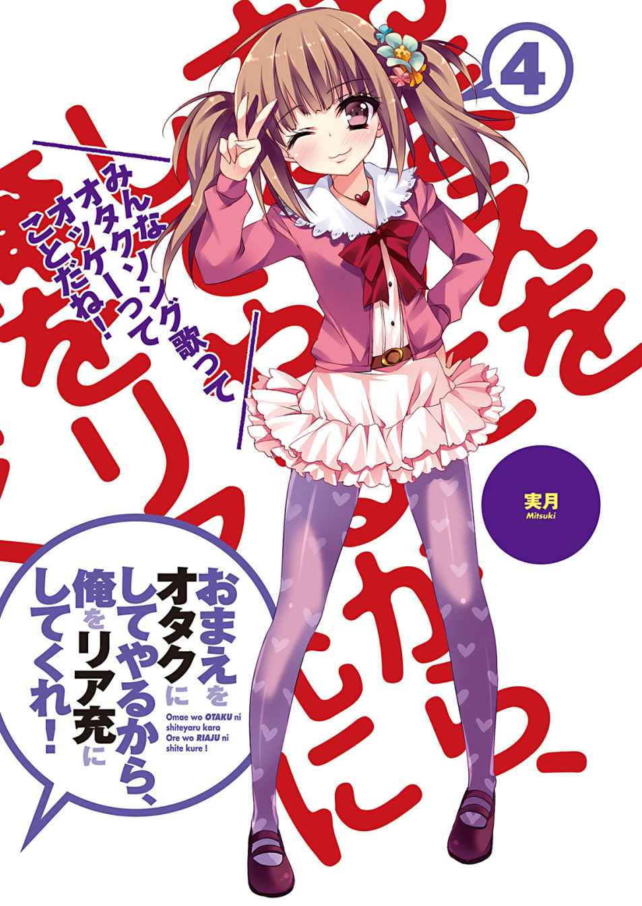
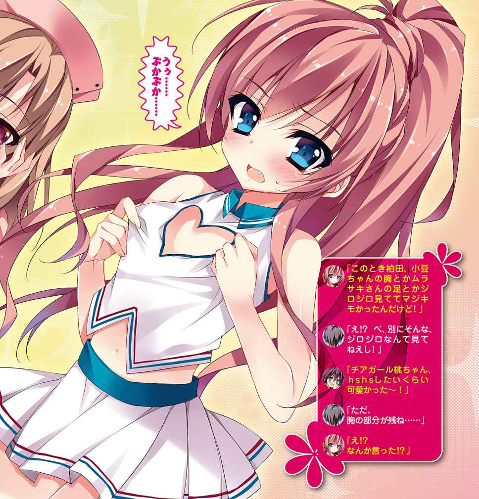
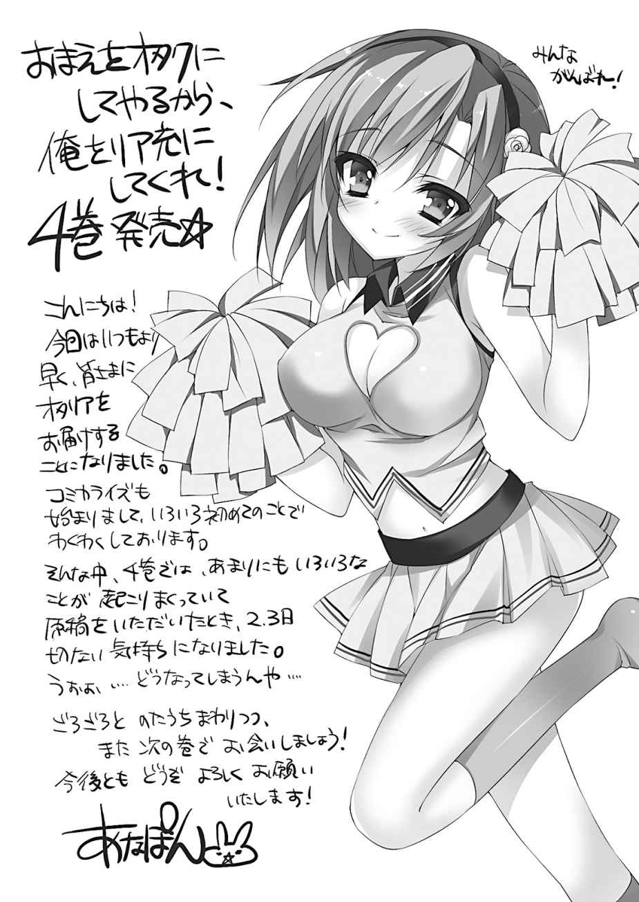

| おまえをオタクにしてやるから、俺をリア充にしてくれ！4 | |
| IV ofおまえをオタクにしてやるから、俺をリア充にしてくれ！ | |
| 村上 凛 | |
| 富士見書房 (2012) | |


おまえをオタクにしてやるから、
俺をリア充にしてくれ！４
村上 凛

富士見ファンタジア文庫
本作品の全部または一部を無断で複製、転載、配信、送信したり、ホームページ上に転載することを禁止します。また、本作品の内容を無断で改変、改ざん等を行うことも禁止します。
本作品購入時にご承諾いただいた規約により、有償・無償にかかわらず本作品を第三者に譲渡することはできません。
本作品を示すサムネイルなどのイメージ画像は、再ダウンロード時に予告なく変更される場合があります。
本作品は縦書きでレイアウトされています。
また、ご覧になるリーディングシステムにより、表示の差が認められることがあります。
口絵・本文イラスト あなぽん
１
夏休みが明けて二学期を迎えた。
始業式が終わり、俺は夏休み中に借りていた本を返すために図書室へと向かう。
すると、長谷川がカウンターで本を借りる手続きをしていた。
「あ、長谷川！」
「柏田君......」
放課後に偶然長谷川と会えるなんて、二学期初日からついてるなあと思う。
「柏田君も本を借りに来たの？」
「あ、俺は返そうと思って......」
「え、これ......」
長谷川は、俺が今から返却しようと思って手元に持っていた本を見て、驚いた表情をしている。
俺が夏休み中借りていたのは、ライトノベルだった。
一瞬、まずい、長谷川にオタクだってバレる──と焦ったが、俺は一息ついて覚悟を決めてから、ライトノベルを長谷川に渡した。
「今まで隠してたけど......俺、こういうの好きなんだ」
それは、俺にとって大きな賭けだった。
そのライトノベルは表紙からしてもろにオタクっぽい絵柄のものなので、一目でこういうの好き＝オタクだという判断になるだろう。
一学期までの俺だったら、長谷川相手に必死にオタクだとバレないように隠していたことと思う。
だけど今俺は、長谷川に対して一つの疑惑を抱いていた。
それは、長谷川自身も俺と同じ、オタク趣味を持っているのではないかという疑惑だ。
花火大会の日、ピザの箱に描かれたアニメキャラクターを見て、長谷川はそのアニメのキャラクターの名前を小さな声で、でも確かに、呟いた。オタクしか知らないようなマイナーな深夜アニメだったのに、長谷川はそのアニメを知っていたのだ。
その件について色々考えたが、俺の中でやはり、長谷川はオタクなんじゃないかという結論に至った。だったら、俺も自分がオタクだとカミングアウトしてみようと、花火大会の後決意したのだ。
今がその勝負のときだと感じた。
恐る恐る長谷川の顔を見る。覚悟を決めたものの、やはり怖いものは怖い。万が一、長谷川がオタクなどではなくて、俺のオタク趣味に対してひいてしまっていたら......。
だけど長谷川の表情を見て、一瞬で俺の心は安堵感に包まれた。
彼女は穏やかな笑顔で俺のことを見つめていたのだ。
「柏田君も、私と同じ仲間だったのね......。実は私も、隠してはいたのだけれど、漫画やライトノベルやアニメが大好きで......オタク趣味を持っていたの」
その言葉を聞けた瞬間、俺は心の中で一人ガッツポーズを決めた。
長谷川が、オタクだった。俺と同じ趣味を持っていた。
これからは、頑張って無理にオタクを隠す必要などないのだ。ありのままの自分をさらけ出していいのだ。
だって、一番大好きで認められたいと思っている相手も、同じ人種だったのだから。
「柏田君、全然そんな風に見えなかったから驚いたわ。隠すのが上手いのね」
長谷川にそう言われて俺は嬉しくなる。そうか、俺って自分が思っている以上に、うまくオタクを隠せていたんだなあ。
「そんな......長谷川の方こそ、全然オタクだなんて分からなかったよ」
「柏田君が同じ趣味を持っているだなんて、すごく嬉しいわ」
「え、ほんと!? 俺もだよ！ だって、お、俺......長谷川とずっと仲良くなりたいって思ってたから......！」
長谷川がオタクだと知り、嬉しさのあまり勢いあまってそんなことを言ってしまった。
長谷川は驚いた表情で俺を見つめている。
「だって俺......長谷川のことが......好きだから......」
拳を握りしめて、震える声で最後まで言い切った。長谷川の反応が怖くて、顔を見ることができずに俯いてしまう。
だが次の瞬間、俺の握りしめた拳は、暖かくて柔らかいものに包まれた。
「ありがとう、私も......柏田君のことが......好きよ」
長谷川は優しく俺の手を握りながら、穏やかな笑顔で、俺のことを見つめていた。
「ありがとう、ほんとにありがとう！ 俺たちきっと、素敵なカップルになれるよ！ だって、オタクっていう同じ趣味を持ってるんだから！」
「ええ、そうね！ これからは、たくさん互いの趣味の話をしましょう」
興奮気味の俺の言葉に、長谷川は笑顔で応えてくれた。
大好きな長谷川と、オタクカップルになれるだなんて......。
ああ、俺って今、世界一の幸せ者......
「直輝っ!? 夏休みだからっていつまで寝てんだよっ！ もう昼だよっ!?」
聞き慣れた声に目を覚ますと、俺は自分のベッドの上にいた。身体に掛けていた薄手の掛け布団が、勢いよく引きはがされる。
「え......？」
起き上がると、ベッドの横で妹のあかりが、今引きはがした俺の掛け布団を手に俺を睨み付けていた。
「ゆっ......夢......!?」
どうりで、途中から都合の良すぎる展開だと思った。
素晴らしい夢だっただけに、俺はひどく落胆した。
「何!? エッ......エロい夢でも見たわけ!?」
俺が落ち込んだ様子でいると、あかりが俺の方に身を乗り出して聞いてくる。
「はあ!? ちげえよっ！」
「あっそ。もうすぐ学校始まるってのにこんな時間まで寝てるなんて、二学期始まってから寝坊してもあかり知らないかんね！」
あかりは憤慨した様子で俺の部屋から出て行く。
あいつ、人の部屋に勝手に入って来やがって......。
八月最後の週に花火大会を終えてからの夏休み残り四日間、俺は家でぼーっとしたりバイト先でぼーっとしたり、とにかく毎日物思いに耽って過ごしていた。
勿論俺の頭の中は、花火大会のときに起きた衝撃的な出来事のことでいっぱいだった。
酒に酔った恋ヶ崎の口から出た、『桜井さんが俺のことを気に入っている』という発言。
花火大会の帰り駅へ向かう途中で見てしまった、浴衣姿の女の子と一緒に歩いている鈴木のこと。
そして......何よりも、長谷川がピザの箱に描かれていたアニメのキャラクターに反応したということ。
長谷川は、どうしてあんなマイナーな深夜アニメのキャラクターの名前を知っていたのか。
オタクではないが、偶然知っていたので、口に出してみた。
学校では出していないが、実は隠れオタクである。
普通に考えたら、可能性としてはこの二つのうちのどちらか一つだ。
そして俺は、後者であったらいいのに、と思うようになっていた。
長谷川がもし隠れオタクだったら、所謂俺と同じ人種なわけだ。好きな女の子と同じ趣味の話ができるだなんて、こんなに幸せなことはない。そんな妄想が膨らみすぎて、今朝のような夢を見てしまうほどになっていた。
これは一刻も早く、長谷川がオタクなのかどうか確認しなくては。
そしてオタクであることが判明した暁には、今朝の夢のように俺も同類であることをカミングアウトする。そうすれば一気に距離が縮まるだろう。
オタク友達として仲良くなれたところで、告白するのだ。
勿論すべてが今朝の夢のようにそう簡単にうまくいくとは思わないが、長谷川がオタクであった方が、今までよりもずっと勝率が上がると考えられる。
二学期が始まるのがもどかしく、悶々としながら残りの数少ない夏休みを過ごした。
＊
九月になり、待ちに待った二学期が始まった。
俺は気合いを入れて早めに起床し、髪型のセットにも気合いを入れて臨んだ。
「あ～今日からまた学校......だるー......」
妹が寝ぼけ眼で朝食を食べている。
「あかり、お兄ちゃんを見習ってしゃんとしなさい」
「......直輝、なんかいつもより準備早くない？」
洗面台に立つ俺の後ろから、あかりのだるそうな声が聞こえた。
「今日から二学期だぞ！ 気合い入れていかねーとな！」
髪型のセットを終えた俺は、元気良くあかりに振り返る。
「朝からテンションうざっ......。今まで長期休み明けは毎回学校行きたくねーとか言ってたくせに......変なもんでも食べたの!?」
怪訝な表情で俺を見るあかり。
「学校で彼女に会えるの楽しみなんじゃないの～？」
からかうように言ってくるオカン。
「彼女!?」
俺とあかりの両方がそのセリフを思わず聞き返す。
「夏休み中女の子とデートとか行ってたでしょ？」
「まあ、デートはしたが......彼女とかじゃ......」
言いながら、もう家を出なければいけない時間になったために慌てて鞄を背負う。
「いってらっしゃーい」
「いってきます！」
「......調子に乗ってドブにでも塡まればいいのに......」
妹の物騒なセリフが聞こえたが、気にしないことにして扉を閉め、慌ててリビングから玄関へ向かう。
なんであいつは俺がテンション高くしてるとああも機嫌が悪くなるんだか......どんだけ兄の不幸を願ってやがるんだ。
約一か月ぶりの満員電車も苦痛に感じることはなく、駅から通学路までの道のりを颯爽と歩き、前向きな気分で登校した。
早く、長谷川に確認したい。
長谷川が俺と同じ仲間であるのかどうかを。
学校に近づいたあたりのところで、見慣れた後ろ姿を発見した。
一瞬だけ声をかけるか躊躇したが、今日の俺はいつもと違う。
「よう、恋ヶ崎！」
今までだったら周りの生徒の目などを気にして声をかけるか迷ってしまったところだが、今日ばかりは堂々と声をかけることができた。
「......!?」
しかし次の瞬間、俺のテンションの高さは一瞬にしてどこかへ飛んでいった。
「おまえ、なんつう顔してんだよ......！」
俺の声に振り向いた恋ヶ崎は、髪型・メイクこそバッチリいつも通り決まっていたものの、目の下のクマが化粧で隠しきれておらず、顔色も悪く、今にも死にそうな表情をしていた。
「朝からうるさいわね......声が大きいのよ、頭にガンガン響く......」
「お前......寝不足なのか？」
ここまでテンションが低い恋ヶ崎は珍しい。新学期が始まったというのに、何で既に死にそうなのだろうか。
「寝れるわけないじゃん......」
低い小さな声でヤツは呟いた。
そのセリフを聞いて、恋ヶ崎がこんな風になっている理由がやっと思い当たった。
「あ、もしかして鈴木の件......」
「............」
俺は今の今まで完全に頭から抜けきっていた事実を思い出した。
花火大会の帰り道、恋ヶ崎の想い人である鈴木が浴衣姿の女の子と仲良さそうに歩いていたのを、俺と恋ヶ崎は目撃したのだった。
「あー、あれな......あの女の子なー......」
あのときはびっくりしたものだったが、俺にとってそれ以上に重大な出来事（長谷川がオタクかもしれないということ）があったために完全に頭から抜けきっていた。
「お前、もしかしてそのことが気になってずっと眠れてないとか......」
「当たり前でしょ......」
心なしか、足取りも少しふらついているように見える。
そりゃあそうか、俺だって長谷川が彼氏らしき男と歩いている姿なんかを見た日には......うん、ショックで首吊るかもな。
だが、花火大会で鈴木と女の子の姿を見たときから、俺の中に一つの思惑が浮かんでいた。
「あれってさ、俺、鈴木の姉ちゃんなんじゃねえかと思うんだよな」
「............え？」
恋ヶ崎は俺のセリフに驚いた様子で、目を見開いて俺を見つめた。
「お姉さん......？」
校舎に辿り着き、下駄箱で上履きに履き替えながら会話を続ける。
「ああ、鈴木には姉がいるんだよ。年とか詳しいことは聞いたことねえけどさ、鈴木に彼女なんて考えらんねえし、姉ちゃんって考えるのが一番自然なんじゃねえかなーと」
「......でも......普通、お姉さんと一緒に花火大会なんて来る？」
ヤツは俺を睨み付ける。適当なこと言わないでよ、とでも言いたげだ。確かに、姉弟で花火大会に行くだなんて、相当姉弟仲が良くない限り考えられない。
「それに、じゃあこれは何だと思う？」
「......えっ？」
俺の目の前に、恋ヶ崎のスマホが差し出される。
画面には、一枚のプリクラ画像がいっぱいに表示されていた。写っているのは、鈴木と......可愛い女の子。鈴木が女の子と仲良さそうにプリクラなんぞを撮っていること自体違和感があるのだが、その画像にはもっと不可解な点があった。
「これって......花火大会のとき鈴木が一緒にいた女子とは......また別の子......？」
花火大会で鈴木の隣を歩いていたのは、一瞬しか見ることができなかったが、金髪に近い明るめの茶髪を二つの団子にまとめ、派手な髪飾りをつけ、髪型、浴衣共に派手な感じの、俺たちと同い年くらいに見える可愛い女の子だった。鈴木が三次元の女の子と一緒に歩いていること自体驚いたが、隣を歩くのがそんな派手な感じの女の子というところにも違和感を覚えた。
しかし、このプリクラに写っている鈴木の隣にいる女の子は、花火大会で見た女の子とはまた別人だった。黒髪を短いボブカットにしていて、黒縁眼鏡をかけてセーラー服を着ている。知的な美人、という印象だ。
俺の憶測が正しければ、花火大会に一緒に来ていた女の子は鈴木の姉。
では、このプリクラに写っている女の子は一体？
そこで俺たちは教室付近に辿り着いたが、中には入らず廊下で話し込む。
「このプリクラ画像、どうしたんだ？」
「ミクシイで鈴木君のページ見てたら、マイミク一覧に女の子っぽい名前の子がいたから飛んでみたの。そしたら、その子のプロフ画像がこれだった......」
俺はその画像が信じられなくて、恋ヶ崎のスマホを取り上げたままひたすら見つめ続けた。二人はピースしていて、上部に『なかよし 』と手書き文字で書かれている。この左側に写っているオシャレなイケメンは、本当に鈴木なのか？ プリクラ効果なのか普段の鈴木よりやや目が大きく写っていて女みたいな顔になっているが、鈴木であることには間違いない。このプリクラで着ている私服を俺は見たことがあるし、何より下部に『そうちゃん』と、鈴木の下の名前が書かれている。
』と手書き文字で書かれている。この左側に写っているオシャレなイケメンは、本当に鈴木なのか？ プリクラ効果なのか普段の鈴木よりやや目が大きく写っていて女みたいな顔になっているが、鈴木であることには間違いない。このプリクラで着ている私服を俺は見たことがあるし、何より下部に『そうちゃん』と、鈴木の下の名前が書かれている。
「確かに鈴木君はモテるけど......可愛い女友達が何人いても不思議じゃないけど......」
恋ヶ崎が俺の手からスマホを取り返しつつ、ボソボソと呟いた。
あの女嫌いの鈴木に、こんなに仲のいい女友達が二人？ やはり違和感がある。
「けど、二人でプリ撮るのも、二人で花火大会に行くのも、普通女友達となんてしなくない？ 彼女とするよね？......もうわけわかんない」
......ということは、鈴木に、彼女が二人？
いや、それはもっとありえない。鈴木は、そんな奴じゃない。
「もうやだ！ 何もかも意味わかんない！」
恋ヶ崎は取り乱してそんな風に喚き出す。
「とりあえず、落ち着けよ......」
俺も動揺していたが、恋ヶ崎の様子は俺の比じゃない。気持ちは分かるが......。
「......ねぇ、あんた、協定関係結んでるんだから、鈴木君に確かめてきてよ！」
「え......？」
恋ヶ崎はキレた様子で、俺にそんなことを言ってきた。
「最近あたしばっかあんたにアドバイスしてあげてて不公平じゃん！」
「な......」
確かに最近長谷川の件で恋ヶ崎にはアドバイスをたくさんしてもらったりしているが、俺だって俺なりに恋ヶ崎のために頑張っているつもりなのだが......。奴は眉間に皺を寄せて、鋭く睨み付けてくる。鈴木の件で不機嫌になっているのは分かるが、仮にも俺に頼み事をしているくせに、そんな態度ってないんじゃないかと思う。
「......ったく、分かったよ」
恋ヶ崎の態度は気にくわなかったが、俺自身も、一体どういうことなのかはっきりと確かめたいと思ったので、そう返事をした。あの鈴木に彼女らしき人が......しかも二人だなんて、一体どういうことなのか、真実を知りたい。
「あっ、でも......あたしが気にしてるとか、そういう余計なことは言わないでよ!?」
「言うつもりねーよ」
恋ヶ崎は最後まで不機嫌そうに、俺を置いて一人スタスタと教室へ入っていった。
あの鈴木に彼女がいるだなんて、正直俺は何かの間違いだと思っていた。
一度鞄を教室に置いてから、鈴木がいるＢ組の教室の後ろの扉を開けてみる。
いつぞやに鈴木が誰だかを教えてくれた後ろの方の席に座る地味な男子生徒と目が合った。
「あ......鈴木いるかな......？」
「鈴木、呼んでる」
男子生徒が鈴木を呼んでくれる。着席していた鈴木がこちらに気づいて向かってきた。
「カッシー久しぶり～！ 元気してたー!?」
「ああ、まあボチボチ......」
相変わらず無邪気に笑いかけてくる鈴木。本人を目の前にするとちょっと聞きにくいなあと思いながらも、
「あのさ、お前夏休み中に彼女できた？」
と、単刀直入に聞いてみた。
「え......？」
鈴木は俺の質問に一瞬きょとんとしたが、やがて、
「あー、彼女ね！ できたよ！」
と、笑顔で明るく答えた。
「え......？」
俺は鈴木の返答に頭が軽くパニックになる。
彼女ができた......？ やはり、花火大会の日に見たのは......
「夏休み中ＰＳＰの『写真彼女』にハマっちゃってさー！」
「......は？」
鈴木の口から出たのは、夏休み中に発売された新作ゲームのタイトルだった。
「いや、そうじゃなくて......」
「え、違うの？ あ、じゃあ夏アニメの話？ 今回ツボなキャラいっぱいいんだよねー」
「あのな鈴木、そうじゃなくて......三次元で、彼女できたかって聞いてんだよ」
「......三次元？ できるわけないじゃん」
鈴木はドヤ顔で、何そんな当たり前なこと今更聞いてるわけ？ とでも言いたげにきっぱりと言い切った。
「えーと......それじゃあ......」
俺はその場で携帯をミクシイに繫げる。鈴木のページからマイミク一覧を見て、先ほど恋ヶ崎のスマホで見たプリクラ画像をプロフ画像にしている人を探し、その人のページに飛んでからプロフ画像のプリクラを拡大する。
「これは、なんだ？」
俺の携帯いっぱいに表示された、黒髪ボブカットのメガネ美人と鈴木の仲睦まじいプリクラ画像を、鈴木に差し出す。
「げっ......なんでカッシーがこれ......？ え、ミクシイ？」
鈴木は大して驚きもたじろぎもせず、代わりに嫌そうな顔を浮かべた。
「お前のマイミク一覧に、このプリクラをプロフ画像にしてる人がいてな」
「マジで？ 姉貴、このプリクラプロフ画像にしてんの？ 頭おかしいんじゃねーのあいつ？」
鈴木は心底呆れたような表情で、そのセリフを言った。
姉貴。鈴木は今確かに、姉貴と言った。
「この娘、お前の姉貴なのか!?」
「そーだよ、いつも話してるまじ最悪な姉貴」
「めちゃくちゃ可愛いじゃねえか！ しかも、姉と二人でプリクラ撮るなんてすげー仲いいじゃん！」
「ちょっ、やめてよ！ これは脅されて無理矢理撮っただけだし、あいつミクシイで最近変なメールばっか来るとか言ってたから、ナンパメール防止にこの画像プロフにしただけだと思うし......俺にとっては超迷惑だけど」
このプリクラの女の子が彼女なんかではなく姉貴だったという事実に、俺は思わずほっとする。しかし、すかさず次の疑問を思い出した。
「あ......あとさあお前、花火大会......」
花火大会に一緒に来ていた、もう一人の彼女候補の女の子のことを確認しなくては。
「花火大会？」
「えーっと......なんだっけ......」
俺は自分が行った花火大会がどこのものだったかをド忘れしてしまった。
「......江戸川？ だっけかな、江戸川花火大会って行った？」
「江戸川？ 行ってないよ」
鈴木の発言に、俺は心から安堵した。
「そっかー！ そうだよなー！」
俺は大げさに鈴木の肩をバシバシと叩いた。
始業式のためにそろそろ体育館に移動しなければならないので、俺はそこで、
「じゃあさんきゅーな！」
と鈴木に別れを告げ、教室へ戻った。
鈴木はきょとんとしていたが、俺の心は晴れ晴れとしていた。
やはりあれは、完全に俺と恋ヶ崎の見間違いだったのだ。
あれは鈴木に似た別の誰かと、その彼女だった。それで間違いない。あの鈴木に彼女なんてできるわけがなかったのだ。
「はあ？ ばっかじゃないの!? 見間違いなわけないじゃん、あれは絶っっっ対に鈴木君だった！」
始業式を終えて、俺は恋ヶ崎を階段に呼び出し鈴木に聞いた話を全て告げた。
プリクラに写っている女の子は鈴木の姉であったこと、鈴木は彼女なんかできてないと言ったこと、鈴木は花火大会には行ってないと言ったこと。故に、俺と恋ヶ崎が見たのは見間違いだったのではないかと。
で、返ってきた恋ヶ崎の言葉がそれだった。
せっかく聞いてきてやったのに罵声を浴びせられて馬鹿呼ばわりされるだなんて、まったくもって心外だ。
「バカとは何だよ！ 鈴木は花火大会に行ってないってはっきり言ったんだぞ？」
「噓......。んなわけない......あれは絶対、絶対鈴木君だった！」
ぶすったれた表情で、頑なに俺が告げた事実を信じようとしない恋ヶ崎。
「だって、このあたしが、誰よりも鈴木君のことを好きな、このあたしが......他の誰かを鈴木君と見間違えるなんてこと絶対しないもん！」
鈴木君のことを好きな......という部分は周囲に聞かれるのを恐れてか少し声のボリュームを落として、恋ヶ崎ははっきりと俺に訴える。
「んな自信満々に言ってるけど、あんときお前ベロベロに酔ってたじゃねえか」
「酔ってたって鈴木君のことは見間違えないし。ってか、あんただって見たじゃん！」
「まー見たっちゃ見たけど、あれはお前が鈴木だ、っていうから鈴木に見えたのかもしれねえし、正直はっきりと見たわけじゃねえし......」
俺のセリフを聞いてもなお、恋ヶ崎は頑なに自分の意見を曲げない。
ったく、どこまでも頑固なヤツで困ったものだ。
「とにかく、鈴木にまで確認してやったんだから、もうこれで納得しろよ。それより、俺も今相談したいことあって......」
俺はそこで恋ヶ崎と二人きりで話せる機会があったら相談したいと思っていたことを思い出したので、ここぞとばかりに持ちかけた。
それは、長谷川がオタクかもしれないという件と、以前恋ヶ崎の口から告げられた、桜井さんが俺のことを気に入ってる、という件だ。
花火大会で長谷川がオタクかもしれないと思える出来事があったことを、まだ恋ヶ崎は知らないので、その話をした上で長谷川がオタクかどうかをどう確認したらいいか、恋ヶ崎に相談したいと思っていたのだ。
また、花火大会の日に恋ヶ崎本人の口から出た『小豆ちゃんがあんたのこと気に入ってるっぽいんだってば！』というセリフが、一体どういうことなのかも問いただしたいと思っていた。
「......それより!?」
しかし、奴の反応を見て、タイミングを誤ったと感じた。恋ヶ崎は眉をひそめて俺を睨み付けてきたのだ。
「あんた......自分が相談したいからって、適当なこと言って鈴木君の件ごまかしてるんじゃないの!?」
「え......？」
恋ヶ崎のセリフは心外なものだった。
「お前なあ......人がせっかく親切で鈴木に確認してやったっていうのに、疑うっていうのかよ！」
「でもあたしが見たのは確実に鈴木君だったもん！ 絶対に見間違いなんかじゃない！ ......はーあ、そりゃああんたはいいわよねえ、夏休み中だって長谷川さんとデートして、花火大会も一緒に行けてさ。あたしなんてただでさえ夏休み中一回だけ、しかも超短時間しか鈴木君に会えなかったってのに、その上彼女がいるなんて判明するし......」
恋ヶ崎はイライラした様子で話し続ける。
「あーあ、あたしはなんであんたの恋愛に協力してあげまくってるっていうのに、なんであんただけうまくいってあたしだけうまくいかないわけ？ 超不公平！」
「んな......俺だって一応、お前にいろいろ協力してやってるつもりだけど......」
恋ヶ崎がオタクになって鈴木と仲良くなるために、コスプレに付き合ったり夏コミに付き合ったり......俺なりに、できることはしてやっているつもりだが、それだけじゃ不満だと言うのだろうか。
「じゃあなんで、あたしは鈴木君と全然仲良くなれないのよ！ その上、彼女までいるって判明するし......」
恋ヶ崎は再び俺を睨み付けて、憤慨した様子でそんなセリフを口にする。
八つ当たりされて俺の方も大概腹が立ち、言い返そうとした......が、そのとき。
「あれ、桃ちゃん！......と、か、柏田君！」
桜井さんが通りかかった。
「あ、さっ、桜井さん......!?」
瞬時に、花火大会のときに恋ヶ崎が口にした『小豆ちゃんがあんたのこと気に入ってるっぽいんだってば！』という言葉を思い出してしまい、動揺してしまう。
どこまで真実かどうかも分からないので真に受けてはいけないと何度も思っているのだが、どうにも期待せずにはいられない。
「や、やあ......」
なるべく自然に振る舞おうと挨拶してみたが、逆に不自然になってしまった。ああ、俺、我ながら意識しすぎだ......。
「......？ こんなところで、二人でお話ししてたんですか？」
「あっい、いや、そのっ......」
俺たちの様子を見て不思議そうにしている桜井さん。どうやら話は聞かれていなかったようなので、ほっとした。しかし、タイミング悪いなあ。恋ヶ崎がこんなにブチ切れているところにくるだなんて......
「小豆ちゃん、久しぶり～っ！」
「!?」
次の瞬間、恋ヶ崎は瞬時にころっと態度を変えて、上機嫌で桜井さんに抱きついた。
そのあまりの豹変ぶりに、俺は自分の目を疑う。
これが今の今まで俺に罵声を浴びせ続けていた恋ヶ崎と、同一人物なのか......？
「ねー！ プールぶりだね～っ！」
二人はきゃっきゃとじゃれ合い出す。プールぶりだったらまだ二週間くらいしかたってないじゃないか。抱き合うほどじゃないだろ、大げさな......。
「小豆ちゃん、教室でゆっくり話そ！」
「えぇっ!? でも、柏田君は......」
恋ヶ崎は桜井さんの手をとり、二人で手を繫いで教室へと入っていった。桜井さんは放置されている俺のことを気にしていたが、恋ヶ崎はお構いなしですたすたと歩いて行く。
俺はただただあっけにとられて、その場に立ち尽くした。
あいつ......いくらなんでも俺への態度と桜井さんへの態度を変えすぎだろ。俺が今の様子を見て何も思わないとでも思ったのだろうか。さすがにこれにはものすごく頭にきた。
あれだけ俺にはブチ切れていたくせに、他の人には優しい態度をとり、その様子を見せつけてくるだなんて......俺への嫌がらせなんじゃないかとすら思えてくる。
俺は何一つ悪いことなどしていないのだから、完全にただの八つ当たりだ。どこまで子供なんだよあいつは。
もう知るかあんな奴。協力をしてやろうという気も一気に失せてくる。
イライラしながら教室へ戻り、席に着くと、後ろの席の桐谷に声をかけられた。
「柏田、お前結構焼けたな」
「え、あ、ああ......」
恐らく夏コミ焼けだが、それは言えない。
「き、桐谷も、すげー焼けたな！」
誤魔化すために話題を振り返してみる。桐谷は元々どちらかと言えば色黒だったが、夏休みを挟んで一学期より一層焼けてる気がする。
「あー、色々行ったからな～彼女とプールだろ、海だろ、旅行だろ～」
「あーおつかれさまっしたー、リア充うぜー」
こいつ、自分が自慢したかったから日焼けの話を振ってきただけだろ。
「まあ確かに俺はリア充的夏休みを過ごしたわけだが、俺よりもっとリア充なヤツがいんだよなー」
自分でリア充って認めるって、こいつ相当痛いな。
「そりゃあいくらでもいんだろ、お前よりリア充なヤツなんて」
「細川、いんじゃん」
桐谷が、窓際の後ろの席である俺たちの席からは大分離れた、廊下側の前の方の席に座っている細川という男子生徒に目を向けた。
細川......確かサッカー部でイケメンでモテ男で俺たちの敵であるということ以外は、彼について何も知らない。
「あいつ、うちの学校の女子とか、他の学校の女子も含めて、夏休み中色んな女とやりまくりだったらしいぜ」
「えっ......」
細川の顔を、今一度確認する。いかにも運動部という感じの爽やかな出で立ちで、クラスでも女子に優しい感じの男だった気がする。
「そういう風には、あんま見えねえけど......」
「まあモテるだろうから女から寄ってきてんのかもしんねえけどなー」
「あーなるほどなー。......けど、それってリア充っていうのとはちょっと違うような......」
俺たちのくだらない会話をチャイムがかき消し、担任が教室へ入ってきた。
ホームルームが終わり、二学期初日の学校は無事終わった。
なんやかんやと他の奴らと話している間に、今日俺が話したくてたまらなかった長谷川とまだ一度も言葉を交わせていないことに気づく。
せめて帰りくらい一緒に帰ろう。そしてさりげなく、長谷川がオタクかどうか確かめてみるのだ。
長谷川は自分の席に座ったまま学級日誌を書いていた。
一緒に帰ろうと声をかけるために長谷川の席の近くへと移動する。
「あ......柏田君」
俺の姿に気づいた長谷川が、声をかけてくれた。
一学期の頃だったら、俺が近づいてもこんな風に声をかけてくれることはなかったと思う。長谷川の方から声をかけてくれたことに、素直に喜びを感じた。
花火大会の日以来、約一週間ぶりに見る長谷川の姿。
夏を終えても少しも日に焼けていない透き通るような白い肌に、黒くて艶やかな髪。
「新学期早々、学級委員の仕事大変だね！」
なんて声をかけたらいいか分からず、とりあえず長谷川の学級委員の仕事について触れてみる。
「いえ、別に、大変だなんてことはないわ......」
長谷川は無表情のまま、だけど視線は学級日誌から俺へと向けてくれた。
「ほ、他に何か仕事あるの!?」
「いえ、あとはこれを職員室へ持って行くだけよ」
まだ仕事が残っていたら手伝うつもりでいたのだが。
「......そっか......じゃ......じゃあさ、よっ......」
「......？」
「よ、良かったら......一緒に帰らない!?」
教室にもうほとんど生徒がいなかったために、なんとかそのセリフを言うことができた。
「え......」
長谷川は驚いて俺を見ている。
「えぇ......勿論、構わないけれど」
内心どう思っているかは分からないが、長谷川から承諾の返事をもらえて安堵する。
それから荷物をまとめて二人で教室を出て、職員室へ学級日誌を持って行く長谷川に付き合ってから、学校を後にした。
その間、テンパった俺がなぜか夏休み中の宿題トークを振ってしまい、オタクかどうかを確かめる方向へ話題を持って行くことができなかった。
学校から駅に着くまでの間にどうにかしてそっちの方向へ話を持って行かなければと焦る。
「あ、あのさあ、夏休み中長谷川はテレビとか見た!?」
夏休みの話題からなんとかテレビの話題に持っていく。
俺は長谷川がアニメを見るのかどうかを確かめたかった。
「テレビ......？ それほど見てはいないけれど、朝のニュースと、他にも週に何度かは見たわ。特に深夜などに......」
「深夜!?」
つい少し声が大きくなってしまい、長谷川がびくっとした。
「あ、ご、ごめん......」
だって週に何度か深夜にテレビ見るっていったら、アレだよな!? 深夜アニメしかないよな!?
「えぇ、普段学校へ行っているときは翌日のことを考えて遅い時間にはテレビを見ないようにしているのだけれど、夏休み中だからと思ってハメをはずして結構見てしまって......」
「うんうん！ それってもしかして、ア──」
アニメ、と言おうとしたそのとき。
「ええ、アマトークよ。もしかして、柏田君も見ているの？」
............。
「ああっ！ アマトークね！ うんうん！ 俺もたまに見てるよ!!」
危ね────っ！ そっちかよ！
「あ、で、でも、さっき週に何度かって言ってたよね？ 他には深夜に何見るの？」
アマトークは週に一度しかやっていない。他に深夜に見るといえば、やっぱりアニ──
「ええ、他には......」
続いて長谷川の口から、お笑い番組のタイトルが三つほど挙げられた。長谷川がお笑い好きであるということは以前レンタルビデオ屋へ行った際に確認がとれていたが、ここまで好きだったとは......意外だ。
「そっ、そうなんだ......それ以外には......」
「それ以外......そうね、最近好きだったバラエティ番組が結構終わってしまって、毎週欠かさずに見ているのはそのくらいかしら......」
「ああっいや、その、お笑い以外にはなんか見てないのかな～と......」
「お笑い以外......そうね、朝のニュース以外には、あまり見ていないわ。母や妹が見ていて、なんとなく一緒に見ることはあるけれど......」
「あ、そ、そっか......」
つまり、アニメなどは一切見ていないと。
残念な気持ちになりながらも、落ち込んでいるのがバレてはいけないと思い、
「すっごい、お笑い好きなんだね～」
と、笑顔で返した。
「でも、意外だな～、長谷川がお笑い好きなんて......」
「そう......かしら」
「うん......あ......なんか、お笑い見るようになったきっかけとか......あるの？」
「......以前、クラスの子たちがよくお笑いの話をしているのが聞こえてきて......」
「え!? そ、そうなの？」
長谷川が自分の話をしてくれたことが嬉しくて、思わず食いつく。
「それって今のクラスで!?」
「いえ、中学の時の話なのだけれど。席の近い女の子たちがお笑いの話で盛り上がっているのを聞いているうちに、気になりだしたの」
「あ、そうなんだ～？」
「今にして思えば......その子たちの話題に、入りたかったのだと思うわ」
「な、なるほど......」
その後お笑いを見るようになってから彼女らの話題に入れたのかどうか気になったので聞こうとしたが、心なしか長谷川が寂しそうにそのセリフを言ったので、もしかしたら話題に入ることはできなかったのかもしれないな......と失礼ながら勝手に予想し、聞くのをやめた。
「今のクラスでもお笑いの話題が出ることが結構あるようだから、勉強のためもあってよく見ているの。......勿論、自分が好きだからというのもあるけれど」
勉強!?
そうか、長谷川は、クラスの輪の中に入るために、お笑いを見ていたっていうのか！
なんて涙ぐましい努力なのだろうか......。
「......柏田君？ なんだか涙目になっていない？」
「えっえぇ!? 気のせいだよ！ 目にゴミでも入ったかな～」
長谷川がお笑い好きの理由を聞いて、つい切なく、そして一層長谷川のことが愛しくなってしまった。まさか無意識に涙ぐむほどとは自分でも思っていなかったが。
「あ......そうだ、そういえば長谷川、花火大会の日無事帰れた!?」
唐突に花火大会の日のことを思い出して、長谷川に尋ねた。
あの日、俺と長谷川・恋ヶ崎・笹川は駅までは一緒だったのだが、みんなで改札を通った時俺一人だけスイカの残高が足りず赤く光ってしまい、駅に人もすごかったのでそこで女子たちと別れることになった。
夜遅かったし長谷川を家まで送れたらなあ、なんて思っていたのに、とんでもなく間抜けな別れになってしまった。
その夜長谷川に来てくれた礼をメールしようか迷っているうちに、人混みに疲れ切った俺は眠ってしまっていた。翌朝目覚めて、何をやっているんだ俺はと後悔した。翌日にそんなメールを送るのもなんだかなあと思ったので、悩んだ挙げ句メールするのは諦めた。
「ええ、問題なく帰ることができたわ」
「そっか！ あの......花火大会、来てくれてありがとね！」
「え......」
長谷川が、俺の礼の言葉に目を見開いた。
「そんな......礼を言うのはこっちの方だわ」
「......え？」
「誘ってくれて......ありがとう。あの日......とても楽しかったわ」
長谷川が、花火大会を楽しかったと言ってくれるだなんて。
誘った俺に気を遣ってそう言ってくれたのかとも思ったが、長谷川はそういう噓はあまりつかないだろうと思った。確かにあの日、長谷川は結構楽しそうだった。恋ヶ崎と笹川の会話に笑っていたりしたし。
っていうか、あの日長谷川、恋ヶ崎や笹川といったクラスのメンバーに完全に溶け込んでいたよな。
俺は自分のことでいっぱいいっぱいであまり気を遣えなかったが、俺なんかが気を遣わなくても、長谷川はちゃんとクラスの中に溶け込めていた。
この調子でいけば、これからも少しずつクラスの輪に溶け込んでいけるんじゃないだろうか。
「あ、じゃあ私ここで......」
「あ、うん、気をつけて！」
駅に着いてしまったので、地下鉄に乗る長谷川とそこで別れた。
長谷川がオタクかどうか確かめるという本来の目的を果たせなかったということに、今になって気づく。
まあ無理に聞き出すのもよくないし、長谷川だって俺のようにオタクを隠しているかもしれないので、明日からも焦らずゆっくり聞いてみよう、と思った。
その日は午後からバイトの予定を入れていたので、一度家に帰って昼食をとってからバイトへと向かった。
バイト先に到着し、支度をするために従業員控え室に入る。
「おはようございまーす......あ」
扉を開けて挨拶をすると、山本さんが着替えていた。
「あ、柏田君、おはよう」
「山本さん、今上がりですか？」
山本さんはシャツのボタンを全て閉じ終え、黒のジャケットに袖を通した。
彼は今日スーツ姿だった。いつも私服姿だったので、なんだか新鮮だ。しかし、なぜスーツ？ 俺がスーツ姿を不思議そうに眺めていると、
「うん、今日はこれから面接なんだ」
「面接？」
もしかしてこのバイト辞めて他のバイトを始めるのか？ 山本さんがこのバイトを辞めたら俺の唯一の心の救いがなくなってしまう......などと一瞬不安がよぎったが。
「うん、今就活中だからさ」
「あ、そうだったんですか......」
そうか、就職活動か......。一瞬安心しかけたが、しかし企業に受かったらバイトを辞めてしまうことには変わりないんだろうなと思い、残念に思う。
就職活動中ということは、山本さんは大学生だったのか。二十代前半くらいだろうなあとなんとなく思っていた程度で、山本さんが普段何をしている人なのか、俺は全く知らなかった。会っても世間話や、俺の話や、山本さんの妹の話しかしていなかった。
「でもこの不景気じゃなかなかうまくいかなくてね～......ってやべっ、面接に遅れる！ ごめん、今度ゆっくり話そう！」
「あ、はい、すみません！ 面接頑張って下さい！」
山本さんは慌ただしく荷物をまとめて控え室から出て行った。
俺も急いでバイトに入るための支度を始める。
「今日山本さんスーツ姿だったんですよー。加藤さん見ましたー？ 山本さん超スーツ似合ってないですか？ めっちゃかっこよくないですかー？」
今日も今日とてバイト先のアイドル（笑）渡辺さんと、チャラ男加藤がキッチンでだべっていた。
なんで俺この二人と同じシフトになる率高いんだろうか。不快極まりないのだが。
まじやばいんですけどー！ と渡辺さんは興奮気味に加藤の腕を叩いている。加藤はやや迷惑そうにしていた。
「でも山本さん、もう大学行ってないし今フリーターなんだよなあ。なんで大学在学中に就活しなかったんだろうなー」
「えっ......」
加藤の言葉に渡辺さんが驚いている。
「そーなんですか......？ あやてっきり、山本さんってまだ大学生なのかと思ってたんですけど......」
俺も渡辺さんと同じ心境だった。
「いや、確か今はもう大学行ってないって前聞いたよ。ってか今二十三とかじゃなかったっけ？ もう大学生の年齢じゃないじゃん。でもさー普通、大学行ってるときに就活しねー？ 真面目な人だったら。大学時代遊びすぎて就活しなかったんかねー」
「ちょっと加藤さん、まじやめてくれません!? 山本さんに限ってそんなことありえないですからー！」
俺は心の中で渡辺さんに同意した。勝手に適当なこと抜かすなよ加藤。あの真面目でしっかりしてそうな山本さんのことだから、きっと何か事情があったに違いない。今度会ったら、妹さんの話も含めて、聞けそうな範囲で聞いてみようかな。
六時にバイトを終えて、帰宅した。
家に着いて夕飯を食べ終えてから、自室へ行きいつも通りパソコンの電源を入れる。
まずＢＧＭ代わりにｉＴｕｎｅｓから音楽を流してイヤホンを耳につけ、パソコンのメールをチェックする。それから、いつも見ているまとめサイトに、画像掲示板、ニコニコ動画のランキング、pixivで好きな絵師の更新がないかどうかなど一通り毎日見ているページをチェックした後、ふと思い立ってミクシイにアクセスしてみる。
普段なら滅多にミクシイにログインなどしないのだが、今日の学校での荒れてる恋ヶ崎の様子を思い出して、恋ヶ崎の新しいつぶやきが更新されているかどうかチェックしてみようと思ったのだ。
夏コミ後にマイミクになった恋ヶ崎は、夏休みの間は結構な頻度でつぶやきや日記を更新していた。
つぶやきの内容はといえば、『美樹と渋谷うぃる！』『ブレスレット安かったから買っちゃった☆ 超かわいい～（ブレスレットの画像付き）』『暇なんでネイルやってみたー
 （ネイルの画像付き）』『今日から我が家に家族が増えました♪ 心愛（ここあ）ちゃんです／＼（犬の画像付き）（どうやら夏休み中に犬を飼い始めたらしい。DQNネーム乙）』......といった具合で、俺にとってはどうでもいい内容ばかりだったが、明るい内容のものが多かった。
（ネイルの画像付き）』『今日から我が家に家族が増えました♪ 心愛（ここあ）ちゃんです／＼（犬の画像付き）（どうやら夏休み中に犬を飼い始めたらしい。DQNネーム乙）』......といった具合で、俺にとってはどうでもいい内容ばかりだったが、明るい内容のものが多かった。
しかし、花火大会以降更新が一気に減った。
日記はその間一度も更新されてないし、つぶやきが更新されても『あー‥ちょっとショッキングなできごとが‥（）まだはっきり分かったわけぢゃなぃけど‥まぢ落ちるゎー・・』とか、『なんで最近こうもうまくいかないことばっかなんだ?? 毎日暑いしもう何もかもがいゃだ──ッ 』とか、『もうすぐ学校とかだるすぎる行きたくないッ＼／』といった、何について落ち込んでいるか直接的には書いていないものの、ネガティブな内容のものばかりだった。
』とか、『もうすぐ学校とかだるすぎる行きたくないッ＼／』といった、何について落ち込んでいるか直接的には書いていないものの、ネガティブな内容のものばかりだった。
どうやら、花火大会で見た鈴木らしき人とその彼女らしき人のことを、ずっと引きずっているようだ。
また恋ヶ崎の鬱なつぶやきが更新されているのだろうかと思いながらログインすると、新着メッセージが一件来ていた。
メッセージが来ることなど滅多にないので驚きつつも、その前に一応マイミクのつぶやきをチェックする。まさに今日、つい三十分くらい前、恋ヶ崎の新しいつぶやきが更新されていた。
『あたしってなんで視力１・５もあるんだろ‥いっそ目が悪かったならよかったのにな‥。今日はイライラして人に当たってしまった。最悪（-_-）』
人に当たってしまった......って、もしかして、今日俺に八つ当たりしたことを言っているのか......？ あいつ、一応自分でも八つ当たりだと分かって反省してるんだな......。いや、もしかしたら俺の自意識過剰で、全くの別件という可能性もあるが......。
それから、新着メッセージを開いてみる。
送り主は『ムラサキ』という名だった。
......って、ムラサキって、夏コミで会ったあの同人作家のムラサキさん!?
『こんにちは、夏コミでお世話になった同人作家のムラサキです。覚えてらっしゃいますか？』
勿論覚えてますとも！ っていうか、お世話になったのは確実にこっちなんですけど。
『桃さんに、こちらが柏田さんのページだと伺ったのでメッセージ送らせて頂きました。もし宜しければマイミク申請を出しても良いですか？』
そのメッセージを読んだ瞬間、俺は光の早さでムラサキさんのページのマイミク申請ボタンを押した。
ああ、神様ありがとうございます。恋ヶ崎様ありがとうございます。もう二度と会えないと思っていたムラサキさんとミクシイで繫がることができるだなんて、夢のようだ。ミクシイってほんと素晴らしいサービスだな。
『メッセージありがとうございます！ 夏コミでは大変お世話になりました、ありがとうございました！ ムラサキさんからメッセージ頂けるだなんて本当に嬉しいです。マイミクありがとうございます！ 是非お願いします！』
と、テンション高すぎて引かれるかもしれない文章をメッセージ欄に入力し、送信する。
送信した後、ムラサキさんのプロフィールページを見てみる。主に同人活動のお知らせが掲載されており、ホームページやブログのアドレスがあったためどちらともブックマークしておいた。と、そんなことをしているうちに再度新着メッセージの文字が現れる。
慌てて確認すると、ムラサキさんだった。どうやら今ちょうどムラサキさんもミクシイにログインしているようで、すぐに返信を打ってくれたみたいだ。
『早速のマイミク申請ありがとうございます♪ 実は、桃さんのことでご相談がありまして......もし宜しければ、いつでもいいので携帯メールかスカイプなどでお話しできないでしょうか？ 難しければ、ミクシイのメッセージのやりとりでも全く構いませんので。』
携帯メールかスカイプ!? 出会い系サイトにおける悪徳業者のサクラ並に早すぎる展開だが、こんな順調に距離が詰められるなんて何かの罠ではないよな。──って、落ち着け俺、んなわけあるか。どうも相手がムラサキさんだと興奮してテンパってしまい、何か裏があるのではないかと勘ぐってしまう。
メッセージの後にムラサキさんの携帯メールアドレスとスカイプのＩＤがあったので、携帯メールアドレスはすぐに自分の携帯に登録した。後でメールを送ろうと思う。
スカイプの友達検索で教えてもらったＩＤを検索するとすぐに発見できたので、フレンド追加のボタンを押す。少ししてムラサキさんから承諾されたらしく、連絡先一覧に表示された。オンラインになっていたので、おもいきってメッセージを送ってみる。
『柏田です！ 早速登録させてもらいました！』
って、早すぎだよどんだけ必死なんだよ童貞乙。
『ムラサキです。早速登録して下さりありがとうございます♪ 今お忙しいですか？』
ムラサキさんからもすぐにレスが返ってきて、さらにテンションが上がってしまう。
『いえめちゃくちゃ暇です!! 全然暇です!!』
『ありがとうございますm(_ _)m 早速なんですが、桃さん最近どうですか？』
ムラサキさんは恋ヶ崎が心配だったみたいだ。そりゃあ、つぶやきであんだけ落ち込んでいれば気になって当然か。または、直接恋ヶ崎とメールのやりとりもしているのかもしれない。
『あー...すげー落ちてますね...学校で機嫌悪くて大変でした（苦笑）』
『やはりそうでしたか......』
俺がどう返信を打とうか迷っていると、再度ムラサキさんからメッセージが打たれる。
『あ、そういえば、皆さんはまだ高校生だったのですよね。後から桃さんにメールで聞いて驚きました^^;』
『え!? 俺たちそんなに大人っぽく見えました？ いくつに見えたんですか??』
『てっきり大学生だと思ってしまっていたんですよ。桃さんは幼い外見だけど、髪を染めていたので大学生なんだろうなあって。高校生は校則で髪を染めちゃいけないだろうっていう勝手な先入観が私の中であったもので......』
そういえばムラサキさんは高校も女子校で大学も女子大だって言ってたから、ムラサキさんの高校では校則で染髪禁止だったのかもしれないな。
『高校生にあんな本売ってしまうなんて、大人失格ですね...』
あんな本......って、恋ヶ崎が購入したムラサキさんの同人誌のことか。確かにあれ、十八禁だったもんな。
『いえ...何も考えず俺たちこそすみません（汗）』
『どうして柏田さんが謝るんですか？』
『あ、いや、俺もあの本恋ヶ崎に見せてもらってしまったもので...』
『え、そうなんですか？ なんだか恥ずかしいですね（汗）』
いや、むしろこっちが恥ずかしいんですけど......。
『って、大幅に話題がずれてしまいましたね。ごめんなさい。そう、柏田さんにご相談があったんですよ』
『あ、はい！ なんでしょうか!?』
『実は、桃さんが恋愛関係のことで落ち込んでるってメールで聞いていて』
恋ヶ崎の奴、ムラサキさんにメールで恋愛相談したのか。どこまで話したんだかは分からないが。
『で、今日メールしていて、そういうとき私は創作活動に打ち込むといつも元気が出るっていうお話をしたんですよ。そしたら桃さん、何か閃いたみたいで』
『...え!?』
閃いた？ 一体何を？ 嫌な予感しかしないのだが。
『なんだか、夏コミのときに好きな少女漫画の同人誌を購入したようなんですけど、それをすごく気に入ったみたいで。私もああいうの描きたい、って思ったみたいなんですよ』
それって、夏コミから帰る前に恋ヶ崎が購入してた同人誌か。あの本、絵が可愛いだの言っていたけどそんなに気に入ったのか。恋ヶ崎が同人誌を気に入る日が来るなんてなあ。
『そこで、私が、だったら桃さんも同人誌描いてみたらいいじゃないですか、って提案したら、すごく乗り気になってくれて♪』
『え...』
恋ヶ崎が、同人誌を描く......!?
まさか水面下でこんな話が進んでいたなんて、想像もできなかった。恋ヶ崎が同人誌を執筆......ううん、違和感ありすぎる。
『そこで、柏田さんにお願いがあるんです。桃さんの同人誌執筆に、ご協力して頂けませんか？』
協力......？
ムラサキさんの相談したいことって、そのことなんだろうか。
『勿論、私が全面的にバックアップするつもりです。ですが、桃さんは柏田さんのことをすごく頼りにしていると思うんですよ。なので、何か困っていたら相談に乗って頂くとかして頂きたいんです♪』
俺はイマイチ、ムラサキさんの意図が分からなかった。同人誌制作に協力って言ったって......俺は同人誌制作経験などないし、正直協力できることなどあるのかどうか疑問だ。経験者のムラサキさんが手取り足取り教えてくれればうまくいくのではないだろうか。
『え、勿論、俺で良ければ、そのくらいだったら喜んで！』
しかし、ムラサキさんに気に入られたい一心の俺に、そう答える以外の選択肢はなかった。
『良かったです♪ 柏田さんならそうおっしゃって下さると思ってました！ それでは是非、よろしくお願いしますね☆』
「よかったです、かしわださんならそうおっしゃってくださるとおもってました......」
「......えっ!?」
後ろから声がして振り向くと、あかりが俺の背後からパソコン画面をのぞき込んで、ムラサキさんからのメッセージの文字を声に出して読み上げていた。風呂からあがったばかりのようで、モコモコしたパジャマのようなものを着ている。
「おおおおまっ！ 何勝手に部屋入って来てんだよ！」
「ノックしたもん！」
音楽を割と大きめの音量でかけてイヤホンで聴いていたため、ノックに気づかなかった。俺は慌てて音楽を止めてイヤホンを外す。
「何これ......女とスカイプやってんの!? 誰これ!?」
「うっせーな！ なんでもいいだろが！ っていうか何の用だよ!?」
「ママが、お風呂入れだって」
「えぇ？ 今スカイプ中だってのに......」
「じゃあ、あかりが代わりに会話しといてあげよっか？」
あかりが悪いことを企んでいる小悪党のような顔をしてそんなことを言い出したので、俺は慌てて、
「ふざけんな！ 分かったって！ すぐ終わらせて風呂行くからお前はとっとと出てけっつの！」
無理矢理あかりの背中を押して部屋から追い出した。あのやろう、代わりに会話だなんて、絶対に変なこと言うつもりだったに違いない......。
それから、『すみません、そろそろ風呂に入らなくてはいけなくなったので......』とメッセージを送り、ムラサキさんとのスカイプを終わらせて、風呂に入る準備をした。
ムラサキさんがあんなに恋ヶ崎のことを気にかけてくれているだなんて、正直少し驚いた。夏コミで仲良くなったばかりだというのに、短時間で随分距離が縮まったものだな。そういえば、よくミクシイ上でも恋ヶ崎のつぶやきや日記にムラサキさんがコメント残していたことを思い出す。俺は自分でつぶやきも日記も書かないし、他人のそれらにも全くコメントを残さない主義だが。（だってつぶやきや日記を書いても誰もコメントを残してくれなかったらむなしくて記事を消したくなるし、他人の日記にコメントしてレスがつかなかった場合も同様にショックを受けてしまうからな）
心配してくれているムラサキさんのためにも、明日もう一度、恋ヶ崎に鈴木の件は絶対誤解だって言ってやらねえとな。
だってどう考えても、花火大会で見た鈴木の姿は俺と恋ヶ崎の見間違いだと考えるのが自然だと思うのだ。鈴木自身が花火大会に行っていないと言っているのだから、そうとしか考えられない。鈴木は噓をつくような奴ではないし、そんな噓をつく理由も思い当たらない。
しかしそれにしても、恋ヶ崎が同人誌執筆って......。
あいつ、どこまで本気なんだか知らねえが、いつも行動が突拍子なさすぎる。そもそもあいつ、絵とか絶対描けないだろ。そこんとこ一体どうするつもりなのだろうか。きちんと問いたださなくては。絵が描けないのであれば、漫画ではなく小説本にした方がまだマシな気がするが......。
とにかくムラサキさんに頼まれてしまった以上、俺も協力せざるを得ない。
２
翌日、俺は早速恋ヶ崎の席まで行って声をかけた。
「ちょっといいか？」
俺の声に気づいて顔を上げた恋ヶ崎の表情は、昨日と比べて大分マシになっていた。
俺は奴を階段まで連れて行く。
「何？」
「あ、いや、鈴木の件なんだけど......」
俺が鈴木、という名前を出した瞬間、恋ヶ崎の表情が一気に暗くなった。
「......鈴木君が、何？」
「いや、昨日一日じっくり考えたんだが、やっぱりあれは鈴木じゃないと思うんだ！」
「あーしつこいなあ、もうまたその話!? だから、絶対鈴木君だったって言ってんじゃん」
恋ヶ崎はうざったそうにため息をついた。
「だって、本人が花火大会行ってないって言ったんだぜ!?」
「じゃあ、なんかの理由があって隠してるんじゃないの？ あたしは絶対見間違えてなんかない。間違いなく鈴木君だった！」
「あー、頑固なヤツだな！」
「どっちがよ!?......あーもう、じゃ、あれは鈴木君じゃなかったってことでいいよ！ これで満足!?」
「んな......お前なあ」
絶対に納得していないのに、恋ヶ崎は憤慨したまま俺を置き去りにして教室へ戻ってしまう。思ったより強情な奴で、俺にはもうなすすべがなくなってしまった。
その日の学校を終え、帰って夕飯を食べた後またいつものようにネットをやっていると、スカイプでメッセージが来た。
『こんばんは。今お話しできませんか？』
ムラサキさんからだ。と思ったら、ムラサキさんと別の誰かがすでにチャットをしていたらしく、ムラサキさんとＰｅａｃｈというスカイプ名の人物が会話をしている画面が自動的に現れた。今までの二人の会話は表示されていないので、そういう仕様なのだろうか。
って、このスカイプ名Ｐｅａｃｈって、もしかして......。
『今ちょうど、桃さんとお話ししていたところなんですよ♪』
やはりか......。
『Ｋａｓｈｉｗａｍｏｃｈｉってかしわだ？』
そこで、俺が加わってから初めてＰｅａｃｈが発言した。ちなみに、Ｋａｓｈｉｗａｍｏｃｈｉというのは俺のスカイプ名である。
『ええ、そうですよ♪』
『そうだよ』
『かしわもちってなんだしｗｗｗ』
恋ヶ崎が挑発するような発言をしてきた。
『うるせーな！ 別にいいだろ！』
あしらいながらも、いつも通りの恋ヶ崎の様子に戻っていることに少し安心する。学校ではあんなに機嫌が悪かったのに、大分直っているようだ。ムラサキさんの前だからというのもあるかもしれないが、俺にもこんな風にふざけた感じで絡んでくるくらいだから、俺に対しての怒りも少々落ち着いてきているのだろうか。そもそも、何も悪いことはしていない俺に対してキレ気味だった今までがおかしかったのだが。
『今、桃さんの同人誌制作の件で話し合いをしていたところなんです♪』
なるほど。......もしかして、恋ヶ崎の機嫌がいいのは、同人誌制作への意欲が高まっているからなのだろうか？
同人誌制作の件で一つ恋ヶ崎に言いたかったことを思い出して、タイプする。
『あっそうだ...恋ヶ崎、同人誌描くとか言ってるけどお前絵とか描けるのか？』
数十秒待たされ、やっと恋ヶ崎が発言する。
『か け な い‥ あっ小学１年くらいのとき絵とかまんがかいてたけど！』
......って、それってほぼ描いてないに等しいじゃねえか......。
『そんなんじゃ、漫画を描くなんて難しいと思うが...』
『まぢで‥イマかられんしゅしてもきびしい‥？』
『ほとんど描いたことないんだったら、自分の理想通りに描けるまで時間かかると思うぞ』
中学の頃、一時期だけだが、絵の練習をしたことがあるが、なかなか上達しなくてやめてしまった俺が言うのだから間違いない。
『まぢか‥‥た、たしかにゅわれてみれば無理なきしてきた‥（）どしよ‥』
『思ったんだが、小説本にしたらどうだ？』
『しょうせつ・・？』
『あ、それいいかもしれませんね♪』
ムラサキさんが俺の提案に賛同してくれた。
『小説の同人誌というのも結構あるんですよ♪』
『しょうせつ‥それなら、たしかにかけるかも‥！』
恋ヶ崎の前向きな発言に、内心ほっとする。
『あっ......もしよろしければですが、私に挿絵など描かせて頂けませんか？』
ムラサキさんがした提案に俺は少々驚いた。
無名の新人ド素人同人作家にムラサキさんの挿絵って......もったいなすぎるだろ。
『まっまぢで‥い、い、いいんですか‥!!？』
恋ヶ崎も恐れ多いのか、動揺しているのが文に現れている。
『ええ、私の絵で良ければ喜んで♪ 小説の挿絵ってやったことないから楽しみです。桃さんの好きな少女漫画、私も読んでいますし』
『ああありがとございます!! ぜひ、よろしくおねがいします!!m(_ _)m』
『ええ、こちらこそ♪ あ、そうそう、それで今、宜しければ今度うちへ来て頂いて、同人誌の見本をお見せして詳しく説明したり、参加されるイベントなど決めたり致しませんか？ と提案しまして、桃さんからご承諾頂けたところだったんですよ』
ムラサキさんの自宅で同人誌の打ち合わせか......正直、羨ましいことこの上ない。
『もし宜しければ、柏田さんもいらっしゃいませんか？』
『えええええええっつ!!？ いいいんですか!!？』
『ええ、宜しければ是非♪』
まさか、ムラサキさんの自宅へ俺まで招待してもらえるだなんて......。
『ありがとうございます!! 是非!!』
『今桃さんにお願いして、小豆さんもお呼びしようとしているところなんですよ。』
桜井さんも来るのか......。花火大会の日、恋ヶ崎に「小豆ちゃんがあんたのこと気に入ってるっぽい」などと言われたことを思い出し、つい顔がにやついてしまう。もしあの言葉が本当だったら......などと、あれから何度も自分の都合の良い方向へ妄想してしまっている俺がいる。
『ではお二人共、いろいろお忙しいとは思いますが、空いている日を教えて頂けますか？』
俺は携帯のスケジュール帳を開き、メモしてあるバイトのシフトをチェックする。
『俺は今週の土日は午後バイトが入ってしまってるので厳しいですね...来週はまだシフト決まってないので、土日どちらでも開けられます！』
『あたしゎ今週は日曜だけあいてないですけど来週ゎ土日どちも空いてます☆』
『了解です、お二人共ありがとうございます♪ 私も来週の土日は空いているので、では来週の土日が今のところ有力候補ですね☆』
『そうですね、宜しくお願いします！ 恋ヶ崎、今週の日曜はバイトなのか？』
そういえば最近恋ヶ崎のバイトの話を聞いていなかったなあと思い、尋ねてみる。
『バイト‥？ ぁぁ‥やめた』
『えっ!?』
辞めた？ 恋ヶ崎はメイド喫茶のバイトを、もう辞めたのか？ 確かにしんどいと言っていたが、七月に始めたばかりなのだから、いくらなんでも早すぎじゃあないだろうか。
『桃さんは、アルバイトをなさっていたんですか？』
『はぃ、メイドを少々‥』
『え、メイド喫茶ですか!? 桃さんのメイド服姿、是非見てみたかったです！ 残念です』
『しかし、早くないか？ なんでまた...？』
辛いから辞めたのだと言われればまあ納得はできるが、恋ヶ崎はそこまで根性なしではないような気もする。それだったら俺だってあのカラオケバイト、めっちゃ辞めたいし。
『親バレして‥パパにやめろて‥』
『あらあら......』
『マジか...』
なるほど......。会ったことはないが、話を聞いている限り恋ヶ崎の親父さんは恋ヶ崎のことを相当可愛がっていそうだし、正直過保護だとすら思える。そんな父親にバレたのなら、確かに反対されるのも分かる。可愛い娘が短いスカート穿いてオタク男の中で働いているのを知ったら、反対したくもなるだろう。
『パパ、ぁたしが自分で辞めるってゆわないんだったらパパがバイト先に直接ゆぅとか言い出して‥』
『そうでしたか、それは大変でしたね......』
恋ヶ崎のその話を聞いて、ああ......うちも、親が俺のバイトに反対してくれたりしないかな......そしたら仕方なく辞められるのに......だなんて、我ながら情けない考えが思い浮かんでしまう。俺は今のバイトを既に辞めたくなっているが、自分で決めたことなので、こんなすぐに辞めるだなんてさすがにできない。いくらなんでもせめて半年くらいは続けないと、バイト先や家族、周りの人間になんて思われるか......。ちなみにうちの親は残念なことに、勉強に支障さえきたさなければいくらでも働きなさい、むしろ今の俺じゃ社会に出たらやっていけないので社会経験になってちょうどいい、などとむしろ肯定的なのだ。
それから恋ヶ崎が桜井さんに予定を聞いてムラサキさんに伝えることになり、日程が決まり次第ムラサキさんがみんなにメールしてくれることになった。そこまで話して恋ヶ崎が風呂へ入らなければいけなくなったので、俺たちはスカイプを終了した。
＊
週明けの月曜日。放課後になり図書室に本を返しに行った帰り、教室へ戻るべく廊下を歩いていると、空き教室の中にふと見慣れた人影が目に入った。
足を止めてさりげなく扉の窓から覗くと、中にいるのは長谷川だった。
視線に気づいた長谷川と目が合ってしまう。まずい、と思いつつ、そっと扉を開ける。
「ご、ごめん、突然。今廊下を歩いてたら偶然長谷川の姿が見えたもんで......」
後を付けたわけではなくあくまで偶然であるということを説明する。
「な、何か作業中だった？」
「ええ、先生に頼まれて、書類をホチキス止めしていたところ......」
見ると長机の上に書類が並べられていた。それを一枚ずつ綴じているようだ。これも学級委員の仕事の一環なのか、単に個人的に先生に頼まれただけの仕事なのかは分からない。
「よ、良かったら、迷惑でなければ手伝うよ！」
「え......あ、ありがとう」
長谷川は少し戸惑って迷ったようだったが、俺が手伝うのを承諾してくれた。
こういうの、本当は迷惑だったりするんだろうか。俺の自己満足で勝手に一方的に手伝い続けてはいるが、長谷川がどう思っているのかがイマイチよく分からない。
長谷川に上から順番に重ねていき左上で綴じればいいと説明を受け、その通りに作業を進める。授業で使うプリントのようだが、これって本当に長谷川がやらねばならない仕事なんだろうか？ 押しつけられているだけではないのだろうか？
室内はとても静かで、廊下や外の音が微かに聞こえる程度だった。その沈黙が気まずく、俺は必死に話題を探す。
できれば、長谷川がオタクかどうかを探れるような、かつ気の利いた話題──。
「あ、長谷川は、夏休み中どこかへ遊びに行った？」
「え？」
オタクにとって、夏といえば夏コミは避けては通れない話題だ。
はっきりと夏コミに行ったとは聞けなくても、俺とお台場に行った後にもう一度お台場に行ったとかそういうことが聞ければ、そこから掘り下げることは可能だ。
「そうね、柏田君とお台場へ行った以外では、母と妹といろんなところへ遊びに行ったわ」
「あ、そうなんだ？ どこ行ったの？」
「動物園や、公園、あとは妹が好きなテーマパークとか......。あとは、妹を祖母の家に預けて、母とお笑いのライブへも行ったわ」
「そうなんだ！ 楽しそうだね、確か妹さんってまだ小さいんだよね？」
「ええ、この間六歳になったばかり」
「そうなんだ、いいねえ、可愛い盛りだねー。うちの妹なんてもう中学生だから生意気で全然可愛くなくって」
「そうなの......？」
「うん、勝手に部屋に入ってきたりするし、休日俺が寝てると頼んでもないのに起こしにきたり、自分が暇だと俺の都合もお構いなしに一緒にゲームやれだのどっか連れてけだのうるさいし」
「そう......。でも、とても仲が良さそうね」
俺は長谷川と会話をしていて、一つの違和感を覚えた。
長谷川の話には、父親の話が出てこない。
お母さんと二人で出かけることになったときも、お父さんではなくお祖母さんに預けたみたいだし......。少し不自然に感じる。
しかしだからといって、お父さんとはどこかへ出かけなかったの？ だなんて、軽いノリで聞いてもいいのだろうか。
もしお父さんは亡くなっているとか、両親が離婚しているとかだったら、軽々しく触れてはいけない話題だろうし......。
俺の家は父親が単身赴任中なのだが、もしかして長谷川の家もそうなのだろうか。もしそうであれば、聞いても問題ないのだろうが......。
「あ......そういえば、以前柏田君に話した中学時代の友人とも、何度か会ったわ」
「あ、そうなんだ!?」
長谷川がお台場へ行ったときに話してくれた、中学時代仲が良かったが後に不登校になってしまったという友人のことだろう。
二人の間柄がうまくいっているようで俺はなんだか安心した。辛いことがあったのに、今でも関係が続いていて、本当に良かったと思う。
「......柏田君は、どこかへ遊びに行った？」
「......え!?」
不意に俺に話題を振られて、少々焦ってしまう。
「えーっと、俺は......お、お台場とか......池袋、とか......」
「......そう。......お台場？ 私と行った以外にも、お台場へ遊びに行ったの？」
長谷川の方からお台場という単語に食いついてきてくれるだなんて、これはチャンスだ。
勿論俺が今口にしたお台場とは夏コミのことであるが、その話題まで持っていけるかもしれない。
「あ、そうそう、八月十三日付近かなー、お台場に遊びに行ったんだよね！」
俺はわざと、オタクだったら絶対に夏コミだと勘づくようにと、日にちまで特定して告げてみた。長谷川が反応してくれることを期待しながら。
「十三日付近......そう」
長谷川は、俺の発言を聞いてなぜか口を閉ざしてしまった。
俺今、無意識に何かまずいこと言っただろうか？
「......は、長谷川は、俺と一緒に行った以降にお台場に行ったりは、しなかったの？」
言ってから、なんだか変な質問をしてしまったなあと思う。要は夏コミに行ったのかどうかを聞きたいのだが。
「お台場へ？ 柏田君と行った以外には、行っていないわ」
「あ、......そっか、......そうだよね！ お台場なんて、一夏のうちに何回も行くもんじゃないもんね！ 俺、何聞いてんだろ～」
ハハハ、と空笑いで無理矢理ごまかした。
その後はなんとなく気まずくなってしまい、ぎこちなく夏休みの話や長谷川の妹さんの話などをしているうちに、書類のホチキス止め作業が終わってしまったので、二人で教室へ戻ることになった。
また、長谷川がオタクかどうかを確認することができなかった、ということを悔やむ。
しかし少なくとも長谷川は、夏コミへは行っていないようだ。
また少し、長谷川がオタクかもしれないという可能性が低くなったと感じる。
やはり長谷川がオタクだなんていうのは、俺の思い違いなのだろうか。
帰りの電車で携帯を見ると、メールが一件入っていた。送り主はムラサキさんで、ムラサキさんの自宅へ行く日が今週の土曜日の九月十日に決まったとの内容だった。
３
気づくと一週間が過ぎていき、その週の金曜日。
つまり、ムラサキさんの自宅へ行く日の前日を迎えた。俺はこの日、少々緊張していた。
勿論ムラサキさんの自宅へ行くことに対しての緊張もあったが、それ以上に一つ大きな問題を抱えていた。
明日、二学期の初日に桜井さんに会って以来、一週間ぶりに彼女に会うことになる。
二学期初日に会ったときだって、一瞬しか会っていないのにやたら意識してしまって、挙動不審になってしまった。そんな俺が、明日ムラサキさんの家で桜井さんにいつも通り接することなどできるのだろうか。
俺は、花火大会の日、酔った恋ヶ崎の口から出た『桜井さんが俺のことを気に入っている』という情報が本当なのか、ずっと気になっていた。恋ヶ崎に一度聞こうとしたがタイミングが悪く聞くことができず、それ以降チャンスに恵まれず、ずっと聞けずじまいだ。
正直言って、最初は俺のことを嫌っていたあの桜井さんが、俺に好意を持っているだなんてとてもじゃないが考えられない。
だけど、恋ヶ崎がそんな噓をつく理由なんてないし、桜井さんが万が一俺に好意を持ってくれていると考えたら、桜井さんが俺を映画に誘ってくれたことも納得できる。つまり、桜井さんはデートのつもりで俺を誘ってくれたのではないかということになる。その場合、七月末のコスプレイベント以降、俺に対して友好的になってくれたと感じていたのも勘違いなどではないということになる。
つまり、桜井さんは俺に、好意を持ってくれている......のか？
フラグを立てた出来事など正直思い当たらないのだが、好きになってくれたのだとしたら一体どのタイミングだったのだろう？ 一体俺なんかのどこを気に入ってくれたんだ？ ただ、何にしてももし好いてくれているのだとしたら、こんなに嬉しいことはない。
──などと、まだ真否が明らかになったわけではないのに自分の都合の良い方向へ妄想してしまい、花火大会の日以降いつも思考が無限ループしてしまっていたのだが、その夜は一層妄想が暴走し、あまり眠れなかった。
翌日、なんとか起きるべき時間に起きることができたが、俺はとても寝不足だった。
桜井さんに会う前に、恋ヶ崎に相談したい......。お前の口から出たあの発言はなんだったのかと、問いただしたい。ああ、やはり学校で聞いておけば良かった、と後悔する。
そこで、恋ヶ崎の家と桜井さんの家、またムラサキさんの家がある場所を思い出す。
俺がムラサキさんの自宅に向かう途中に、恋ヶ崎の自宅の最寄り駅も通る。
そこで恋ヶ崎と落ち合って一緒にムラサキさんの自宅へ向かえば、桜井さんに会う前に恋ヶ崎に相談ができる、ということに気づき、慌てて恋ヶ崎に電話をかけた。
奴は四回目のコールでやっと出る。
「......もしもし？」
少々機嫌が悪い。
「ああ、もしもし、俺だけど、お前まさか寝てたのか？」
「はあ？ 寝てたわけないでしょ、今お風呂上がったばっかで髪乾かしてたの！ これから髪乾かしてから巻いたりメイクしたり忙しいんだけど、なんか用!?」
朝から風呂かよ。
髪巻いたりメイクしたりかあ......俺も髪のセットが毎朝面倒だと思っていたが、女ってもっと大変なんだなあ。
「いや、あの、ちょっと相談したいことがあって......桜井さんのことなんだが......」
「えぇ!? 今言ったじゃん、超忙しいんですけど、それって今じゃなきゃだめなの!?」
「いや、電話で相談したいってわけじゃねえよ！ えーっと、今が十一時だから......お前何時に電車乗る？」
恋ヶ崎が電車に乗るという時間に、恋ヶ崎の自宅の最寄り駅のホームで俺が待っているということになり、ムラサキさんの家に行く前に相談を聞いてもらえることになった。
「じゃあその時間に必ず待ってるから、頼むぞ！」
「あーはいはい分かったってば。今あたしは一分でも惜しいんだから、もう切るよ！」
恋ヶ崎との電話を終えて、俺も出掛ける準備をする。まともな服はハンジローで買った一着しか持っていないため、それを着て、支度を終えて家を出る。
約束通り恋ヶ崎の自宅の最寄り駅で電車を降り、ホームに降り立つ。恋ヶ崎が電車に乗ると言っていた時間の五分程前だ。
恋ヶ崎の姿を探しホーム上をうろついていると、恋ヶ崎が階段から上がってきた。
「よう」
迷惑そうな顔で俺を迎える恋ヶ崎。今日も、巻髪・メイク共にバッチリだ。黒のハットをかぶり茶色のワンピースを着て、黒のタイツに茶色のブーツを履いている。こいつにしては珍しい、落ち着いた色合いのコーディネートだと感じた。
「あんた......またその服？ それ七月くらいにハンジローで買ったやつじゃん」
「ああ、これしかまともな服ないからな。でもこの服は絶対外さないテッパン服なんだろ？」
「いやそれ、夏服じゃん......」
「!?」
夏服......た、確かに、この服は夏物だ。買ったのは七月だし、半袖だ。
「でっでもまだ暑いし、全然この服装でもおかしくないだろ!?」
「まーおかしかないけど......オシャレは季節の先取りって言葉知らないの？」
季節の先取り......今は九月で、確かに暦的には季節は秋だ。......そういえば恋ヶ崎の服装、なんかいつもと違うと感じたのは、秋服を着ているからなのか？ 言われてみれば、なんだか全体的に秋っぽい。くっ、オシャレって本当金かかるな......バイト代入ったら秋服買わねえとな......。
そこで俺たちが乗るべき電車が来たので、一緒に乗り込んだ。
「で、なんなのよ、人の地元の駅に来るほど聞いて欲しい悩みって......」
「いやさ、桜井さんのことなんだが......」
「小豆ちゃんが何なの？ また前みたいに、俺嫌われてるかもとか言うつもり？」
「あー、いや、そういうわけじゃなく......。ほら、お前、花火大会のときに言ってただろ？ 俺はあれがどうにも気になってだな......」
「言ってたって、何を？」
「いや、だから、ほら......」
「はっきりしないわね、何なのよ」
「......桜井さんが、俺のこと気に入ってる～だのって話......」
自分で言うのが少し恥ずかしく、戸惑い気味に口にする。
「......へ？」
恋ヶ崎が、俺の言葉に眉をしかめた。
「......はあ？ な、なにそれ？」
「はあ？ って、お前自分で言ったんだろ？」
「な、何の話よ、それ......」
恋ヶ崎は激しく瞬きしながら、苦笑いで俺に聞き返してくる。
「お前、まさか覚えてねえのか？ あ、あのとき酔っ払ってたけど、まさか記憶をなくしてるほどだったのかよ......呆れたヤツだな......」
「だっ、だから、何の話なのよそれっ！」
「お前が言ったんじゃねえかよ、酔っ払って、『小豆ちゃんがあんたのこと気に入ってるんだってば～！』って......」
「え......う、うそ......あたし、そんなこと言った!?」
恋ヶ崎は真っ青になって大声を出した。軽くパニック状態に陥っている。
「言ったよ、確かに。......どんだけ酔っ払ってたんだよ、お前」
ヤツは片手でおでこのあたりを押さえて深いため息をついている。何やらブツブツと独り言まで漏らしているが、何を言っているかは聞きとれない。
暫く考え込んだ後、やがて、
「こほん、え、えっとね、た、確かにあたしはそんなこと言ったかもしれないけど......あ、あれはね......あずきちゃんの気に入ってるって意味は、その......違うのよ！」
「え、何が？」
「気に入ってるっていうのは、オタクの男の人の割に、話しやすい～って、そういう意味！ 決して深い意味はないから！」
「は、はあ......」
ものすごい勢いで押し切ってくるので、頷かざるをえない。
「ま、まさか、変な勘違いしてないでしょうね!? 決して、れ、恋愛感情的な意味合いは......ふ、含んでないと思うから、勝手に変な誤解して暴走したりしないでよ!?」
「暴走って......」
恋ヶ崎はその後も必死な様子で、いーい!? 分かった!? と何度も俺に確認してきた。
なんだ......。桜井さんは俺のこと、話しやすくていい人レベルに思ってくれていた。たったそれだけの話だった。
今から会うの気まずいなどという気持ちはなくなったが、正直それよりもがっかりしたという気持ちの方が大きい。
どうして俺っていつもこう、勝手に一人で考えが暴走してしまうのだろう......。こうやって後で落ち込むのはどうせ自分だというのに。
電車に揺られること約四十五分。
ムラサキさんの自宅がある、ＪＲ吉祥寺駅に辿り着く。
その間、俺たちの間にほとんど会話はなかった。俺は桜井さんが俺のことを気に入っているという件は誤解だと知ってややテンションが落ち、あまり自分から話そうという気分ではなくなってしまった。恋ヶ崎は恋ヶ崎で鈴木の件で未だに落ち込んでいるのか、ほとんど自分から口を開くことなどなかった。あれだけ見間違いだと説得しているのに信じてくれないのだから、もう俺から言えることは何もはない。
「ってかあんた、なんか今日朝から機嫌悪くない？ 一体なんなの？」
そんな俺の様子に恋ヶ崎が気付いたのか、電車を降りて改札へ向かっている最中、突如絡んできた。
「別に......機嫌なんて悪くねーよ」
機嫌が悪いわけではない。ただ、少し落ち込んでいるだけだ。
「あーもう、せっかくムラサキさんが気遣ってあんたまで誘ってくれたのに、なんでそんな態度なわけ？」
「はあ？ だから、機嫌なんて悪くないって言ってんだろーが！」
俺からしたら、こんな風に絡んでくる恋ヶ崎の方こそ機嫌が悪いように思える。俺は何も悪いことなどしていないし、ちょっとテンションが低いというだけなのに、どうしてこんな風に文句を言われなくてはいけないのだ。
「何？ もしかしてさっきの件、そんなに期待してたわけ？ だから期待をへし折られてそんな態度になってるっていうの？」
「え!? べ、別に......」
図星を指されて、途端に焦る。
「あんたどんだけ勘違い野郎なのよ!?」
「ちげーっつってんだろ！」
思わず、やや大きな声を出してしまう。
「あ、ふ、二人とも......」
改札を出ながら恋ヶ崎と言い合いをしていると、出たすぐのところに桜井さんとムラサキさんが待っていて、桜井さんに声をかけられた。
どうやら俺たちがホームから降りてきてから改札を出るまで言い争いをしていた様子を、二人に見られていたようだ。桜井さんは気まずそうに苦笑いしている。
ああ、見られたくないところを見られてしまった。気まずくて、なんて言ったらいいか分からず口ごもってしまう。
「お二人って、本当に仲がいいんですねっ！」
「............え？」
俺と恋ヶ崎は思わず同時に聞き返す。
ムラサキさんが、満面の笑みでそのセリフを口にしたのだ。
「喧嘩するほど仲がいい、なんて言いますもんね♪」
俺と恋ヶ崎はムラサキさんの言葉に戸惑いを隠せず、ぽかんとしていた。
今の俺と恋ヶ崎の口論を見て仲が良いと思うなんて、ムラサキさんって......ちょっと変わってるなあ。
「別に、全然仲良くなんかないですよ？」
恋ヶ崎が苦笑いで、ムラサキさんの言葉を否定する。
「そんな、ごまかしたりしなくていいんですよ」
「いや......ほんとに！ ムラサキさん何変なこと言ってるんですか？」
恋ヶ崎とムラサキさんが二人で会話を始めつつ、駅を出て歩き出した。
ムラサキさんの今の発言も不思議だったが、俺にはもう一つ理解できないことがある。
もっと根本的な問題で、俺が今日ムラサキさんにここに呼ばれた理由だ。
もっと言ってしまえば、そもそもムラサキさんが俺に恋ヶ崎の同人誌作りに協力してくれ、と頼んだことからして、考えてみれば少々不可解なのである。
恋ヶ崎の同人誌作りにはムラサキさんさえ協力すれば、俺の協力なんて特に必要なかったはずなのだ。
俺は今まで同人誌なんて作ったことないし、今日ムラサキさんのうちへ行っても特に役に立たないような気がする。
ムラサキさんにメールやスカイプのメッセージをもらえたことが嬉しくて今まで深く考えていなかったが、どうしてそんな特に役に立たない俺なんかをムラサキさんは呼んでくれたのだろう。協力を頼んできたりしたのだろう。
──もしかして、ムラサキさん自身が、俺を呼びたいって思ってくれた、とか......。
って、何を俺はまた性懲りもなく調子に乗ってるんだ。馬鹿か。
......いやでも、そう考えれば辻褄が合うんだよな。
もしムラサキさんが今後も俺と会いたいと思ってくれていたとしたら、恋ヶ崎の同人誌作りへの協力を頼んできたり、家に呼んだり、メールも送ってくれたりしてきたことも全て納得がいく。
万が一、万が一そうだったとしたら──
「柏田君、何でにやにやしてるんですか......？」
「えっ!?」
声のした方を見ると、横にいる桜井さんが不思議そうな表情をして俺を見上げていた。
「い、いや別に、にやにやなんて......」
「そうですか......？」
危ない危ない、俺今にやにやしていたのか......。桜井さんに絶対気持ち悪がられたよな......。完全にぼーっとしていて無意識だった。
前で恋ヶ崎とムラサキさんが二人で話しながら歩いているので、必然的に俺と桜井さんが隣同士で歩く形になっていた。
「柏田君と会うの、なんだか久しぶりですね」
「あ、確かにそうだね。ちゃんと会うのはプールぶり？」
桜井さんと話すことに緊張していた気持ちなんてもうとっくにどこかへ消えており、ごく自然に話すことができたので内心ほっとする。
「え、ち、違いますよ！ 二学期の初日に、一瞬ですけど会いましたよ......。か、柏田君は覚えてないかもしれないですけど......」
桜井さんは少々不満げに呟く。
「ああ、そうだよね！ ごめん！ 勿論覚えてるよ！」
だが俺のその言葉にぴくっと反応して、
「ほ、ほんとですか？ 良かったです！」
ぱあっと嬉しそうな笑顔になった。
こんなことでこんなに嬉しそうにしてくれるなんて、なんだこの子、めちゃくちゃいい子じゃないか......。
「あ、そうだ、そういえば、映画の公開日までついにあと一週間ですよ！」
「えっ!? あ、そっか！」
桜井さんに言われて、ようやく気づいた。今日は、見に行こうと約束していたアニメ映画の公開日のちょうど一週間前なんだ。
「そうです！ どうしますか？ 公開日にもう見に行っちゃいます？ それともちょっとして人が減ってからにしますか？」
桜井さんは変わらず笑顔のまま、俺に尋ねた。
「うーん、公開日って結構混むかなあ？」
「でも、事前にネットでチケット予約すれば全然問題ないですよ！ 私調べときますよっ！」
「えっ、本当に？ でもそこまでやってもらうの悪いし......」
「全然気にしないで下さい！ だってわたしが誘ったんですし！」
桜井さんは、どうしてこんな俺にこんなに気を遣ってくれるんだろう。
「あ、みなさん、到着致しました～。ここが私の家です」
前を歩くムラサキさんが振り向いて俺たちに告げた。
駅から十分程度歩いただろうか。目の前には、まだ建てられてからそれ程経過していないであろう、綺麗なマンションがそびえ立っていた。
マンションのエントランスでムラサキさんがオートロックを解除し、扉が開く。俺たちは慌ててマンションの内部へ入った。
「まだ新しいんですか～？ すっごい綺麗なマンション」
恋ヶ崎が興奮気味にキョロキョロしている。
エレベーターで３Ｆまで上がり、ムラサキさんの後についていく。３０６号室の前でムラサキさんは鞄から鍵を取り出し、扉を開けた。
「狭い家ですが、どうぞ」
「お邪魔しまーす」
「お、お邪魔しまーす......」
恋ヶ崎と桜井さんに続いて、俺も緊張しながらムラサキさんの自宅へ上がった。
女の子の家というものは、一応以前に恋ヶ崎の部屋に上がったことがあるものの、一人暮らしの女性の家へお邪魔するのは勿論初めてだ。なんだか玄関から既にいい香りがするし、恋ヶ崎の家に上がったときよりも更に緊張感が増してしまう。
「柏田君、大丈夫ですか？」
俺が戸惑いながらもたもたと靴を脱いでいると、桜井さんが心配して声をかけてくれた。
「いや、ちょっと、緊張しちゃって......」
俺が笑いながら正直に自分の心境を告げると、
「あら、そうなんですか？ 緊張なんてする必要ないですよ？」
ムラサキさんが笑顔で首を傾げながら、俺に向かってそう言ってきた。
「いや......一人暮らしの女性の家に上がるというのが初めてなもんで......」
「あら、そうでしたか。でしたら、私も同じですね」
「え？」
「家族以外の男の人をこの家に上げるのは、初めてですから」
俺に向かってウィンクしながら、ムラサキさんは言う。
うおっ、セリフと相まってなんという破壊力。俺の心臓が持ちません。
ということは、彼氏や、仲の良い男友達なんかもいないと考えていいということなのだろうか？ そんな童貞に期待を持たせるようなこと簡単に言うだなんて、本当に罪な人だな......。
「柏田、何もたついてるわけ？ 早く上がんなよ」
俺がぽーっとなっていると、恋ヶ崎がキレ気味に急かしてくる。ムカつきながらも、慌てて靴を脱いだ。
玄関を上がるとすぐにダイニングキッチンがあり、綺麗に片付いていてオシャレな女性らしいインテリアや小物がたくさん置かれている。
これが、いつもムラサキさんが生活している家なのか......と考えると、無駄にテンションが上がってしまう。
「オ、オタクの部屋とは思えないオシャレっぷりですね......！」
思わず本音が出てしまった。
「ああ、そこの扉にもう一部屋あって、そこが原稿をやるときの作業場なんですが......そこは結構すごいですよ？」
言いながら、彼女は俺に向かって笑顔を浮かべた。出た、小悪魔的笑顔。どうすごいのかは聞かなかったが、おそらくそれなりにオタクっぽい部屋だということなのだろうか。そこも是非見てみたいなどと思ってしまった。
「大学の友人には、私がオタクだということを話している子と隠している子がいるので、オタクじゃない子を呼んでも平気なように、こういう仕様にしているんです」
徹底した隠れオタっぷりである。見習わなければ......。
「とりあえず、良かったら座って下さい」
ムラサキさんに促されて、俺たちはテーブルを囲んで椅子に座る。
テーブルの上には美味しそうなクッキーがお皿いっぱいに盛られていた。
「それ、美味しいかどうか分かりませんが、宜しければ召し上がって下さい」
「えっ、もしかして、ムラサキさんが焼いてくれたんですか!?」
「ええ」
ムラサキさんはキッチンでお茶を煎れながら、恋ヶ崎の質問に笑顔で答えた。
うおお、手作りお菓子って女子力ぱねえ......！
可愛い女の子の家に上がらせてもらえて手作りお菓子を食べさせてもらえるなんて、こんな幸せなことあっていいのだろうか。
「ありがとうございます！ あっこれ、ムラサキさんの好みに合うか分からないけど......」
恋ヶ崎は何やら紙袋をムラサキさんに手渡した。
「あら、そんなに気を遣って頂かなくて大丈夫なのに......ありがとうございます」
......って、それってもしかして、手土産ってやつ？
そういえば、人んちに上がるときって、普通手土産的なものを渡すのが礼儀だったり？
勿論俺は、何も持ってきてなどいない。正直、思いつきもしなかった。
「あ、わたしも、これ......大したものじゃないんですけど......」
二人の会話を聞いていた桜井さんも、慌てて紙袋をムラサキさんに手渡す。
「えぇ、そんな......気を遣わせてしまってごめんなさいね、ありがとうございます」
マジか......気が利かないのは俺だけですかそうですか......。
もし母親に一人暮らしの女性の家に行くと告げていれば、何か持って行けと強く言われたかもしれない。
からかわれるのが恥ずかしくて、勿論何も言ってこなかった。
「す、すみません......俺、何も持ってきてなくて......」
正直に自己申告する。ああ、だから俺ってダメなんだ。
ムラサキさんにも恋ヶ崎にも桜井さんにも、さぞ呆れられていることだろう。
「あ、本当にいいんですよ、何も気にしないで下さい」
ムラサキさんは言いながら、顔の前で手を左右に振った。
ああ、今度再びムラサキさんの家に呼んでもらえることがあったなら、絶対何か持って行かなくては......と心に誓う。
ムラサキさん手作りのクッキー（めちゃくちゃ美味い）と、恋ヶ崎と桜井さんの手土産のマドレーヌとチョコレートを食しながら、少しの間雑談した。
ムラサキさんの大学のこと、俺たちの高校のこと。
ムラサキさんは主に夏と冬のビッグサイトのイベントで自作の同人誌を売っているということ。
恋ヶ崎が今回同人誌を描く予定の少女漫画のこと。
一通り会話した後ムラサキさんが、恋ヶ崎がどんなイベントに出たいかなんとなく探してみたらいいのではないかと提案し、ムラサキさんのパソコンを借りて検索することとなった。
俺たちは自分のコップを持って、パソコンがある部屋へと移動する。
「このお部屋を見られてしまうのは、少々恥ずかしいのですが......」
パソコンがある部屋とは、先ほどムラサキさんが『原稿をするときの作業場』と言っていた、『結構すごい』らしい部屋のことだ。どんな部屋なのだろうと少々期待が高まる。
扉を開けて部屋へ入ると、きちんと片付いた部屋であることには変わりないのだが......。
「ね、結構すごいでしょう？」
ムラサキさんの言葉通り、結構なオタク部屋だった。
棚には数多くのフィギュアやねんどろいどなどが飾られ、壁にはゲームのポスターなんかも貼られている。
また、本棚にはコミックス、漫画雑誌、そして同人誌がぎっしりと並んでいた。
まあ、俺の部屋もここまですごくないが似たような感じだけど......。そんでもってもっと汚いけど......。
「何か見たいものがあったらご自由に見てもいいですよ。あ、でも......」
ムラサキさんがそこまで言って、俺の顔を見る。
「？」
目が合ってドキドキしてしまう。
「柏田さんは、そこの引き出しだけは開けたらだめです」
引き出しの一番下を指さして、ムラサキさんは言う。
「なっ、なんでですか!?」
しかも、俺限定!?
「見られたら恥ずかしいものが入ってますので......」
見られたら恥ずかしいもの!? って一体なんなんですか!? めっちゃ気になるんですけどおお！ と言いたい気持ちを、必死に抑えた。
「フィギュア結構な数ありますね～！ いいな～！」
桜井さんはフィギュアが並べられたガラスの棚を見て感動している。
もしかして若干引いてるかな？ と思い恋ヶ崎に目をやると、奴は驚いて部屋中を見渡していたが、嫌悪感を持っているような様子はなかったので内心安心する。
ムラサキさんはパソコンの電源を入れて、ブックマークから同人誌即売会の情報サイトを引っ張り出した。
「初参加だから、冬コミに参加するのはちょっと難しいかもしれないですね」
「あ、そうなんですか？ あの、ビッグサイトでやってる夏コミとか冬コミってやつ以外にも、同人誌のイベントってあるんですか？」
「ええ、勿論。もう少し小規模なイベントや、オンリーイベントなど、沢山ありますよ」
「あ、そっか！ オンリーイベントは行ったことあるんだった！」
ムラサキさんと恋ヶ崎がやりとりをしている中、桜井さんがある一点を見詰めていることに気づいた。
「桜井さん、どうかした？」
「あ、えっと......あそこのクローゼットの中に入ってるのって、コス衣装っぽいなーって思って......」
「え......」
桜井さんの視線の先を見ると、クローゼットが半開きになっており、その中にはきちんと整理されてムラサキさんの私服が掛けられているのだが、確かに一部奇抜な色の服が混ざっている。
「あ、それ、コスプレ衣装ですよ」
俺たちの会話を聞いていたムラサキさんが笑顔で振り向いた。
「サークル参加するときに、以前コスプレして本を売ったりしていたこともあるので、何着か持っているんです。良かったらあとでご覧になりますか？」
「えっ、いいんですか!?」
桜井さんが嬉しそうに食いついた。さすがコスプレイヤー。私服に紛れたコスプレ衣装に気づくだなんて......。
それから恋ヶ崎が秋から冬にかけてのイベントを一通りチェックした後、十月二十三日に開催される『サンシャインクリエイト祭』という即売会に参加したいと言い出した。
「十月って......結構すぐじゃね？ そんなすぐに本作れんのか？」
「だって十二月までとか待てないもん！ 十月二十三日だったらあと一か月以上あるし余裕でしょ」
「桃さん、同人誌はコピー本とオフ本どちらで制作しようと考えてますか？」
「こぴー？ おふ？」
ムラサキさんの質問に恋ヶ崎は首を傾げる。言葉の意味すら分かっていないようだ。
「はい、えーっと......」
ムラサキさんが本棚から一冊の同人誌を取り出して、恋ヶ崎に渡した。ちなみに、横からチラ見したが全年齢指定のものだった。
「こちらがコピー本です。コピー本というのは、原稿を自宅やコンビニなどでコピーして、自身で製本をして作る同人誌のことです。コピーするだけなのでそんなにお金はかかりませんが、製本するのが大変だったり、出来上がりがそこまで綺麗でなかったりします。ちゃんと工夫すればそれなりに綺麗にはなるんですがね」
「へえ～。コピーしてそれを綴じて本を作ることなんてできるんだ～！」
恋ヶ崎がコピー本をペラペラとめくりながら言う。
「ええ。次に......」
ムラサキさんが再び本棚から別の同人誌を一冊取り出して、恋ヶ崎に渡した。
「こちらがオフ本です。オフ本というのは、印刷所に頼んで製本してもらって作る同人誌のことです。少々お金はかかりますが、綺麗に仕上がります」
「へ～。あ、ちなみに、あたしが買ったムラサキさんの本は......」
「あ、あれはコピー本ですね。他の既刊は全てオフ本なんですが、あの本は急いで作ったので入稿するお時間がなくて......」
「え、そうなんですか!? コピー本でも全然綺麗でしたよ!?」
「ありがとうございます。丁寧に製本すればあのレベルに制作することは勿論可能ですよ」
恋ヶ崎に見せてもらったムラサキさんの同人誌を思い出す。......うん、確かにコピー本だったかもしれないが、コピー本かオフ本かなんて気にならないほど綺麗な出来だったなあ。
「だったら、全然コピー本でいいかも！ バイト辞めちゃったからお金もないし......」
「ええ、私もそちらをお勧めします。オフ本は印刷所に頼まなくてはいけないので結構時間がかかってしまうため、十月のサンクリに間に合わせるには時間が足りないかもしれないのですよ」
なるほどな。中学の時同人誌作ってる友達が一人だけいたけど、イベント前はよく印刷所の入稿に間に合わない～とか言ってたもんな。
「あ、そうなんだ！ じゃ、コピー本で作ります！」
「わたしにも何かできることあれば手伝うよ！ 同人誌作るのってちょっと興味あったんだ～！」
桜井さんが目を輝かせて言った。
「ほんと!? ありがとー小豆ちゃん！」
女子二人でテンション高くキャッキャッと騒ぎ出す。
「あ、そういえば皆さん、もう飲み物がなくなってますよね」
ムラサキさんが全員のコップの中を覗いて慌ててそう言い、部屋を出て行こうとする。
「え、そんな、気を遣ってもらわなくても大丈夫ですよ！」
「いえいえ、ちょっとお待ち下さいね」
恋ヶ崎が止めるのも気にとめず、ムラサキさんはキッチンへと向かっていった。
しかしすぐに部屋へと戻ってきて、
「ごめんなさい、こんなタイミングで紅茶もお茶も切れてしまいました。今買ってくるので少々お待ち頂けますか？」
「えぇ!? 全然大丈夫ですよ、飲み物なくても！」
「そうですよ、気にしないで下さい！」
恋ヶ崎と桜井さんが口々にムラサキさんを引き留める。
「いえ、今日は結構暑いからノド渇くでしょうし、それに飲み物がないとお菓子を食べるのにも口がぼそぼそして嫌なんですよねえ」
ムラサキさんは構わずに鞄から財布を取り出し、出かける準備万端である。
「えっじゃあ、俺が買いに行きますよ！」
手土産を持ってこなかった失態を取り返すには今しかないと思い、勢いよく名乗り出てみた。
「あ、そうですよ！ 柏田が買いに行きますから！」
恋ヶ崎がムラサキさんに向かって俺の肩を叩いて見せる。
......って、お前にまでんなこと言われる筋合いはねえよ。
「......そうですか？ それでは柏田さん、宜しければコンビニまでご一緒して頂けませんか？」
「......えっ？」
ムラサキさんの提案に、恋ヶ崎と俺、更にはなぜか桜井さんまでもが、驚いて聞き返した。
うおおおおおお期待するな柏田直輝！ 期待しすぎるとろくなことがない。
分かってはいるつもりだ。だけど、そんな魅力的に微笑みかけられたら、童貞こじらせてる俺はいとも簡単に浮かれちまうんですがっ！
「も、も、勿論です！ 俺で良ければ是非！」
横で恋ヶ崎が、蔑んだ目でどもる俺を見ていたのが目に入ったが、気づかなかったことにしておく。
「ありがとうございます、それでは参りましょう！」
ムラサキさんが笑顔で俺の腕を摑んだ。
「あ、は、はい！」
「い、いってらっしゃい......」
桜井さんが、なぜか苦笑いで俺たちを見送っていた。
「柏田さん、なんだかごめんなさいね、協力して欲しいだなんてお願いしてしまって......」
マンションを出てコンビニに向かう途中、ムラサキさんが申し訳なさそうに俺に笑いかけた。もしかして、それを伝えたくて俺を誘い出したのだろうか。
「え、えぇ!? いえ、そんな！ 全然協力するつもりでいますので！」
「本当ですか？ ありがとうございます♪」
「......まあ、俺なんかにできることがあれば、ですけど......」
恋ヶ崎の同人誌作りに協力してやりたい気持ちは勿論あるが、同人誌の知識もあまりない俺にできることなどあるのだろうか......というのが正直な気持ちだ。
「勿論、ありますよ！ 柏田さんのミクシイのプロフィールページを拝見したんですが、ライトノベルも含めてたくさんの本を読まれているんですよね？」
「えっ、ええ、まあ......」
そういえば、俺のミクシイのプロフィールページの『好きな本』という項目に、ラノベも含めて自分が今までに読んで面白いと思った本のタイトルをたくさん打ち込んだことを思い出す。ムラサキさんに見られていたとは思わなかったが。
「であれば、是非桃さんの小説の読者さんになって頂きたいんですよ」
「え......？」
俺が、恋ヶ崎の同人誌の読者に？
「桃さんと以前メールでお話ししていたとき、桃さんは同人誌も小説もあまり読まないので執筆に不安があるとおっしゃっていたので、本を読み慣れている柏田さんのバックアップがあればとっても心強いと思うんです♪」
「あ、なるほど......そんなことで良ければいくらでもやります！」
協力って、そういうことか......。しかしまあ俺が読むのは男性向けラノベや、ラノベじゃないにしてもミステリーなどが多いので、少女漫画の同人恋愛小説を読んでもまともなアドバイスなどができるかどうか分からないのだが。
「ありがとうございます♪ 柏田さんが協力して下さったら、桃さんもすっごく心強いと思いますから！」
「......え？ いやあ......決してそんなことはないと思いますけど......」
断固たる確信を持って言い切るムラサキさんに、俺はやんわりと否定する。
「えぇ？ そんなことないですよ、桃さんは柏田さんをとっても頼りにしているでしょうから」
「いや......なんかムラサキさん誤解しているようなんですけど、俺は軽く恋ヶ崎にオタク知識を教えたりしているだけであって、そんなすごく信頼関係があるとか親しいとか、そういうわけではないですから......」
「......そうでしょうかねえ～？」
ムラサキさんは俺の言葉にイマイチ納得できていないようで、人差し指を顎あたりに当てて首を傾げる。
「でも私、柏田さんと桃さんはとってもお似合いだと思うんですよ」
ムラサキさんが、顔の前で手を合わせて、弾けるような笑顔で嬉しそうにその言葉を口にした。この人、もしや俺と恋ヶ崎がいい感じだと勘違いしているのだろうか。
「......えっと、いや......あいつには好きな男がいますし......勿論、俺でなく」
これを機にちゃんと誤解を解こうと思い、俺は冷静にムラサキさんに告げた。
「............え!?」
ムラサキさんが、一瞬固まった。相当驚いている様子だ。
「そ、そう、なんですか......!? それは確信の持てる情報ですか？」
「はい、本人の口から聞いてるんで。俺がそれに協力してやってますし」
「あら............そうだったんですか......」
ムラサキさんは顎に手を当てて何やら考え込んでいる。
「うーん......でも......」
暫く考えた末に小さな声で何かを言ったが、聞き取れなかった。
「あ、でも、頼りにしているのは本当だと思いますから、これからも宜しくお願いしますねっ！」
桃さんのお話を聞いているとそれは確信を持って言えますから、と笑顔で付け加えたムラサキさんは、なんだか今ひとつ納得していないようにも見えた。
「はあ～......それにしても、前に比べて恋ヶ崎の機嫌が大分良くなってきてて、助かりましたよ」
特に今日なんかは、朝こそ機嫌が悪かったものの、桜井さんとムラサキさんと合流してからは全然落ち込んでいる様子や機嫌が悪い様子がなくなったので、俺は心から安堵していた。それもこれも、ムラサキさんが恋ヶ崎を元気づけようとして同人誌制作やら家に御招待やらしてくれたおかげだと思うので、感謝せずにはいられない。
「あ、やはりそうなんですか？ 以前はもっと落ち込んでらしたんですか？」
「はい、もう一時期は本当に大変でしたよ......めっちゃ機嫌悪くて八つ当たりされるし......」
二学期開始当初のことを思い出して俺はため息をついた。あのときの恋ヶ崎の態度といったら、本当に酷かった。
「え、そうなんですか？ 桃さんが、八つ当たり......」
「ええ、あいつ俺には態度酷いですからね！ あ、今日の朝も軽くそうでしたけど、俺には八つ当たりしてくるくせに、他の人には一切そういう面見せないんですよ、あいつ。外面はいいくせに、俺にだけはブチ切れてくるんで......」
あいつの、俺と俺以外の人間とで態度を変えるところを本当に直して欲しいと思う。
「......でも、それって......」
ムラサキさんが何か考えた末、
「桃さんは、柏田さんにだけ本当の自分を出せているんじゃ......」
「えっ......？」
俺はムラサキさんの言葉がはっきりと聞き取れず、聞き返した。
「あ、いえ、今朝お二人が言い争いをなさっているときにも感じたんですが、あの気遣い屋さんの桃さんがあんな風な態度をとるだなんて、相当柏田さんに心を許されているのではないかな、って。桃さんが本当の意味で一番信頼していて、心置きなく接することができるのは、やはり柏田さん......ということになるのではないかな、と思ったんです」
「ええっ......そんな......そんなことありえないですよ。あいつ、俺よりもっと仲いい友達他にいっぱいいるし......」
恋ヶ崎は俺と違って、人気者だし友達も多い。（勿論女友達ばかりだが）俺なんかより仲が良い友達だって、たくさんいる。恋ヶ崎が俺のことを、他の友人たちより信頼していて心置きなく接することができる相手だと思っているだなんて、そんなはずない......と、そこまで考えてあることを思い出した。
以前......恋ヶ崎と桜井さんとコスプレショップへ行った帰りかなんかに、恋ヶ崎が口にした発言。
「あたしって、ツンデレの逆なのよきっと！ えーと、デレツン？ みんなには優しいけどー、みたいな」
その後その発言は恋ヶ崎本人の口から撤回されたが、確かにそんなことを、恋ヶ崎は一度口にしたのだ。
みんなには優しいが、（デレ）気の置ける友人に対しては本性（ツン）が出る......。そういうことなのだろうか？
よく小学生の男子などが好きな女子にいたずらしたりするが、あれに近いのか？
......っていやいやいや、恋ヶ崎に限ってそんなこと、ありえないだろう。しかもここで言う『好きな女子』が、俺に該当するなんてことは、絶対ないだろうし。
「柏田さん、怖い顔していますけど......どうかなさったんですか？」
「あ、い、いえ」
考え込んでいる俺をムラサキさんが心配してくる。
だけど万が一、俺が恋ヶ崎にとって、数少ない本音が言える相手、だったなら......俺にだけ本音でぶつかっていたのだとしたら......俺はなんて愚かだったのだろう。恋ヶ崎の八つ当たりを真に受けて、腹を立てて、売り言葉に買い言葉で言い返した。俺が恋ヶ崎の気持ちを察して、一歩大人になれば良かったものを......。そう思って、後悔した。
コンビニで紅茶のパックとお茶を買い、他にも牛乳と卵を買い、（ちょうど切れていたらしい）再びムラサキさんの自宅へと戻る。
会計の時お茶代はせめて半分出すと言ったが、ムラサキさんに丁重に断られてしまった。
「せめて荷物持たせて下さい！ じゃないと俺マジで付いてきた意味ありませんから......」
買い終えて、買い物袋を腕に下げながらコンビニを後にするムラサキさんの背中に向かって訴えかける。
「本当です？ これ、結構重いですよ？」
「いや、だからこそ持ちますって！」
「じゃあ......こうしません？」
ムラサキさんは、ビニール袋の片方を俺の手に握らせて、片方は自身の手で持った。
つまり、二人で一つの袋を持っている状態になった。そのまま、二人で歩幅を合わせて歩き出す。
......なんかこれ、結構恥ずかしいのだが、俺の気にしすぎだろうか。
「............ふふっ」
ムラサキさんが俺のことをじっと見詰めた後、なぜか意味深に笑って見せた。
「えっ!? な、なんですか!?」
俺また、笑われるような変な言動しただろうか、と不安になる。
「あ、いえ」
彼女は少しだけ周囲を見渡して、
「こうしてると、周りからは同棲しているカップルに見えたりするのかな......って、思っただけです」
ご機嫌な様子で、言い切った。
「なっ............」
気の利いた返しも思い浮かばず、俺はただただ黙って赤面してしまった。
この人は、自分の言った言葉がどれだけ俺の心をかき乱すかを、もっと知るべきだと思った。
「あ、おかえりなさ～い」
「遅くない？ あんた、ムラサキさんに迷惑かけるようなことしてないでしょうねえ？」
ムラサキさんの自宅に到着し部屋に入ると、リビングにいた桜井さんと恋ヶ崎に出迎えられた。
「んなことするか！」
この数分の間に迷惑かけるって、どんだけ信用されてないんだよ俺。
「荷物を持って頂いて、本当に助かりました」
ムラサキさんは荷物を冷蔵庫にしまいに行く。いや、持ったって言っても半分だけなんだけどな......。
「本当に、いろいろありがとうございます、ムラサキさん。同人誌のことも、いろいろアドバイスくれたり、挿絵も描くって言ってくれたり......」
恋ヶ崎が改めて、冷蔵庫に飲み物などを仕舞っているムラサキさんの背中に向かって礼を言った。
「私なんかの挿絵で良ければ喜んで、ですよ。少女漫画っぽい絵柄練習しないとですね」
俺たちの紅茶のおかわりを煎れながら、ムラサキさんは言う。
「いいえ！ そんな！ ムラサキさんの絵柄って女子から見てもすごく可愛らしいし、今の絵柄のままで十分ですよ！」
確かに、ムラサキさんの絵って男からも女からも好かれそうな可愛い絵だったな、と思い出した。
「何か、あたしにできることがあったら何でも言って下さい！ お礼がしたいので......」
「そんな、桃さんや皆さんが遠くからこうして遊びに来て下さっただけで十分ですよ。今日とっても楽しいので♪」
「いえ！ 何か今、困ってることとかあれば、あたし何でもやるんで！」
恋ヶ崎はかなり真剣だった。こいつ、変なところでやけに義理堅いんだよなあ。
「そうですか？......それでは......少しお待ち頂けますか？」
ムラサキさんがいいことを思いついたというような表情で、突然先ほどまで俺たちがいた作業部屋へと消えていった。すぐに戻ってきた彼女は、なぜか手元にコスプレ衣装を持っている。
「え......？ こ、これって......!?」
「先ほど小豆さんにお見せするとお約束したコスプレ衣装です♪」
ムラサキさんが持ってきたのは、ナース服、チャイナドレス、チアガールなどのコスプレ衣装だった。一体なぜ彼女はこんな衣装を持っているんだ？
「私、高校の時演劇部に入ってまして。元々部員数の少ない部活だったので私たちの代で廃部になってしまったんですね。それで、部で使っていた舞台衣装を希望者が引き取っていいということになりまして」
「な、なるほど......」
「オタクの多い部活だったので、みんなコスプレ好きで、部費で無駄に衣装をたくさん買っていましてね～」
演劇部だったとき、ムラサキさんがこれらの衣装を着て演技などしていたのだろうか。とても気になったが、この場で聞いたらキモがられるかと思い、聞かないでおいた。
「お二人を私の家に呼ぶことになったとき、是非これらの衣装を着てみてもらいたいな、って勝手に思いまして♪」
「え、えぇ!?」
ムラサキさんの言葉に、恋ヶ崎と桜井さんが驚いた。
「若くて可愛いお二人だったら、どの衣装も抜群に似合うと思うんですよねー！」
ムラサキさんが目を輝かせて言う。若いって、ムラサキさんだって全然同じくらいの年齢に見えるが......。
「可愛い～！ あたしここにあるどのコスプレも着たことないかも！」
恋ヶ崎が衣装を手に取る。
「桃さん、どれでもお好きな衣装を着て頂けませんか？ 宜しければ小豆さんも！」
「いいんですか!? あ、っていうか、だったらいっそムラサキさんも着て下さいよ！ 三人でコスプレ大会しましょ～！」
桜井さんがテンション高くそんなことを言い出した。
女子三人で盛り上がっており、完全に俺は蚊帳の外だ。だがまあ、三人のコスプレ姿が見られるのであれば全く問題ないが。
「あっ......」
俺が一人ぽつんとしていることに気付いたムラサキさんが、俺を気遣ってこちらへやってくる。
「柏田さんも着たい衣装があれば是非着て頂いても構いませんよ♪」
「えっ!? ちょっと、何言ってるんですか!?」
何を言い出すかと思えば......。
「柏田君の、女装コス......」
桜井さんが意味深に呟いて、俺を見つめて複雑な表情をしている。
「ちょっと桜井さん！ 想像してみなくていいから！」
やがて誰がどのコスプレをするかが決まったらしく、三人で先ほどのパソコンがある作業部屋へと入っていく。
「覗いちゃだめですよ？ 柏田さん」
最後にムラサキさんが、俺をからかうような笑顔で言ってくる。
「そ、そんなことしませんよ！」
扉が中から閉められ、部屋の中からは、着替え中の三人の話し声が聞こえてくる。
「小豆さん、本当にスタイル抜群ですねっ！」
「えぇっ!? そ、そんな、ムラサキさんだってスタイルいいじゃないですかぁ！」
「..................」
「あっ、わ、わたし、桃ちゃんみたいな小柄で華奢で色白な女の子らしい体型も、すっごく羨ましいよ!?」
「小豆ちゃん、フォローありがとう......」
「えっ、フォローじゃないよ！ ほんとだって！」
「桃さんの下着、さくらんぼ柄ですね♪ すっごく可愛いです」
「わあ、ムラサキさんの下着、すっごく大人っぽくてセクシー......」
俺に聞かれているということを知ってか知らずか、きゃっきゃと楽しげにそんな会話を繰り広げている三人。聞いてるこっちは妄想力をかき立てられてしまい、気が気じゃない。興奮を抑えるのが大変なので早く終わってくれ......。
やがて、着替えを終えた三人が部屋から出てきた。
恋ヶ崎はチアガール、桜井さんはチャイナドレス、ムラサキさんはピンクのナース服を着用している。
す、素晴らしい......。実に、素晴らしい。
「桃ちゃん犯罪的に可愛い！ ムラサキさんもすっごくお似合いです！ 癒やされる～！」
しかし俺以上に桜井さんが興奮した様子で、自分の鞄から携帯を取り出して二人の姿を激写し始めた。そういえば、桜井さんって美少女好きの美少女だったなあ......。
ふと気付くと、恋ヶ崎が自身の胸元を残念そうな表情でじっと見つめていた。
チアガールの衣装は胸元がハート型に空いていて、豊乳な人が着れば谷間が見えるような仕様になっているのだが、恋ヶ崎の場合......いや、何も言うまい。
「うぅ......ぶかぶか......」
恋ヶ崎が小さな声で呟いたが、それでも顔を見ると嬉しそうな表情をしていた。コスプレができて嬉しいのだろうか。
「やっぱり......」
俺はつい無意識にそう呟いてしまった。
「え!? ちょっと柏田、今なんか言った!?」
恋ヶ崎がものすごい形相で俺を睨み付ける。
「なっ、何も言ってねえよ！ 聞き間違いじゃねえのか!?」
しまった、聞こえたのか、と思い大慌てで否定する。かなり小声だったつもりなのだが、どんだけ地獄耳なんだよ。
「あ、そ、そう......？ ならいいけど......」
恋ヶ崎は俺の発言がイマイチ聞き取れていなかったようで、すぐに怒りは収まった。それにしても恋ヶ崎の奴、今日の最初の様子から比べると随分機嫌直ったなあ。単純な奴で良かった。
「ムラサキさんって、ＢＬとかより百合とかの方がお好きなんですか？」
気付くと、桜井さんとムラサキさんがオタクトークを始めていた。
「同人で描いてるキャラとか、女の子キャラメインだったのでそうなのかな～って勝手に思ったんですけど......」
「そうですね、ＢＬも苦手とかというわけではないんですけど、今は女の子キャラとか百合の方によりハマっている感じですね」
「そうなんですね～！ わたし腐なんですけど、百合も好きで！」
「そうなんですか！ 小豆さんは、最近何かハマったものなどあります？」
「そうですね～......あ、まどマキとかハマりました！」
「あら、そうなんですか。私も好きですよ！」
「ほんとですか!? 誰が好きでした!?」
「みんな好きでしたが、響子ちゃん派......でしょうかね～」
「えっ、わたしも響子派でしたーっ！」
桜井さんとムラサキさんはオタクトークで盛り上がっていた。俺も分かる話題なので話に入りたかったが、入るタイミングがいまいち摑めず、さらに俺がこの話題に入ってしまったら今でさえぽかーんとなっている恋ヶ崎が、より困るだろうなあ......などと予想して、話題に入るのをやめておいた。
それから写メ撮影大会が始まった。俺は必死に理性を押し殺して写メを撮るのを我慢したが、ムラサキさんに『後で柏田さんにも画像送りますよ』と言われて内心喜んだ。
その後恋ヶ崎の門限の時間が迫ってきたので急いで着替え、三人でムラサキさんの家をお暇することにした。
「では、またスカイプなどで話しましょうね」
「はい、小説書き上がったらすぐにメールで送りますね！」
「本当にいろいろありがとうございました、失礼します！」
「お邪魔しました～......」
後半同人誌の話し合いなどほとんどせず、遊んでいただけのような気もするが......。
でも恋ヶ崎がどのイベントに出るかが決まっただけでも十分な進歩か、と思う。それに、ずっと落ち込んでいた恋ヶ崎の様子が今日で大分マシになったと思えたので、素直に良かったなあと思う。
４
祝日を挟んで、週明けの火曜日。休み時間に机で居眠りしていると肩を揺さぶられた。
「柏田、ちょっと起きて！」
俺の眠りを妨げたのは、恋ヶ崎だった。
「あんだよ......」
「昨日一日で、これ書いてみたの！」
恋ヶ崎は俺の机にＡ４サイズ程度の紙を数枚、バサっと置いた。横書きでパソコンによって文字が打ち出されている。
よく目を通すと、それは......恋ヶ崎が書いた、小説らしきものだった。
同人誌の小説、もう書き始めているのか。しかも、昨日一日でかなりの枚数だぞ、これ。
「ムラサキさんが、柏田は本読みまくってるからいい意見が聞けるかも、って言うから、一応......ね。もー書き始めたらどんどん手が止まらなくって！ あたし、もしかしたら文才あるのかも！」
枚数多少書いたからって調子乗りすぎだろ、こいつ......と呆れながら恋ヶ崎が書いた小説に軽く目を通した。
「............」
「どっどう!?」
恋ヶ崎は身を乗り出して聞いてくるが......正直、一ページで読む気が失せてしまった。
なぜなら、恋ヶ崎の書いた小説は俺の苦手な携帯小説のような文体だったからだ。
普段小説を読みなれている俺にとっては、日本語になっていないところがすぐに目についてしまい、読む気が削がれる程稚拙な文章だった。
「お前なあ～......もうちょっとまともな文体で書けよ、せっかくムラサキさんが挿絵描いてくれるんだからさー」
「え!? そ、それどういうことよ!?」
「携帯小説しか読んだことないのか？ 語尾に♪とか、☆とか、普通の小説には出てこないだろ？」
「う、あ......た、確かに......」
そこで予鈴が鳴る。
「とっとにかく、文体はまた直すから、それ以外にも変な点とかないか読んどいてよ！ 絶対ちゃんと読みなさいよ!?」
恋ヶ崎は自作の小説を俺の机に放置したまま、自分の席へと戻ってしまった。
ああ、このめちゃくちゃな上にやたらページ数だけはある小説を、全部読まなきゃならねえのか......。非常に面倒だが、ムラサキさんにも同人誌作りに協力すると約束してしまったし、読まないと恋ヶ崎にも怒られるだろうし、読むしかねえよなあ......。
その日の学校が終わり、今日はバイトを入れていなかったので真っ直ぐ帰宅して、部屋で恋ヶ崎の小説を読んだ。
長いと思っていたが、意外と十五分程度で読み切ることができた。
......更に意外だったのは、文章はへたくそなことには変わりないのだが、話自体は割ときちんとできていたのだ。
俺はこの小説の元ネタの少女漫画（タイトル『不器用ハニー』）のことは知らないが、どうやら主人公のごく普通の女子高生『高瀬 優衣』が、同じクラスの学校一のイケメンでモテモテ男『大場 亮』を好きになり、さらには大場（イケメン）が実はオタクだったということが判明して、優衣（主人公）もオタクになるために色々努力する......という話のようだ。読んでからこれって恋ヶ崎と鈴木にかなり近いなと思ったが、そんな設定の少女漫画があるだなんて知らなかった。恋ヶ崎の同人誌では優衣がラストで立派なオタクになって、大場と結ばれ、オタクカップルになってハッピーエンドを迎えた。
これって、恋ヶ崎の奴、完全に自分と重ね合わせてねえか......？ と思えるところが多々見受けられた。特にクライマックスでオタクになることを諦めた優衣が完全に大場のことを諦めて、クラスメイトのチャラ男『荒木』とデートへ行くが、そこに大場が駆けつけて優衣を連れ戻すシーンなんかはまさに今の恋ヶ崎の『鈴木君がこうしてくれたらいいのに～』という願望なのだろう。
優衣が荒木とデートしているとき、荒木が色んな女に手を出しているチャラ男だと知っていた大場は、どうしても優衣を連れ戻そうと必死になる。意地を張っている優衣と口論になり、絶対に帰らないと言って聞かない頑固な優衣を力業で持ち上げて無理矢理お姫様抱っこして荒木の前から連れ去る......というシーンが山場になっているが、こんなキザなことする男いるわけないだろ、と思わず鼻で笑ってしまった。完全に恋ヶ崎の願望なんだろうな......。
俺は気になった点や感想を紙に書き、明日恋ヶ崎に渡してやることにした。
それから、この同人誌の元ネタの少女漫画が少し気になったので、ネットで調べてみる。
作品名でググるとすぐにウィキペディアが引っかかったのでクリックする。
物語の概要やキャラクターの項目を読んでみる。
「..................」
読み終えてから、何度も文章を読み返した。読んでいる中で、とても違和感を覚えた部分があったからだ。
しかし何度読み返しても、違和感を拭い去ることのできる箇所は見当たらない。
......この作品のヒーローであるイケメンがオタクであるという表記が、どこを探しても見つからないのだ。
学校一のイケメンでモテモテだということは恋ヶ崎の書いた小説と相違ない。
だが、オタクだとはどこにも書いてない。人気漫画のようなのでウィキペディアはかなり充実していたのだが、それでも、表記されていない。
でも、もしかしたら万が一、ウィキペディアに表記されていないだけで実際少しでもそういう設定があるという可能性も否定できない。この漫画を読んで確認したいが、それを確かめるだけのために全巻買うだなんて絶対嫌だし、それだけのために漫画喫茶へ行くのもなあ......。そこまで考えて、ふと思い立って俺は妹のあかりの部屋へ行く。あかりは結構少女漫画を読むので、もしかしたら持っているのではないかと考えたのだ。
「入るぞー......」
静かだったので恐らく部屋にはいないのだろうと予想し、ノックをせずにドアを開ける。
「......!!」
が、俺の予想は外れ、あかりは思いっきり部屋にいた。制服から部屋着に着替えている真っ最中だったようで、下はパジャマのズボン姿、上はセーラー服を脱いだスポーツブラジャー姿だった。
「勝手に入ってくんな────っ!!」
あかりがそこらへんにあった自分のスクールバッグを投げつけてきて、俺の顔面に見事命中した。
「いって......」
んな......確かにノックしなかったことは悪かったかもしれないが、去年まで下着姿で家中うろついてたくせに、そこまでブチ切れることないだろうよ。今更お前の下着姿なんて見ても、オカンの下着姿並に何も感じねーっつーの。
「もーマジ信じらんないんだけどクソ直輝っ！ なんでノックしないんだよっ!?」
ブチ切れながらあかりはすぐにパジャマの上着を着る。
「悪い、部屋にいねえと思ってたんだよ......。お前さ、『不器用ハニー』って漫画持ってない？」
気を取り直して、俺はすぐ本題に入った。
「え？ あぁ、その漫画今友達から借りてるけど......」
あかりは不機嫌なままぶっきらぼうに言う。
「マジで!? すぐ返すから読ませてくんねえ!?」
「はー!? 男のくせに少女漫画読むとかキモー！」
「いや......これには深いわけがあってだな......」
「......まーいーけど、絶対汚さないでよ!?」
あかりの本棚から『不器用ハニー』を全巻持ち出し、自分の部屋に持ち帰る。現在八巻まで出ているようなので、頑張れば今日の夜で読み終わるだろう。
なるべく飛ばし気味に読んでいく。俺は少女漫画を読み慣れていないので、細かいコマ割りや主人公のモノローグなど少々読みにくいところなどもあったが、話自体は割と分かりやすくすらすらと読むことができた。大体ウィキペディアに載っていた通りの話の流れだったが、やはり、予想通り......ヒーローの大場がオタク男子だったという設定は、全くなかった。それを匂わせるような描写すらない。
つまりは、その部分は恋ヶ崎の完全なオリジナルで書いたのだと予想できる。
そう、あいつは自分と鈴木をこの漫画のヒロインとヒーローに置き換えて、いき過ぎて元ネタの設定まで変えてしまったのだ。
これはよくない。読んだ原作ファンはわけがわからないだろうし、不快な思いをする人だっているだろう。同人誌の中にはキャラの設定を変えているものがあるのも知っているが、俺はそういう同人誌があまり好きではない。そういうものを読む度、そのキャラでなくてもいいではないか、と思ってしまうのだ。さらに言えば、大抵それらは原作の作品の中で少しでもそれを匂わせる描写があった場合などが多いのだが、この少女漫画に関して言えば匂わせるようなシーンすら一切ない。完全に恋ヶ崎のオリジナルだ。
ああ、どうしてあいつってこんなにも考えなしなんだ？
俺が何も言わなかったらこの原作レイプな同人誌を即売会で売る気だったのだろうか？
というかよく考えてみたらこれって完全に、恋ヶ崎が鈴木にして欲しいことをつらつら並べてるだけじゃねえか。
原作への愛っていうより、鈴木への愛だろ？
そんなもんを俺や読者に読ませてどうする気だよ。
自己満足の独りよがりも、ここまでくると迷惑甚だしい。
＊
「ねぇ、小説ちゃんと全部読んだ？」
翌日、下駄箱で上履きに履き替えていると、恋ヶ崎が登校早々俺に声をかけてきた。
「あぁ......読んだよ......」
それだけ、短く答える。
「本当に!? あれ結構長かったのに、読み切れたの？」
「別に読み始めれば短かったよ。俺本読み慣れてるし......ラノベが多いけど」
昨日恋ヶ崎のために書いた、直した方がいい点や感想を記したメモを、俺は今日持ってこなかった。
あのメモは恋ヶ崎の小説が原作レイプなものだと知らないときに書いたものだったので、あまり役には立たないと感じたからだ。
あのメモに書いたことよりも、もっと重要で恋ヶ崎に告げねばならない事実がある。
上履きに履き替え終えて、他の生徒の邪魔にならない隅に移動する。
「で、どうだったのよ!?」
輝いた目で感想を求めてくる恋ヶ崎に一言。
「全っ然だめだな」
「............え？」
恋ヶ崎は、俺の発言に目を見開いて硬直している。
「......ま、まあ確かに、文体はちょっと崩れすぎてたかもしれないけど......それは昨日一日でかなり直したし......」
「そこじゃねえよ、内容」
「内容？ あの小説、すっごい考え込んで話作ったから結構自信あったんだけど......」
「あの漫画、大場がオタだなんて設定あんのか？」
「え......」
恋ヶ崎は、俺の言葉にたじろぐ。
「な、ないけど、でも同人誌って自分のオリジナリティ入れてもいいんでしょ？ 調べたらそうやって書いてあったし、買った同人誌もちょっと原作と違うところあったし......」
「あのなあ......例えばだけど、大場がオタクなんじゃないか？ ってファンの間で言われてたりしたら、公式設定にはそれがなくても、同人誌で書いてみるってことは結構ありだと思う。そんな描写あるのか？」
「......ない、けど......」
「ファンの間で言われてたりは？」
「それも、ないけど......」
「じゃあ完全にお前一人の希望か......」
俺はわざとらしく深いため息をつく。
「はっきり言って、あれってお前が自分と鈴木を登場人物にシンクロさせてるだけだろ？」
俺の言葉を聞いて、恋ヶ崎が耳まで赤くなった。
「な......っ！ そそそそそ、そんなこと......」
「バレバレなんだよ。読んでるこっちが恥ずかしいっつーの」
やはり、俺の予感的中だ。というか、あれで察するなという方が難しい。知られてそんな反応をするだなんて、俺が気付かないとでも思っていたのだろうか。
「自分の願望を創作にぶつけるのは悪いことじゃねえけど、完全に独りよがりなんだよ。そんな展開、誰も望んでねーだろ？ 満足すんのってお前だけじゃねーか！ そんなもん、自己投影であって創作でもなんでもねーよ！」
「なっ............」
「大体、お前の小説の大場は、女に都合良く書き過ぎなんだよ。あんな男いねーっつーの」
原作の少女漫画の大場もかなり女に都合のいい男として描写されていたが、恋ヶ崎が書いた同人誌ではそれ以上だった。男の俺が読んだら、ありえなさすぎて苛立ちを覚えるほどだ。
「う......」
最初はただ怒っていただけの恋ヶ崎の表情がだんだんと暗くなっていく。
言い過ぎているかもしれないと少し思ったが、俺の中の苛々した気持ちは自分でもわけが分からなくなるほどどんどん大きくなる一方で、言葉が止まらない。
「そこまで自分の欲望を満たすための創作がしたかったら、誰にも売ったりせずに一人で勝手にやってりゃいいだろ！ 俺やムラサキさん、桜井さんまで巻き込んでるんだから、もっとまともなもん書......」
「うるさいな......」
恋ヶ崎が、小声で呟いた。
「分かったわよ！ どーせあたしが書いた小説はひとりよがりよ！ だけど、そこまで言うことないじゃん！」
顔を上げた恋ヶ崎は、今にも泣き出しそうな表情だった。
それから俺に背を向けて、勢いよく走り去っていった。
言い過ぎた......。
完全に、言い過ぎた......。
恋ヶ崎の背中を追いかけることもできず、ひたすら後悔だけが押し寄せてくる。
どうしてあんなにムキになって捲し立ててしまったのだろうか。
冷静に、傷つけないように諭すことだってできたはずだ。
だけど、途中から完全に冷静さを失って、怒りの感情に言葉を任せてしまった。
そもそも、どうして俺はあんなに腹をたてていたのだろうか。
自分でも分からないほど頭に血が上っていた。
恋ヶ崎に、謝らないと......。
謝るチャンスを窺いつつ、結局声をかけることができぬまま放課後になってしまった。
勿論あれ以降、今日恋ヶ崎とは一言も口をきいていない。
放課後こそ声をかけようと思っていたが、恋ヶ崎が他の女子生徒たちと話し込んでいたため、声をかけるどころか近付くことすらできず、とりあえず学校で声をかけるのは諦めて後でメールでもしようと思い、帰宅するため教室を出る。
「あ、柏田君......」
廊下に出ると、帰宅途中かと思われる桜井さんに声をかけられて驚いた。
「良かった、ちょうどそろそろ声をかけないとなーって思ってたんです」
「あ、うん？」
何のことか分からず適当に返事をすると、
「忘れてるんですか!? 映画の公開日、今週ですよ！」
桜井さんが少しだけむっとした表情で、そう言った。
「あ、そっか！ そうだよね！ いや、全然忘れてないって！」
俺の噓くさいフォローに桜井さんはやや不満げな顔をしている。
「で、調べたんですけど、池袋の映画館だったら今予約すれば、公開日当日でもいい席とれそうなんですよ！」
「えっマジで？」
桜井さんの発言に俺は驚いた。
「意外だなー、もう埋まってるかと思ったよ」
「あくまで、昨日の夜見た段階の話ですけどね！ で、どうしますか？ もし柏田君さえ良ければ、公開日の今週の土曜日でもわたしは全然大丈夫なんですが......」
「あ、俺もその日大丈夫！」
「ほんとですか!? じゃあ、もう土曜日でチケットとっちゃっていいですか!?」
「うん！ っていうか、いいの？ それまでやってもらっちゃって......」
「勿論大丈夫ですよ！ じゃあ予約しておきますね！」
桜井さんは満面の笑みで嬉しそうに言った。本当にこの映画の公開を心待ちにしていたんだなあ......。
「時間どうします？」
「何時でもいいけど......桜井さんは何時くらいがいい？」
「えぇ？ えっと......八時？ とか......？」
「八時!?」
俺は驚いて少々声を荒らげてしまった。八時って、朝の八時か？ 前日の金曜日にバイトの遅番が入っているので、八時だと少々しんどい。というかそもそも、オタクイベントでもないのに、映画ってそんなに朝早くから行くものなのか？ チケットの予約までとるんだったら、席の心配だってないだろうに......。
「あっ......は、早すぎですよね！ ごめんなさい！ 冗談ですよ！ じゃあ......一時、とかですかねえ......？ それで、映画見るまでの間は池袋見て回ったりとか......」
「あ、そうだね、じゃあその時間でいいんじゃないかな？」
「はい、じゃあ......一時にいけふくろうの前とかでいいですか？」
「うん！」
一時に池袋で待ち合わせして映画見に行くって......これって完全にデート......。
「柏田君？ どうしたんですか？」
「いや、なんでもない！」
邪な気持ちを見破られまいと慌てて首を横に振って否定してみせる。
「あ、ところで柏田君......今、帰りなんですか......？」
「あ、うん、そうだよ」
「そうなんですか......だ、だったら......」
「......？」
桜井さんが何かを言おうとしているようだが、難しい顔をしたまま口ごもっている。
「あ、小豆ちゃーん！」
そこへ、女子生徒二名が後ろから声をかけてきた。桜井さんの友人のようだ。
「今帰りー？ 一緒に帰ろ～！」
「えっ!?............あ、う、うん......」
桜井さんはなぜか戸惑いながら返事をしている。
「あ......じゃあ柏田君......また......」
「あ、うん、気をつけてね～」
そこで、俺たちは別れた。
土曜日はデートか......。
映画も楽しみだが、桜井さんと二人きりで遊びに行くということ自体、少し楽しみだったりする不純な自分がいる。
......って、何言ってんだ俺、これは決してデートなんかではない。だって俺が好きなのは桜井さんではなく長谷川なのだから、これをデートなどと呼んではいけないのだ。単に、オタク友達である桜井さんと、二人で遊びに行くだけ......
「へぇー、随分いいご身分ねー」
「......!?」
「好きな女の子は別にいるくせに、違う女の子とデート？ ダサいくせにそんなんでモテ男きどりってわけ？」
振り返ると、開いていた扉から教室内にいた恋ヶ崎が廊下に出てきた。
「恋ヶ崎......」
どうやら教室の中で俺と桜井さんの会話を聞いていたようだ。
なんて性悪なんだよ。桜井さんもいたんだから、そこにいたのなら廊下に出てくれば良かったのに。
「ちょっと前まで桜井さんに嫌われてる気がする～だのうじうじ言ってたくせに、調子に乗るのもいい加減にしたら？」
「んな......調子に乗ってなんか......」
俺の朝の発言にまだ怒っているようで、責めるような口調でものを言ってくる恋ヶ崎。
奴はそのまま俺を通り過ぎ、挨拶もせずに一人帰ろうとした。
「......こ、恋ヶ崎！」
俺は慌てて引き留める。このままでは、謝るタイミングを完全に失ってしまう。
「......何？」
奴は機嫌悪そうに振り返った。
「いや......あの......一緒に帰らないか？」
とにかく謝らなければという一心で、誘った。断られるかと恐れたが、恋ヶ崎は意外にも少し黙って考えてから、
「............まあ、いいけど。......相談したいこともあるし......」
と、俺の誘いを受けた。
「......夏コミでさ、あたしムラサキさんの本買ったじゃん」
「え？ あ、あぁ」
学校から駅まで向かう途中、まず最初に謝ってしまいたかったが、恋ヶ崎が先に『相談』を持ちかけてきてしまったので、戸惑いながらもとりあえず相づちをうつ。
「あれ......鈴木君に彼女がいるって分かってから、もう渡さない気でいたけど......やっぱり渡そうかなって思うんだよね」
「え......お前、渡さないつもりでいたのか!? もったいねえ！」
それは軽く衝撃の事実だった。あんなに苦労して購入したのに、渡さないつもりだっただなんて......。
「だって、鈴木君に彼女がいる以上、渡したって無駄じゃん。むなしいだけじゃん」
「いや......鈴木に彼女がいるってこと自体、俺は誤解だと思ってるんだけどな......」
「......あんた、まだそんなこと言ってんの？」
恋ヶ崎は怪訝な表情で俺を見る。やはり、何度言っても無駄なようだ。
「一時期は、鈴木君のこと諦めようかなって思った。彼女がいるんだったら、もうどう頑張っても太刀打ちできないし......。けど......まあ鈴木君に彼女がいたとしてもね、今は無理でも、いつか彼女以上にあたしのことを好きになってもらえれば、付き合える可能性はゼロではないかなって、最近思えてきて。勿論すぐに彼女との仲を引き裂こうなんて思わないけど、いつか鈴木君が彼女さんと上手く行かなくなったとき、あたしのことを好きになってくれれば......って思って。だから、今のうちからそのために努力することは、悪いことではないでしょ？」
鈴木に彼女がいるという思い込みは変わっていなかったが、前より大分前向きになっている。鈴木のことを諦めるのもやめたようだ。
何はともあれ、こいつがポジティブになってくれて良かった。落ち込んだままの恋ヶ崎なんて、らしくない。
「それに、好感度が少しずつ上がってるのは確かなわけだし！」
「え？」
「だってほら、コスプレイベントのとき、あたしのコスプレ褒めてくれたし！」
「......えっ......」
まさかこのタイミングで、いつぞやのコスイベの話が出されるとは思っていなかった。
「あんたにまであたしのコスのこと話してくれたんでしょ？ それって、かなり脈アリじゃない!?」
「............」
鈴木はコスプレイベントのときに出会った『響音ルル』コスの美少女のことを、確かに可愛いと褒めていた。
だが、鈴木はその美少女が恋ヶ崎と同一人物ということに気づいていない。そのことを恋ヶ崎は知らないままなのだ。
鈴木がルルコスの正体に気づいていないということは俺しか知らない事実であるため、恋ヶ崎にそのことを言ってやろうかと思ったこともある。だが、恋ヶ崎のそれを聞いたときの反応を想像したら......どうしても言えなかった。
「......って、あんた何黙ってんの？」
暫く言葉も発さずに考え込んでいた俺に不審を抱いた恋ヶ崎が、声をかけてきた。
「あ......えっとだな......」
言うタイミングは今しかないと考え、非常に言いにくいが、この場で事実を告げることを決意する。
「......実はあのコスイベの日......鈴木は、響音ルルコスのことをお前と同一人物だということに気づいてないんだよ」
「............へ？」
恋ヶ崎は俺の言葉を聞いて、理解できないというように目を見開いた。
「何が......？ どういうこと......？」
「だから、つまり......響音ルルのことを褒めてたのは本当だが......それがお前だとは気付いてない」
「なんで!? だって、少しだけど話もしたんだよ!? 距離も近かったし......それなのに、あたしだって気付いてないって......」
「ほら、お前コスプレしてて髪型とかメイクとか別人みたいになってたろ？ それに......」
鈴木と恋ヶ崎はまだそんなに接していないから、普段のお前の顔や声をそこまで認識してないんだろ、って言おうと思ったが、そんなことを言ったら余計ショックが大きくなるだろうと思い、やめた。
「噓......信じらんない......」
恋ヶ崎は、眉をしかめて顔面蒼白になっている。
あんなにはしゃいでたあたし、超ばかみたいじゃん......と声にならないような声でか細く呟いた。
正直、ここまでショックを受けるとは想像できていなかったので、軽い気持ちで告げてしまった俺はひどく動揺してしまう。
もしかしたら、言うタイミングが悪かったのかもしれない。ただでさえ鈴木に彼女ができたと思い込んで落ち込んでいるときに、数少ない希望のうちの一つが消えてしまったのだ。今言うべきではなかっただろうか。だけど、このタイミングを逃したらずっと言えないような気がしてしまったんだ。
少しの間黙ったまま立ち止まっていた恋ヶ崎が、ふと俯いていた顔を上げ、俺を見た。
少しは立ち直ってくれたかと思いきや、
「っていうか、なんでそのことずっと黙ってたわけ？」
俺のことを睨みつけて、そんなことを言い出した。
「あたしがぬか喜びしてる様子見て、馬鹿にしてたの？」
「なっ......！」
突然俺に敵意を向けてきた恋ヶ崎に、俺も怒りがこみ上げてくる。
自分が上手くいかないからって、八つ当たりかよ。
「お前が勝手に勘違いして喜んでただけだろ！ 俺に真実を言う間も与えずに」
本当は、言えなかったのだ。何度か言おうとも思ったが、恋ヶ崎の喜んでいる様子を思い出したら、事実を伝えることなんてできなくなってしまった。
「はぁ......」
俺の言葉に深いため息をついてから、
「そういうとき、ちゃんと伝えてくんない？ 一体何のための協定関係だと思ってるわけ!?」
怒ったような、呆れたような様子で、俺にその言葉をぶつけた。上目遣いで俺のことを睨み付けたまま。
何のための協定関係だと思ってるわけ？
恋ヶ崎のその言葉が引っかかった。
何のためにあんたなんかと協定関係を結んであげてると思ってるのよ。今の発言はそんな風にも受け取ることができる。勿論そんなこと思ってないかもしれないし、怒りのあまりにぶつけている言葉なのだからまともに受け取ってはいけないのかもしれない。何度も自分にそう言い聞かせようとしたのだが、どんどんこみ上げてくる怒りを自分で抑えきれない。
やはり、どんなにこいつのためにやってやったって、結局俺はこいつにとって、鈴木との橋渡し的存在でしかない。今の一言で、その事実が浮き彫りになったような気がする。
結局こいつは自分が鈴木とどうなるか、鈴木と距離を縮められるかということしか考えていないんだ。
......そんなこと、最初から分かりきっていたはずなのに、どうしてこんなにも腹が立つのだろう。
「あぁそうだよなー、伝えてなくて悪かったな、俺ってほんとに使えないよなー」
俺はわざといやみっぽく、恋ヶ崎を挑発した。
「何なのその言い方！ 全然悪いと思ってないどころか、あたしに喧嘩売ってんの？」
「せっかく謝ってやってるのにそっちこそなんだよその言い方は。あのなあ、これを機に、お前に一つ言いたいことがある」
「な、何よ......」
「俺は確かにお前と協定関係を結んでるがなあ、俺はお前の便利屋でも下僕でも犬でも、何でもねえ。俺がお前に全面的に協力してやって、お前のためだけに働くのが当然とでも思ってるんじゃねえのか？」
「はあ？ な、何逆ギレしてんの？ マジみっともないんだけど！」
売り言葉に買い言葉で、恋ヶ崎のセリフに自分の怒りがますますヒートアップしていくのを感じた。
「んな......お前......あのなあ、お前がそんなに俺に不満なんだったら............」
俺は次から次へとあふれ出る自分の怒りの感情をコントロールすることができない。
「協定関係、なしにしたっていーんだぞ！」
自分が何を口にしたのか最早分からなくなっていた。
どんどん頭に血が上って、冷静な判断など一切できないまま口から暴言ばかりが飛び出していく。
それまで怒りに表情を歪めていた恋ヶ崎が、俺の発言を聞いた途端無表情になった。
何を言ってるんだ俺は......!?
なんてことを言ったんだ。
協定関係なしにしたっていい？ 本当はそんなこと、微塵も思っていない。俺だって恋ヶ崎の協力がなくなってしまったら困る。......それだけじゃない。協定関係を続けたいと思っている理由は、それだけではない。
認めたくないが、恋ヶ崎との繫がりがなくなってしまうことを、寂しいと感じている自分が、確かにいる。
気まずい沈黙が流れた。
何か言わないと。今なら撤回できるかもしれない、などと思う自分と、未だに恋ヶ崎への怒りが収まっておらず、絶対撤回なんかしてやるものかと思っている自分、両方が存在している。互いに数秒間黙った後、先に口を開いたのは恋ヶ崎だった。
「......分かったわよ」
......え？
「いいわよ、じゃあ協定関係は、今日で終わり！」
なんだって？
恋ヶ崎は今、なんて言ったんだ？
俺は心のどこかで、恋ヶ崎が怒りながらでも引き止めてくれるのを待っていたんだ。
なんでそんなこと言うわけ、あんたの方こそ、あたしなしじゃ何もできないくせに！ そんな風に、叱咤して欲しかった。心の奥底では、そんな言葉を望んでいた。自分で提案したくせに、なんて自分勝手なのだろうと自分でも思うが。
「............じゃあ」
「え......」
恋ヶ崎は、冷たくそう言い放ち、俺を置いて一人ですたすたと駅へ向かって歩き始める。いつもに比べてものすごく早足で、絶対についてくるな、話しかけるなと背中が語っているように思えた。
待てよ......今の俺のセリフ、本気で受け取ったのか？
喧嘩中の勢いに任せた売り言葉だってなんで分かってくれないんだ？ お前は、そんな簡単に協定関係を解消することができるのか？ 本気で頼りにしていたのは、俺の方だけだったのか？
............まさか本当にこれで、協定関係はなしになるのか？
恋ヶ崎の背中に向かって、心の中でひたすら俺は問いかけ続けた。口に出すことなどできないまま、奴の姿が見えなくなるまで、俺はその場に立ち尽くしていた。
５
その日の夕食は、あまり美味しく感じられなかった。夜もぐっすりと眠ることもできなかった。原因は、自分でも分かっている。だけど、解決方法は分からない。
以前みたいに、メールで謝罪文でも送ろうかとも思った。
だけど、恋ヶ崎が協定関係を解消した後、もしそのまま俺のメールアドレスを受信拒否にしていたら？ 電話番号を着信拒否にしていたら？ 恋ヶ崎の怒りようから考えると、十分にありうる。そんな考えがちらついて、万が一そんなことされていたら、俺はもう二度と立ち直れなくなるかもしれないと思い、メールも電話もできなかった。
翌日になり、憂鬱な気分で学校へ行く。
恋ヶ崎に会ったら、奴はどんな顔をするんだろう。
案外いつも通り、何もなかったかのように接してくれたりして......だなんて淡い期待を抱いてしまったが、教室へ向かう途中の廊下で恋ヶ崎が黙って俺を追い抜いて歩いていったので、現実を思い知った。
まずい。非常にまずいことになった。
そもそも、俺が協定関係をなしにしたっていいと言って、あんなにあっさりと承諾するなんて、恋ヶ崎は元々俺との協定関係なんて解消したいと考えていたのだろうか。
奴はああ見えて義理堅い性格なだけに、協定関係を結んでいる以上は俺に協力しなければいけないという義務感から今まで協力してくれていただけで、最近は面倒に感じていたりしたのだろうか。
そもそも俺と恋ヶ崎じゃ、クラスでの立場だって違いすぎる。協定関係がなければ絶対に関わることのなかった二人だと思う。
協定関係があるからこそ、恋ヶ崎みたいなクラスでのヒエラルキーのトップにいる奴が、俺みたいな最下層の人間とも親しくしてくれている。
協定関係さえなければ、あんなダサい男とは一切口も利かないのに──恋ヶ崎がそんな考えを持っていて、今回のことをそれを断ち切るいい機会だと思っていたとしても......全くおかしいことではない。
恋ヶ崎に謝ろうにも、今のこんな精神的に不安定になっている俺が近付いたら、また暴言を吐いてしまうことだってありえる。
ただでさえその日の朝にも恋ヶ崎の書いた小説に対して酷いことを言ってしまって、その件も謝れていなかったというのに、さらに事態を悪化させてしまった。
もう俺はどうしたらいいのか完全に分からなくなっていた。恋ヶ崎に声をかけることもできず、勿論恋ヶ崎が俺に声をかけてくることもなかった。
「ねぇ桃～マジ頼むよ～！」
その日の休み時間、俺が誰かと話す気にもなれず机に突っ伏して寝たふりをしていると、クラスの喧騒に紛れて後ろから笹川の声が聞こえてきた。
どうやら、恋ヶ崎に話しかけているようだ。
「だって今桃ちょうど彼氏とかいないんしょ？ だったらいいじゃーん、桃が好きそうなイケメン連れてくるからさ～」
「そうだけど......あたしそういうのあんま苦手だし......」
「......桃、なんか最近元気ねーよなー、合コン行ってぱーっと盛り上がれば元気出るって！」
一体何の話をしているのだろうか。笹川が恋ヶ崎に何かを頼んでいて、恋ヶ崎が返事を渋っているようだが、クラスメイトの話し声に紛れてしまいうまく聞き取れない。
「ぶっちゃけもう相手の幹事にさー、桃のプリ見しちゃったんだよねー。したらめっちゃアガっててー、今更来ないとか言えねえんだよー！」
「えー？ 勝手に話進めないでよー！」
「なー、頼むって～！ あたしのこと助けると思って！」
「......はー、もう......分かったよ。行くって」
「マジで!? さんきゅー桃ちん！」
最後まで会話の内容がはっきり聞こえず、一体何の話をしているのかは分からないまま、交渉が終わってしまったようだ。どうやら、恋ヶ崎が折れたっぽい。一体何を承諾したのか、肝心なところは分からないのだが。
俺はどうしても気になってしまって、突っ伏していた顔をゆっくりと上げ、あくまでさりげなく、おそるおそる声のする方を振り向いてみる。
きっと今は話に夢中になっているから、俺が見たところで俺になんか気づかないだろう。そう思った。
だが......。
振り返ると、予想通り教室の後ろで恋ヶ崎と笹川がだべっていたのだが、俺が振り返った瞬間恋ヶ崎と目が合ってしまった。
つまり、恋ヶ崎は俺が振り返る前から、俺の方を見ていたということになる。
目が合った瞬間、俺は気まずさに耐えられなくてすぐに目をそらし、再び顔を突っ伏した。
......なんであいつ、笹川と話している最中だってのに、俺の方なんか見ていたんだ？
俺になんか話したいことでもあったのか？ それとも、突っ伏している俺のことが気になったのか？
それとも、俺と仲直りしたかった、とか......。
どうしても自分に都合のいいようにものごとを捉えがちな俺であるが、今回ばかりは浮かんだ考えはすぐに消え失せた。
そんなことがあるわけないと、自分でも分かっていたのだ。
恋ヶ崎と一言も話せぬまま、その日一日が過ぎた。
そしてその翌日も、俺と恋ヶ崎が言葉を交わすことはなかった。
以前にも一度、こんなことがあったような気がするが......あのときよりずっと、今の方が深刻な事態に思える。
こんな不安定な心理状態じゃ長谷川とフラグを立てるべく頑張ることだってできやしない。
それどころか何に対してもやる気がわかず、死んでいるも同然な状態で週末を迎えた。
＊
土曜日。
ついにこの日は桜井さんとアニメの映画を見に行く日だった。
最近あまり深い眠りにつけていないので、その日もいつも学校へ行くとき起きるくらいの時間に自然に目が覚めてしまった。
だらだらと飯を食い、テレビを見ながら支度をする。
コンタクトを入れようとすると、切れていることに気付いた。
俺は一週間使い捨てのコンタクトを使っているのだが、そういえば先週これで最後の一つだから早めに買いに行かないとと思っていて、そのまま忘れていた。
バイトを始める前までは親がコンタクト代をくれたのだが、バイトを始めてからはお金あるでしょと言われてくれなくなってしまった。俺はオタク趣味やオシャレに使う金や、遊びに行く金が欲しくてバイトを始めたというのに、コンタクト代だけでかなりの出費だ。金がなくなるのは嫌だが、眼鏡の自分が全くイケてないことは分かっているので、早急に買いに行かなくては......。
仕方なく、いつも家の中でかけている眼鏡をかける。とりあえず今日はこれで出掛けるしかない。
「......えっ、直輝!? 早！ めずらし！」
後から起きてきた妹のあかりが、俺の姿を見て驚いた。
「今日何？ バイト？ それともなんかのオタクイベント？」
俺にはその二つの予定しかないとでも思っているのだろうか。失礼な奴だ。まあ、ほとんどそうなんだが。
「いや......別にどっちでもないけど......」
「じゃあ何でこんなに早いの？」
「えーと......映画見に行くんだよ」
「映画？」
あかりに今日見に行く映画のタイトルを伝えると、
「えーっ！ それあかりも見たかったやつなんだけどー！」
と、騒ぎ出した。
「どっ、どこに見に行くつもりなわけ!?」
「え、池袋だけど......」
「池袋ーっ!?」
俺の返答に再び騒ぎ出すあかり。
「いいなーいいなー！ 池袋って一回行ってみたかったんだよね！」
「んな、どーせ乙女ロードだろ」
こいつも桜井さんと同じくらい重度の腐女子だもんな。やっぱり池袋って腐女子にとって憧れの街なんだろうか。
「おっきいアニメイトとかケーブックスとか、執事喫茶とか行ってみたいー！」
「お前乙女ロード行ったことないんかよ、腐女子のくせに」
「うっ......でも、秋葉原のアニメイトだったら行ったことあるもん！」
我が家の位置的に、池袋よりも秋葉原の方が近い。池袋だってさほど遠くはないが、中学生になってまだそんなに経っていないあかりからしたら、遠い距離なのかもしれないな。
「まー映画見に行くだけだから、そこらへんには行くかどうか分かんねえけどな。あーでも、乙女ロードは行きたいって言われるかもな......」
映画までの時間池袋をぶらつこうって話になっていたことを思い出す。
「......乙女ロード？ 男同士で乙女ロード見に行くの？ 直輝まさか、女にモテるために腐男子になるつもりじゃ......」
「んなもんなるか！ いや、男同士ではないから......」
「......えっ!? もしかして、またデート......？」
なぜだか、あかりの顔が一瞬にして歪む。
「いや、別にデートなんてもんじゃないと思うけど......っていうか相手はそんな風に思ってないと思うし......」
「............ってことは、腐女子と二人ででかけるわけ!?」
「ああ、まあ、そうなるな......」
また馬鹿にされて罵倒されるかと思ったが、あかりは俺の返答を聞いて黙って俯いてしまった。
「............かりだって......ふじょし......のに......なんでべつの......ふじょしと......」
何やら俺の耳には聞きとれないくらいの小声でぶつくさ言った後、
「......へ、へー、どっどうせ、あんまり可愛くもない腐女子に、せいぜいＢＬ同人誌でも貢がされればいいんじゃん!?」
予想通り罵倒されたことに変わりはないが、なんだかあかりが涙目になっているのは気のせいだろうか。
俺が腐女子とはいえ女の子と遊びに行くのがそんなに気にくわないのだろうか。
「なんで可愛くないって決めつけるんだよ」
「直輝なんかと出かけてくれる女の子なんて可愛くないに決まってんじゃん！ しかも腐女子でしょ!? 絶対可愛くないに決まってるっ!!」
......それってお前、同じ腐女子なんだから自分のことも可愛くないと言ってるのと同じように思えるのだが。これが同族嫌悪って奴なのか。
「やべ、そろそろ出ねえと......いってきます」
喚いているあかりを放置して慌てて家を出た。
余裕ある時間に起きたはずなのに、途中からあかりと無駄話してしまったがために髪の立て具合がイマイチうまく決まらなかった。その上、コンタクトが切れてしまいイケてない眼鏡姿だし。
俺が所持している中での唯一のテッパン服（ハンジローで購入した服）に袖を通す。恋ヶ崎に夏服だとバカにされてしまったので、早く秋服買わないと......。
──って、今日くらいあいつのこと、忘れないとな......。
電車を乗り継ぎ、待ち合わせ時間である一時ジャストに池袋の東口に辿り着く。
いけふくろうの前をうろつくと、桜井さんの姿が目についた。
「あ、柏田君！」
「桜井さん、お待たせ！」
「柏田君......今日、眼鏡ですかっ!?」
桜井さんがなぜか興奮気味に聞いてくる。
「あ、うん、コンタクト切れてて......ごめん......」
一応謝ってみると、
「何を謝るんですか!? い、いいと思います！」
と、なぜかこれまた興奮気味に返された。
そんな桜井さんの姿を見て、俺は少々驚いた。
いつもお決まりの二つ結びで、私服もどちらかといえば落ち着いた地味な感じのものが多かった気がする桜井さんだが、そんな彼女のいつもの姿はそこにはなかった。二つ結びを解いて長い黒髪をハーフアップにまとめていた。少し胸元の開いた薄い紫色のフワフワしたミニ丈ワンピースに身を包み、薄いベージュのファーのベストを羽織り、黒のタイツを穿いている。首元にはネックレスをつけていた。
普段コスプレ以外ではメイクをしていない様子だったが、今日はメイクもバッチリ決まっている。
すごく女の子らしい格好で、はっきり言って、別人のように大人っぽくて綺麗だった。
「......？ か、柏田君？」
桜井さんが黙って見とれている俺を不思議に思ったようで、声をかけてきた。
「あ、ああ......ごめん！ 行こうか！」
俺は慌てて、何事もなかったかのようにごまかして歩き出そうとしたが、そこであることを思い出した。
以前、恋ヶ崎と原宿で模擬デートをしたとき、試着室から出てきたワンピース姿の恋ヶ崎を前にして、俺は今のようにあまりの可愛さに動揺してしまい、何も言えなくなってしまった。試着して出てきた女の子を前に何も言わないだなんて、お世辞でもいいから褒めなさいよ！ と恋ヶ崎に注意されて減点されたのを鮮明に覚えている。
「............」
俺は振り向いて桜井さんの姿を再度見る。やはり、可愛い。何度見ても、可愛い。
「......柏田君？」
桜井さんは何も言わない俺に、首を傾げた。
「あ......え、えっと......なんか、いつもと感じ違くて、可愛いね......」
恋ヶ崎のアドバイスを思い出して、俺は気付くとそんなことを口にしていた。こんなときまで恋ヶ崎のことを思い出してしまうだなんて、自分で自分が嫌になる。今日くらい忘れようと、さっき決めたばかりだというのに。
言ってから、ものすごく恥ずかしくなってくる。白々しいとかお世辞っぽいとかキモいとか思われてたらどうしよう。いつもと感じ違くて......って、じゃあいつもは可愛くないのかよって感じだよな。っていうか、そもそも俺なんかに褒められても嬉しくないか......などと思いながら桜井さんの顔を見ると......
「......あっ......ありがとうございます！ 嬉しいです......」
桜井さんは赤くなって俯きながらも、礼を言ってくれた。
......もしかして、照れているのか？ なんか、その言動もすっごく可愛いんですけど......。
「でっ、では、行きましょう！」

桜井さんは照れ隠しなのか、突然元気にそう言って歩き出した。慌てて俺もついていく。
桜井さんは休みの日でも、今日みたいにオシャレする日と、そうでない日とあるのだろうか。それはどうやって決まるのだろう。彼女の気まぐれだったりするんだろうか。
「あの、映画なんですが、一番ちょうどいい時間のが一時五十分開始のなんで、それにしてみました！ 良かったですか？」
恋ヶ崎とのことがあって既にテンションが落ち気味な俺と違い、桜井さんは普段と比べややテンションが高い感じがする。
やはり映画が楽しみで仕方ないのだろう。もしくは、乙女ロードにも行く気だったりするのだろうか。
「あ、ちょうどいいんじゃない？ ありが......」
俺が桜井さんにチケットをとってもらった礼を言おうと振り返ると、桜井さんの姿が俺より一歩分後ろにあった。
「あ、ごめん」
慌てて俺は立ち止まる。すぐに桜井さんが追いつく。
「わたしこそすみません、歩くの遅くって......」
確かに、普段よりなんだか歩くの遅いような気がすると感じた。
『歩くの速すぎ。女子に歩くスピード合わせなさい！』
そこで、再び恋ヶ崎の声が耳に響いた気がした。忘れようと思っているはなからこれだなんて......。そういえば、原宿模擬デートのときにそんなことも注意されたんだった。
「履き慣れてない靴無理して履いて来ちゃって......すみません」
桜井さんの足下を見ると、少々ヒールの高い茶色のロングブーツを履いていた。なるほど、そのせいか。確かにいつもは、スニーカーを履いているところしか見たことがない気がする。慣れていない靴であればさぞかし歩きにくいだろう。今後は、ちゃんと歩くスピードを桜井さんに合わせてあげるよう注意しなければな。
「あ、えっと、映画までどうしましょうか？」
確か映画は一時五十分開始と言っていた。携帯で時計を見ると、一時間近く時間がある。
「柏田君は、どこか行きたいところありますか？」
「うーん......特にないかな......」
アニメイトなど行ってもいいのだが、今は特に欲しいものはない。
「あ、そ、そうですか......」
「桜井さんは？ 乙女ロードとか見たい？」
軽い気持ちで俺が質問すると、
「え、えぇっ!? いや今日はデー......今日はせっかく柏田君と一緒なので、我慢しますよ！」
頭を横にブンブンと振りながら桜井さんは答える。
「え？ いいよ我慢なんてしなくて、行きたければ全然俺も付き合うし」
「いえ、本当にいいんです！ お気遣いありがとうございます。でもそんな、いつも女友達と行ってるところへ行っても意味ないですから！ せっかく今日は柏田君と一緒なんですから！ えっと、じ、実は今日は、もっと他に寄りたいところがあるんです！」
「寄りたいところ？」
「はい、えっと、柏田君さえ良ければ、ゲームセンターに行きませんか？」
桜井さんの提案は少々意外なものだった。
「あ、勿論いいよ」
桜井さんってゲーマーだったのだろうか。それともＵＦＯキャッチャーとかで軽く遊びたいのかなあ、などと考える。サンシャイン通りにあるゲームセンターでいいらしいので、とりあえずそこへ向かうことになった。
「わたしもう今日がすっごく楽しみで、昨日あんまり眠れませんでしたよ！」
「あ、そうなんだ。俺も昨日はあんまり寝れてないな......」
その理由は今日が楽しみだからということではなく、恋ヶ崎と喧嘩してしまっていることについて悩んでいるためなのだが。
「えっ、そ、そうなんですか!? 柏田君も、今日の映画、そんなに楽しみで......？」
「えっ......あ......」
そうじゃないんだけど、と言おうとして、慌てて言うのをやめた。そんなことを正直に言ってしまったら失礼にも程があるよな。
「そっ......そうそう！ 勿論！」
「そうだったんですか......」
桜井さんが嬉しそうな笑顔を浮かべたので、軽く噓をついてしまったことに罪悪感を覚える。
それから少しだけ沈黙が流れてしまった。
『なんで黙って歩いてるのよ！ 楽しい会話をするよう心がけなさい！』
原宿で模擬デートのとき、減点食らわないように黙って歩いていたらそう言われたんだった。ああ......もう、恋ヶ崎よ、何回も出てくるなよ。今日くらいは忘れさせてくれよ。
楽しい会話って一体何だろう、と話題を必死に探す。
「あっ......桜井さんは、ゲーセンとかよく行くの？」
「あ、はい！ 友達とたまに行きます！ 柏田君は行きますか？」
「うん、俺も中学のときはたまに音ゲーとか格ゲーとか友達とやったりしたかな。あとアイプロとかマジスクとか」
アイプロというのは、ザ・アイドルプロデューサーというゲームの略称で、その名の通りアイドルをプロデュースするアーケードゲームだ。中学の時結構ハマッて、カードを作って小遣いの許す限りせっせとゲーセンに通ったものだ。
マジスクというのはクイズ・マジックスクールという名前通りのクイズゲームで、そちらもカードを作ってちょくちょくやっていた。
「えっ！ アイプロはわたしもやってましたよ！」
「マジで？」
アイプロは男性ファンの方が圧倒的に多いと思っていたので、女の子である桜井さんがやっているというのは意外だった。
「柏田君は誰でやってたんですか？」
「俺はあずみさん」
あずみさんというのはアイプロの最年長キャラであり、おっとり巨乳お姉さんという俺の大好物が全てそろった素晴らしいキャラクターである。
「桜井さんは？」
「わたしは春奈でやってました。でもみんな可愛くてどのキャラも好きでしたよー。ＤＳのも持ってます」
「そうなんだ!? 俺も欲しかったんだけど金なくて買えてないんだよねー」
「そうなんですか？ よかったら今度貸しましょうか？」
「えっ、いいの!?」
それからゲーセンまでの間、俺たちはアイプロトークに花を咲かせた。
まさか女の子とこういう話ができる日が来るとは思っていなかった。
桜井さんは腐女子だからそういう男性向けの作品にはあまり興味がないのかと思っていたのだが、そういえばそれ以前に可愛い女の子も好きだって前に言ってたもんな。
女の子と趣味の話ができるって、素晴らしいものだな......と密かに内心感動した。
そうこう話している間にサンシャイン通りにあるゲームセンターに辿り着いた。
「今日はどのゲームやりたいとかあるの？」
「ええ、えっと......実は、わたしがやりたいのはゲームではなくて......」
「え、そうなの？」
「は、はい......えっと......」
ゲーセンへ来てゲームがやりたいのではないというのは、一体どういうことなのだろうか。桜井さんは突然俯いて赤くなってしまう。何かを言いたそうにしているのは分かるが、言いにくそうにもじもじしている。
「え......ええええっと......その......か、柏田君さえ良ければなんですけど......プップリクラ......撮りませんか!?」
「プリクラ!?」
驚きすぎて声が上擦ってしまった。
プリクラ。その発想はなかった。
そんなもの、自慢じゃないが生まれてこの方撮ったことがない。
俺と、プリクラが撮りたいって......一体どういうことなんだ。俺なんかとそんなもん撮ってどうするつもりなんだ。
「あっい、いやですか!?」
桜井さんが焦った様子で俺の顔を覗き込んできた。
「え、い、いいいやじゃないよ！」
俺は思わず即答した。いやではない。いやなわけあるものか。
「ほ、ほんとですか？ じゃあ、撮ってくれますか......？」
「いいけど......俺なんかでいいの？ 俺なんかと撮っても何も面白くないと思うんだけど......」
俺とプリクラが撮りたいだなんて......もしかして、俺のことを......？ 抑えようとは思っても、また期待が高まってしまう。
「ええ!? そ、そんなことないですよ！ っていうかあっあの、そうじゃなくて、わたし......最近コスプレプリクラにハマっていて......それで、一緒に遊ぶ人がオッケーしてくれたら必ず撮るようにしていて......」
......なるほど、じゃあ別に相手が俺だからというわけではなく、遊んだ人全員とプリクラを撮るようにしているのか......なんだ。また俺の自意識過剰が過ぎたようだ。まあ、それなら納得できる。
「って、今さらっと言ったけど、コスプレプリクラ!?」
「はい、コスプレしてプリクラ撮るんです！ 衣装を貸し出ししてくれるゲーセンが結構あるんですよ。このギーゴでも貸してくれますし」
ということは、桜井さんはコスプレでプリクラに写ってくれるのだろうか。是非ともそのプリクラは俺も持ち帰りたい。
「へ、へぇ～......それって男も撮っていいの？」
「はい、女性同伴ならオッケーです！ 男の人は、コスプレはできないんですけど......」
勿論俺はコスプレする気などないのでその方がありがたい。
コスプレプリクラがあるのは６Ｆだと言うので、奥のエレベーターで上がっていく。
エレベーターに乗り込む時点で周りは若い女の子ばかりで、男は俺一人しかいなかった。
なんだか今になって緊張してきた。女の子と二人でプリクラを撮ること自体も緊張しまくるが、さらに桜井さんはコスプレをしてくれるのだ。嬉しいけど、緊張と動悸で気がおかしくなったらどうしよう。
目的の階に到着し、桜井さんの後に付いていく。
「７Ｆにはコスプレスタジオってのもあって、そっちは自分の持ち込んだ衣装で撮影できるみたいなんですよねー。そっちは行ったことないんですけど、すっごく気になってて」
「へ、へぇー......」
軽く返事をしてみたが、もう既に俺は気が気じゃなかった。
６Ｆフロア内には若い女性客がたくさんいて、男が俺一人しかいないのだ。
本当に入っていいのだろうか？ と不安になったが、男性は女性同伴でお願いしますとの張り紙を見て少しだけ安心する。
男性のみはダメだけど、（まあ男同士でプリクラ撮る奴なんぞの気が知れないが）女性と一緒であれば入っていいってことだもんな。
入って早々、桜井さんはスタスタと左手へ向かって歩いて行くので慌てて俺はそれに付いていく。
桜井さんは壁際に積まれているカゴを一つとり、その足でその隣のショーケースへと移動する。
カゴが積まれていたすぐ上に張り紙があり、コスプレプリクラの手順のようなものが書かれていた。
どうやらコスプレ衣装を借りるのはセルフサービスのようで、カゴにショーケースから好きな衣装を一着とって、撮影が終わったらまた戻せばいいとのことだ。が、しかし。
「えっ......今日、衣装一着しか残ってないの......!?」
ショーケースにかけられているコスプレ衣装を見ながら、桜井さんがぼやいた。
確かに、今日は土曜日だからなのか、ものすごく客の数が多い。ショーケースにあった衣装はほとんど貸し出し中のようで、一着しか残っていないようだ。
「し、しかも、よりによってこの衣装ー!?」
ラスト一着のコスプレ衣装を見て、桜井さんは大げさに喚いている。
女性客だらけの中あまり桜井さんの近くに行く勇気などなく、少し距離をとった場所から様子を見ているだけなので、桜井さん自身の身体にちょうど隠れて、何の衣装が残っているのかは俺の位置から確認することができない。
桜井さんがそんなに喚くほどだなんて、一体残っていたのは何の衣装なのだろうか。そんなに着たくない衣装なのだろうか。気になるが、尋ねる勇気はなかった。
桜井さんは周りをキョロキョロして、誰か他の客が衣装を返却しないか待っているようだったが、一向に他の衣装が返却されてくる気配がない。
少しして、桜井さんは諦めたのだろう。
「お待たせしてすみません......一応、衣装決まったので、着替えてきますね......」
と、俺に声をかけた。なんだかそわそわしているように見える。
「あ、いやいや、衣装決まったんだね」
カゴに入った衣装は黒っぽいものだったが、それ以外はよく見えなくて、何のコスプレ衣装なのか確認できなかった。着替えてからのお楽しみにしておこうと密かに思った。
「では着替えてきます」
と、桜井さんは言い残し、奥の更衣室へと去っていった。
待つこと数分。
「えぇっ!?」
更衣室から出てきた桜井さんを見て、俺はぶったまげた。
桜井さんは、バニーガールの衣装を着て出てきたのだ。
「きょっ今日......土曜日だからかお客さん多くて......こっ、この衣装しか、残ってなくて......」
桜井さんは顔を赤くして俯きながら、ボソボソとそう話す。
恥ずかしそうに手で胸元を隠してはいるが、彼女の白くて柔らかそうな胸が惜しげもなく半分ほど衣装からはみ出ている。
下半身はセクシーな網タイツが桜井さんの白くスラリと伸びた足を覆っていて......ダメだ、これ以上見ていたらどうにかなってしまいそうだと感じ、桜井さんのバニーガール姿から目を反らした。
「すみません、見苦しいでしょうけど......さっさと終わらせますので！」
見苦しいなんてとんでもない！ むしろありがとうございます！ と言おうとしたが、変態と思われてもいやなので、敢えて桜井さんのバニーガール姿に何もコメントしなかった。
「あ、どどどれで撮る!? どれも混んで......あ、これ空いてる！」
動揺を隠すため、俺はよく分かりもしないくせに店内をうろついてプリクラ機を物色する。どれも混んでいたが、一つだけ空いていたのでその中に入ろうとすると、
「あーっそれはダメです！ 一回撮ったことあるけどショボいんで！」
桜井さんに腕を摑まれて遮られた。その格好で身体に触れられると興奮しちゃうからやめて下さいって言ったら殴られるだろうな。
「プリクラ機にもショボいとか優劣があるんだ？」
「ありますよ！ プリ機によって全然違います。ちょっと混んでるけど、あれにしましょう！ 可愛く撮れるし、らくがきもオシャレでいい感じなんで」
桜井さんが指定した、『ＬＡＤＹ ＢＹ ＴＯＫＹＯ』と書かれているプリクラ機の列に並ぶ。プリクラ機なんてどれも同じ写りなのかと思っていたが、そうではないようだ。そのプリクラ機は人気のようで、他のプリクラ機に比べて列が長い。
列に並んでいるのはみんなコスプレした女性ばかりで、男は俺一人しかいなかった。男一人で恥ずかしいと思う気持ちと同時に、並んでいる女性たちに『ショボい男が何プリクラなんか撮ろうとしてんだよ』って思われているのではないかという不安に襲われ、とても居心地が悪い。
「ごめんなさい、柏田君......わがまま聞いてもらって......こんな女の子だらけの空間に無理矢理連れてきてしまって......やっぱり恥ずかしいですよね？」
そりゃー恥ずかしいよ、と思ったがバニーガール姿の超絶セクシー＆キュートな桜井さんに上目遣いでそんなことを言われては、
「全然大丈夫だよ！ 気にしないで！」
と答えるしかなかった。
やがて俺たちの番が来て、プリクラ機の中へ入る。
プリクラ機の中というのは軽く密室であり、そんなところにこんな姿の桜井さんと二人きりでいると思うと......
などと俺が一人悶々としている間に、桜井さんがさっさとお金を投入してしまった。
「あっごっごめん！ お金いくら!?」
「いいです、わたしのわがままで付き合ってもらうだけですから！」
でも......と言おうとしたが、桜井さんが真剣な表情でプリクラ機の画面を見詰めてタッチペンで選択し始めたので、声をかけにくくなってしまった。とりあえず、後にするか。
画面に向かう桜井さんの無防備な後ろ姿に、嫌でも目がいってしまう。
バニーガールの衣装ってこんなにも肌の露出が高いものだったのか。桜井さんが見られていることに気づいていないことをいいことに、ここぞとばかりに桜井さんの後ろ姿を見詰め続けた。この姿、忘れないようにしっかりと目に焼き付けなければ......。
「じゃ～撮影始まりますよー......って、柏田君、なんで笑ってるんですか!?」
突然桜井さんが後ろを振り返ったので、心臓が止まるかと思った。笑ってる......もしかして俺、今ニヤニヤしていただろうか。なんということだ。桜井さんに気持ち悪がられたりしなければいいのだが......。
「ほら、もっとこっち来ないと写らないですよ！」
「え、あ、すみません......」
桜井さんが俺の腕を摑んで密着させる。前を見ると画面に俺たち二人の姿が映っていた。
......当たった。
俺の腕に、桜井さんの柔らかい胸がほんの一瞬......当たった。桜井さんは恐らく気づいていない。
「ほら、柏田君もポーズとって下さい！」
「あ、は、はい」
桜井さんは笑顔でピースを作りながら俺に言う。俺も無理矢理に笑顔を作ってピースしてみる。
『３，２，１──』
機械の声でカウントダウンが始まる。
俺は先ほどこの腕に当たった感触をこの先一生忘れることはないだろうと強く思った。
「はい、じゃあ次、場所変えましょう！」
「えっえぇ!?」
撮影が終わったかと思いきや、また始まるらしい。
桜井さんは前に行き、俺は後ろへ行くよう指示された。
前に移動した桜井さんは後ろにいる俺が写るように配慮してか、中腰になって前屈みになった。ついつい胸元に目がいってしまう。前屈みになったとき大きく胸元が開いてしまい、それに気づいて慌てて胸元を押さえる。
──神様、ありがとうございます。今日まで生かしてくれてありがとうございます。
『パシャ』
俺が神に礼を唱えている間に撮影されてしまった。画面など全く見ていなかったので恐ろしく間抜け面で写っていること間違いないだろう。
「はい、じゃあ次！」
「えぇっ、まだあんのー!?」
それから続けて四回ほど撮影が続き、慌ただしい撮影はようやく終わった。
「ふう......プリクラって忙しいんだねえ......」
プリクラ機の中から外に出ようとすると、
「まだですよ！ 目の大きさを選ばなきゃならないんで。柏田君、どれがいいですか？」
「......えっ？」
画面に目をやると、目の大きさを選んでね！ との文字と一緒に今撮影したばかりの俺たちのプリクラが複数表示されている。
桜井さんが目の大きさを大きくするという項目をタッチすると、その通り画面の中の俺たちの目の大きさが少し大きくなった。
「うわっ俺キモっ！ なんかこれ、すっごい不自然じゃない？」
目の部分だけ大きすぎてやけに浮いてしまっている。桜井さんはともかく、目がでかすぎる俺はめちゃくちゃ気持ち悪い。
「確かにこれだと大きすぎて変ですねー......じゃ、このくらいがちょうどいいですかね」
「あ、うん、そのくらいだったら......」
通常より少しだけ目が大きくなる項目を桜井さんが選んで、決定ボタンを押した。
今度こそ終わりかと俺が出口に向かおうとすると、桜井さんは俺の腕を摑んで、
「あ、柏田君そっちじゃないです、次はらくがきですよ！」
「らくがき......？」
プリクラ機の後ろ側に回って、今度は『らくがき』というものをするらしい。
大きなタッチ画面が二つほど横に並んでおり、桜井さんに「柏田君はそっちをお願いします」と言われた。
ペンタブレットを持って画面に目をやる。
画面には、真ん中に今撮影したプリクラの画像が映し出されていて、周りにらくがきするためのボタンが並んでいた。
「えっとこれ、どうすれば......」
「柏田君の好きなようにらくがきしていいですよ！」
好きなようにと言われても......困惑しつつ、単純に文字でも書くかと思い、青色のペンを選ぶ。しかし、なんて書いたらいいんだろう......。『バニーガール最高！』なんて書いたら間違いなく気持ち悪がられるからアウトとして......。『初プリクラ！』は、俺は初めてだけど桜井さんは初めてじゃないからそれもおかしいよなあ......。
などと悩んだり、書いては消してを繰り返すうちに、らくがき時間が終了してしまった。
「ごめん......俺全然何も書けなかった......」
「あ、柏田君がらくがきしようとしてたやつ以外は全部落書き完了したので大丈夫ですよ」
さすが、慣れてるなあ。
何人用に分けるかという画面で俺が二人分を選び、それから携帯に今撮ったプリクラを送れるというサービスがあるらしく、携帯メールアドレス入力画面に切り替わる。
桜井さんは自分のメアドを覚えているらしく早々に入力を終えたが、俺は覚えてなどいないので、自分の携帯を出して自分のメアドを見ながらもたもたと入力していると、全て入力し終える前に時間切れになってしまった。
印刷が完了するまで少し時間がかかるらしいので、その間に桜井さんが着替えに行くことになった。
俺はひたすらプリクラ機の前で待ち続け、少しすると二つに切り分けられたプリクラが取り出し口から出てきた。
そこには、バッチリポーズを決めた可愛らしいバニーガールと、間抜け面した男が写っている。
「あ、お待たせしましたー！」
そこへ、着替えを終えた桜井さんが戻ってきた。
「あ、印刷終わったんですね」
俺がプリクラを渡すと、桜井さんはプリクラを暫くじっと見詰めた後、
「あ、一緒に撮ってくれてありがとうございました！」
と、律儀に俺に向かって礼を言った。
「ええっ!? いやいやいや」
むしろこちらこそ素敵なもの見せて頂いてありがとうございました。
「じゃ、行きましょうか」
言いながら桜井さんはプリクラを自身の財布にしまう。
「えっ......」
そのさりげない行動に、俺はつい声を上げてしまった。
「......え？」
桜井さんが不思議そうに聞き返す。
「あ、いや、その......」
てっきり俺は半分もらえると思って楽しみにしていたのだが、どうして桜井さんは二枚とも自身の財布にしまってしまったんだろう。
「え？......あ、もしかして、柏田君もこのプリクラ、欲しかったですか!?」
桜井さんは俺の発言に驚いている。
「え、あ、で、できれば欲しいなあと思ったんだけど......ダメだったら全然いいけど！ あ、勿論、お金は出すから！」
「すみません、てっきりいらないだろうと勝手に思い込んでしまったので......」
桜井さんは慌てて財布から再度プリクラを取り出し、一枚を俺に渡した。
「はい、どうぞ」
プリクラ欲しがるだなんて気持ち悪がられただろうか......？
「あ、ありがとう......ごめん、欲しいとか言って......」
「え!? いえ、むしろ......欲しいって言ってもらえて、嬉しかった......です」
桜井さんからプリクラを受け取った後、財布を出してプリクラのお金を出そうとしたが、わたしが撮りたいって付き合ってもらったので、と何度も断られてしまった。
それからゲーセンを出て、向かい側にある大きい映画館に向かう。
「今四十分だからちょうどいいかもね」
コスプレプリクラを撮ったおかげでちょうどいい具合に時間が潰せた。
パチンコやビリヤード場などが入った大きな建物の８Ｆで、映画が見られるらしい。
チケット売り場前の列に並ぼうとすると、桜井さんにチケットもうとってある人は並ばなくていいんですよ、と止められた。
どうやら８Ｆにオンライン予約済みチケットの発券機があるということなので、奥のエレベーターで８Ｆまで上がる。
８Ｆへ到着し、エレベーターを降りる。すぐ右手に自動発券機があり、桜井さんがそこでチケットを発券してくれた。
「はい、どうぞ」
「ありがとう」
チケットを受け取ってから、俺は慌てて鞄の中から財布を取り出し、そこから映画のチケット代を桜井さんに渡した。前売り券は通常料金より安く購入できるらしく、千三百円で済んだ。
自分の分......だけでいいんだよな、別に......。だってこれは、デートではないし。金を渡し終えてからふと、少しだけ気になってしまう。というのも、
『デートのときは奢りなさい！』
という、以前の恋ヶ崎のセリフを思い出してしまったからなのだが。ああ結局、今日俺恋ヶ崎のこと思い出してばかりだなあ......。
「何か買いますか？」
売店の前を通り、桜井さんが俺に尋ねる。
「うーんじゃあ、何か飲もうかな......」
俺はコーラを、桜井さんはオレンジジュースをそれぞれ購入し、場内へと入る。
チケットで座席を確認し、やや後ろ側の真ん中あたりの席へと着席する。
「すごくいい席とってくれたんだね」
着席して、とても見やすい席だと感じたので桜井さんに告げる。
「えっ、そんなそんな！」
しかし......映画館の席って、こんなにも隣同士が近いものだっただろうか。
薄暗いし距離は近いし......席について、なんだか改めて緊張してしまう。
勿論俺は女子と二人きりで映画館へ来るのなんて初めてなので、そのせいもあるのだが。
ついでに、つい先ほどの桜井さんの魅惑的過ぎるバニーガール姿を思い出して、余計にどきどきしてしまう。
とりあえず落ち着こうと肘掛けに腕を置いてみる。
「！」
既に腕を置いていた桜井さんの手に、ほんの少しだけ触れてしまった。
「ごっごめん！」
「い、いえ、わたしこそ......」
さっきまで普通に会話できていたのが噓のようにぎこちなくなってしまう。映画が始まるまで無言でいるのも気まずいので、必死で話題を探す。
「あっ、桜井さんって映画はよく来るの!?」
「え!? あ、えっと、そんなに来ないんですけど......あ、この間桃ちゃんと、『僕達はいた』の前編見ましたよ！ 知ってますか？ 少女漫画が原作の！」
......って、よりによってまた恋ヶ崎の話題か......。
「へ、へぇ......」
「あっそういえば、桃ちゃんと言えば......」
恋ヶ崎の話題、これ以上続くのか......。
「今日、桃ちゃん合コン行くらしいですね！」
「!?......ゲホッゴホゴホゴホッ......」
桜井さんの言葉に、俺は思わず飲んでいたコーラを喉に詰まらせてむせてしまう。
恋ヶ崎が、合コン......？
あの、俺以外の男とは会話もままならない恋ヶ崎が......合コンだと............!?
「あれ、柏田君......知らなかったんですか!?」
「え......あ......うん......」
なんとか平静を装おうとするが、動揺のあまりまともに返答ができない。
「それって、確かな情報なの......!?」
「え、あ、はい......桃ちゃん本人の口から聞いてるんで......」
そういえばついこの間、恋ヶ崎が教室で笹川たちと会話してた内容って......もしやこのことだったのか!?
「それって、どこで......？」
「えっと、確か新宿のカラオケって言ってましたけど......」
何考えてんだよ......あいつが合コンなんて、無理に決まってんのに......。
「柏田君......どうかしましたか？」
「あっご、ごめん！ いや......もうあいつにも呆れたもんだよね......」
俺は慌てて笑顔を作った。そこで劇場内は暗くなり、映画が始まる。
合コンに行くだなんてあいつ、もう完全に鈴木のことを諦めたのだろうか。一度は、『鈴木君に彼女がいても頑張る』などと言っていたくせに。
今日恋ヶ崎が合コンへ行こうとしていると知っていたら、絶対に止めていた。そんな後悔だけが残ることが目に見えているようなこと、絶対させなかった。......などと一瞬だけ考えてしまったが、その考えはすぐに消えた。そうだ、俺とあいつは今や協定関係が破綻しているんだった。もうあんな奴のために協力してやる必要ないし、もう関係なくなったんだ。もうあいつのことなんて、気にする必要ないんだ。
＊
やがて、映画が終わった。
「すっごく良かったですねー！」
場内が明るくなった瞬間、桜井さんがこちらを向いて興奮気味に言ってきた。
「え、ああ......うん」
思わず肯定してしまったが、正直俺は、映画の内容などほとんど頭に入っていなかった。
「もうわたし、感動しちゃいましたよ～！」
座席を立ち上がり劇場の出口へ向かって歩き出しながら桜井さんの顔を見ると、彼女の目は、心なしか少しだけ赤くなっているような気がした。
......上映中に鼻をすする音がしたのは、もしかして泣いていたのか......？
泣けるシーンなんてあっただろうか、と軽く回想する。......ううん、そもそもほとんど内容を覚えていない。桜井さんて、感受性豊かというか、心が清い女の子なのかもしれないな。
俺はといえば、悔しいことに結局恋ヶ崎が合コンへ行ったという件が非常に気になって、そのことばかり考えてしまい、映画など見て見ないようなものだ。くそ、どこまでも俺を邪魔する奴め。俺の映画代千三百円を返して欲しい。
携帯の時計に目をやると、今四時半を回ったところだった。合コンはもう終わったのだろうか。二次会へ行こうなどという話になってたりして......。あいつは無事やれているのだろうか。一学期にみんなでカラオケへ行ったときのように、男に隣に座られてベタベタ触られて顔色が悪くなっていたりしないだろうか。今回の合コンには、あいつが男が苦手だって知っている人は誰もいないはずだ。誰もあいつを気遣ってやれない。そんな中、あいつは一人で大丈夫なのだろうか......。
「......くん、柏田君」
「えっ!?」
桜井さんの声に俺ははっとする。
「だ、大丈夫ですか？」
「え、あ、ごめん......」
映画館を出たところで、俺は完全にぼーっとしていて、桜井さんが何か俺に話しかけてくれていたようだが、全く気付いていなかった。
くそっ、今日何度も何度も考えないようにしているはずなのに、なんであいつのことばかり考えてしまうんだ。
それから映画の感想を互いに（というか主に桜井さんが）話しつつ、映画館を後にする。
「さて、このあとどうします？」
今は四時半を過ぎたところだ。これで解散......は早すぎるかなあ。
でも今日の目的は映画を見ることだったわけだし、桜井さんだって映画を一緒に見る相手がいないから、という理由だけで俺を誘ってくれたんだ。だから映画を見終えた今、もう目的は果たしたのだから帰りたいと思っているかもしれないよな。
正直俺も、これ以上一緒にいても、集中できそうにない。......別のことばかりを考えてしまいそうで、かえって桜井さんに......悪い。
「どうする？ 解散する？」
俺は軽い気持ちでそのセリフを口にした。
桜井さんは俺の方に顔を向けた。とても驚いた表情をしている。まずい、いくらなんでもこの時間に解散とか、さすがに常識外れなことを言ってしまっただろうか。小学生じゃあるまいしなあ。
「あ......えっと......」
桜井さんが何かを言おうとしたので俺は慌てて、
「あ、って早すぎだよね！ どっかで何か食べてく？」
と付け加えた。
って、でも夕飯を食べるにはまだ早いよなあ。
桜井さんはどう思っているのだろう。
「あっあの、柏田君さえ良ければ......少しお茶して帰りませんか!?」
俺がぐだぐだ考えているうちに、桜井さんが提案してくれた。
「あ、うん」
喉も渇いていたのでちょうど良かったと思う。
「あ、あの、もし良ければなんですけど、ちょっと行ってみたいお店があって......」
「あ、いいよ、じゃあそこ行こうよ」
「本当ですか!? ありがとうございます！」
桜井さんが俺を店まで案内してくれることになった。
「前々から気になってて一度行ってみたいな～って思ってたお店なんですよ～！ あ、道こっちです」
「え、こっちって......」
桜井さんの後にひたすら着いていくと......乙女ロードへと、向かっていた。
俗に言う乙女ロードと呼ばれる通りを、俺は実は何度か通ったことがある。というのも、その通りにアニメイト本店があるので、その店だけ行ったことがあるのだ。
乙女ロードには若い女性客が溢れかえっていた。
それぞれ、アニメイトやその他のオタクショップの中へと女性客が吸い込まれていく。
「俺、この通りの店はアニメイト以外入ったことないんだよねえ」
「あ、そうなんですか？ って、そりゃあそうですよねえ。他は女性向けのお店が多いですし」
アニメイトを通り過ぎ、らしんばん、Ｋ‐ＢＯＯＫＳと次々とオタクショップを通り過ぎていく。
桜井さんは歩きながらも店をガン見していた。
「寄りたいんだったら寄っても......」
「いえ！ これだけ色々付き合ってもらってしまってるんですから、そこまで付き合わせるわけにはいきませんっ！」
断固拒否の姿勢を貫く桜井さん。無理は身体によくないと思うのだが。
まんだらけ、Ｋ‐ＢＯＯＫＳコミック館を通り過ぎ、前方にＫ‐ＢＯＯＫＳ同人館が見えた。
とは言ってもここのＫ‐ＢＯＯＫＳは女性向けなので、俺は一度も入ったことがないのだが。
「あ、ここの下です！」
不意に桜井さんが嬉しそうに言った。
「え？ ここの下？」
Ｋ‐ＢＯＯＫＳの下に地下へ続く階段があり、よく見ると壁際に看板と何かのリストらしきものが飾られていた。
「あ、ここってもしかして......執事喫茶？」
「はい！ よくご存知ですね！」
勿論行ったことなどないが、ＴＶなどで特集しているのを見たことがある。今日あかりも行きたいとか言っていたなあ。
「わたし行ったことないんですけど、一度行ってみたいなあって思っていて......」
桜井さんが目を輝かせて言ったが、俺は店の看板の横に『ご来館予約情報』というリストがあるのを発見してしまった。
「何これ......」
「えっ!?」
桜井さんと二人でそのリストに目を通す。
左側に時間が載っており、右側に予約状況が書かれているのだが。
......全ての欄が、『満席』になっていた。
「えぇーっ、全部の時間帯満席!? って、もしかして......ここって予約しないと入れないお店......？」
「なんか、そうみたいだねえ......」
桜井さんはひどく落胆した様子だ。
確かに、完全予約制とかってのは聞いたことがあるような気もする。
「すみません、事前に調べておけばこんなことには......」
「いやいや、全然！」
「あ、そうだ！ もう一軒気になるお店があるんですが......行ってみてもいいですか？」
「勿論いいよ」
「すみません、確かその店もこの近くだったんで」
桜井さんが携帯で地図を調べ、地図を見ながら店へと向かう。
ふと、携帯の時計に目をやる。四時五十五分。
「あ、柏田君......時間、大丈夫ですか？」
「えっ!?」
「あ、いえ、もしかしたら時間気にしてるのかな、って......。なんか、この後予定あったとかだったら悪いなと思って......」
俺が先ほどから何度も携帯の時計ばかり見ていたことを、桜井さんに気付かれてしまっていたようだ。
「あ、そんなことないよ！ 全然大丈夫だから！」
「あ、そう......ですか？ だったらいいんですけど......」
この後予定などない。俺が時計ばかり気にしているのは......恋ヶ崎が合コンへ行ったという件が気になって、今どうしているんだろう、などと気にしてしまっているためだ。桜井さんに気を遣わせてしまうなんて、最悪だ俺......。もうあんな奴、関係ないって、忘れよう、考えないようにしようって、何度も自分で自分に言い聞かせているのに......。
......桜井さんと別れたら、無視されるのを覚悟の上で恋ヶ崎に無事を確認するメールを送ってみようか、などと考えてしまっている自分がいる。
「あ、ここです！」
先ほどの執事喫茶から歩いて五分程度のところに、その店はあった。
立て看板に『男装喫茶DOLCE VITA』と店名がある。
「男装喫茶......？」
「はいっ！ わたしもネットで見ただけで行ったことはないんですが......」
地下へと続く階段があったので、とりあえず降りてみる。
「お帰りなさいませ、お嬢様、ご主人様！」
扉を開けると、ウェイター姿の店員が俺たちを出迎えた。
格好いいのだが、なんとなく違和感を覚えて今一度店員の姿をよく見てみる。
......そういえば、男装喫茶、ってさっき書いてあったんだった。
ということは、目の前にいる店員は、男装した女性なのか。
確かに男性にしては細い。顔も、ビジュアル系っぽいメイクをしているが、よく見たら女性だ。背は俺より少し小さいくらいなので、女性にしては高身長なのだろう。胸はないので、もしかしたらさらしでも巻いて潰しているのかもしれない。
「二名様でいらっしゃいますか？」
「あ、はい」
「こちらのお席へどうぞ！」
案内された席へと座る。
普通の女性より声が低く感じるが、男性に近付くためにわざと低い声を出しているのだろう。男装した女性というのを初めて目にしたので、色々と新鮮だった。
店内は全体的に黒を基調とした内装で、落ち着いた雰囲気になっている。
カウンター席とテーブル席の二種類あり、俺たちはテーブル席へと通された。
カウンター席には女性の一人客が座っていて、男装店員と楽しげに会話をしている。もしかして、常連ってやつなのだろうか。女性客が女性店員にハマるだなんて、なんだか不思議な感じだ。
女性向けの店なだけあり、店内の席の三分の二を女性客が埋めていた。男性客は店全体で俺を含めて三人程しかいない。
俺はメロンソーダを、桜井さんは紅茶を頼んだ。
「男装の店員さんかっこいいですね～！」
「あ、うん、そうだね」
やがて注文の品が運ばれてきて、俺たちはそれぞれ口にする。
「......柏田君、今日は本当にありがとうございました」
「えっ!?」
改めて桜井さんに礼を言われて、俺は動揺してしまう。
「わたし今日、すっごく楽しかったです！」
......出会った当初、桜井さんのことをなんて怖い子なんだろうと思ってしまったことが、今思い返すと噓みたいだ。
桜井さんって、こんなにも純粋でいい子なんだ。
長谷川とのデートのときはものすごくテンパって終始気が気じゃなかった俺だが、今日は比較的ずっと落ち着いていられたと思う。もっとも、今日のはデートではなく、二人で遊びに行くだけ、と自分の中での心構えが違ったことも、落ち着いていられた理由の一つだと思うが。
「柏田君、すごく気を遣ってくれて......履き慣れない靴を履いてきて歩くのが遅いわたしに速度を合わせてくれたり、わたしの好きなところにもたくさん付き合ってくれて......本当に......優しいですね」
「......えっ、いや......」
......今桜井さんが口にしたような気遣いを、気の利かない俺ができた理由って......間違いなく、以前恋ヶ崎と原宿で行った『模擬デート』のおかげ、だよな......。
歩くスピードを合わせたのだって、沈黙が訪れたときに必死に話題を探して振ったのだって、恋ヶ崎のアドバイスを思い出して咄嗟に行ったことだ。普段の俺だったらできなかったと思う。
......協定関係は破棄されてるっていうのに......皮肉なことに、結局俺、あいつのおかげでうまくやれてる......。
「あの......それと......わたしの勘違いだったらごめんなさい。柏田君、今日なんか落ち込んでいたり、体調悪かったりしましたか......？」
「えっ!?」
「今日なんだか少しだけ......元気ないように思えたので......」
今日一日、元気がないと桜井さんに心配をかけてしまっていただなんて、情けない。
確かに今日、正直俺は、恋ヶ崎と喧嘩したことがずっと心にひっかかっていた。
何度も忘れようと、桜井さんとの映画を楽しもうと思ったのだが、心の奥底では恋ヶ崎とのことがずっと離れなかった。
「ごめんごめん！ 寝不足だからもしかしたらテンション低かったかもしれないけど、全然元気だよ！ 俺も今日楽しかったし！」
楽しかったのは実際に本当だ。......恋ヶ崎とのことを完全に忘れ去ることができていれば、もっと楽しめたかもしれないとは思うが。
「そう......ですか、すみません、変に勘ぐっちゃって。だったら良かったです！」
桜井さんの顔に笑顔が戻ったので安心する。
「あっあの......一つだけ、聞いてもいいですか？」
「え？ うん、俺に答えられることであれば何でも」
「えっと、その......柏田君って、す、好きな人いるんですか......!?」
「......えっ!?」
その質問は、俺にとって衝撃的な内容だった。
「いえ、その、深い意味はないんですけど！ ただ、前に夏コミ行ったとき......桃ちゃんからの好きな人いる？ っていう問いに、答えづらそうにしていたのを思い出して......」
「えぇ？ 恋ヶ崎にそんなこと聞かれたっけ？」
恋ヶ崎は俺に好きな人がいることなど知っているはずなのに、そんな質問をする意図が分からない。っていうか記憶にないし。
「はい、開場前に......確かグリーか何かの診断ゲームで......」
「......ああ！」
あれか、リア充度診断。そういえばそんなこともあったな。
「やっぱり、好きな人がいるからこそ答えにくかったのかなあ、って勝手に思って......」
「ああ、うん......まあ、そんな感じかなあ......」
噓をつく理由もないので、正直に答えた。
「えっ!? ってことは、やっぱり、いるんですか......!? 好きな人......」
桜井さんは驚いた様子で再度問いかけてくる。
「一応......」
桜井さんが俺に好きな人がいるかどうかが気になるだなんて、意外だった。単なる話題提供ってだけかもしれないけど。
「............そ、そう......なんですか」
桜井さんは少し間を置いてから、そう答えた。
「......同じＡ組の人......ですか？」
「......あ、うん、まあ......」
「......やっぱり、桃ちゃん......？」
「えっ!?」
突然恋ヶ崎の名前を出されて、俺は驚いて大声を出してしまった。
「いやいや、そんなわけないじゃん！」
以前に一度、桜井さんに恋ヶ崎のことが好きなのかと聞かれて、否定したのを覚えている。それなのに、再度そんなことを言ってくるだなんて......桜井さん、未だに俺が恋ヶ崎のことが好きなんじゃないかと疑っているのだろうか。
「あ、そ、そう......ですよね、前にも違うって言ってましたもんね......！ ごめんなさい、しつこく聞いちゃって」
「ああ、いや......」
俺の様子からこれ以上聞いて欲しくないということを察してくれたのか、桜井さんはそれ以上俺の好きな相手について追及してくることはなかった。
「......で、でも、柏田君、好きな人いたなんて意外ですねー！」
桜井さんは戸惑っている様子だったが、少し間を置いてからやがて笑顔になり、そう言った。
もしかして、好きな人が他にいるのに他の女子と二人で出掛けることについて咎められるかも、なんて一瞬だけ思ったが、桜井さんはそんなことしてこなかった。俺がそんな風に不安になってしまったのは、俺自身が自分で、そのことに少なからず罪悪感を覚えていたからだと思う。いくらデートではないと自分では思っていたって、二人きりで遊びに出掛けている以上、限りなくデートに近いものだとは思うし。
だから、桜井さんが俺を咎めず、笑顔で答えてくれたことに対してとても安心した。
「桜井さんは、好きな人っているの？」
以前から少し気になっていたことを、俺はなるべく自然に問いかけた。
「......えっ!?」
俺の問いかけに、桜井さんは紅茶を混ぜていたスプーンを皿の上に落としてしまった。
「あっ、ご、ごめんなさい」
この動揺っぷりからして、もしかしたら桜井さんも好きな人がいるのだろうか。
「え、わ、わたし、ですか......え、えっと......」
桜井さんは再びスプーンを右手に持ち、カップの中をかき混ぜ始めた。先ほどかき混ぜていたのでもう十分に砂糖もミルクも混ざっていると思うのだが、やはり動揺しているのだろうか。
「え、ええっと......」
俯いたままなので表情が分からない。まさかこの質問にこんなに困るとは予想していなかった。
「............い、いますよ、好きな人」
俯いたまま、桜井さんが答えた。
「え、そうなの!?」
俺は衝撃を受けて思わず聞き返す。
「............は、はい......」
「えっ!? 同じクラスの人とか!?」
俺はすごく気になってしまい、少し踏み込んで聞いてみる。
「えっ......」
桜井さんは俺の言葉を聞いてなぜか驚いた様子で少々呆然としていたが、やがて、
「......えっと..................い、いえ、違うクラスの人、で......」
下を向いて、そう続けた。こちらを見てくれないのは、好きな人のことを話すのに照れているのだろうか。
違うクラス......ということは、Ｄ組以外か......。一体誰なのだろう。
桜井さんの交友関係を俺はほとんど知らないし、全く見当も付かない。もっと踏み込んで聞いてみたいが、俺の好きな人のことだってあまり話していないし、正直なるべく長谷川のことが好きだということは隠したいと思っているので、であれば俺も聞くべきではないだろう。そう考えて、ものすごく気になったが、聞くのをぐっと我慢した。
「......あ、そっ、そういえば！ す、好きな人といえば、桃ちゃんもいるんですよね？ 好きな人......」
少し沈黙が流れてしまったので、桜井さんが気を遣ったのか話題を提供してくれた。
「え!? あ、そうみたいだね」
話を振ってくれたことをありがたく思うが、よりによってまた恋ヶ崎の話か......。
「誰かは知らないんですけど、同じクラスの人、ってことだけは聞いてて......」
「へ、へぇ～」
恋ヶ崎の口から言っていないのなら、俺の口から鈴木の名前は出さない方がいいだろう。
「でも......好きな人いたみたいなのに、最近完全に忘れようとしてますよね？ 今日だって、合コンに行くだなんて......。何があったんだろう......」
恋ヶ崎が、鈴木のことを完全に忘れる？
そんなこと、できるわけない。あんなに鈴木のこと好きな恋ヶ崎が、そんな簡単に諦めるだなんて、無理に決まってる。第一、あいつ今までどれだけ鈴木のために努力したと思ってるんだ。
......それなのに、合コンへ行くだなんて......。やはり、桜井さんの言う通り、恋ヶ崎は鈴木のことを完全に諦めるつもりでいるのだろうか......？
「......くん......柏田君......？」
「えっ」
桜井さんに呼びかけられて、俺は我に返った。少しの間呆けてしまっていたようだ。
「やっぱり、桃ちゃんのこと、気になりますか......？」
「あ......いや、そんなこと......」
「あっで、でも、相手の人たちは同じ学校の人たちらしいですから、安心ですよね......他校の人とか大学生とかよりは......」
「あ、そうなんだ？」
「はい、なんか柏田君たちと同じクラスの男子も一人来るみたいですよ」
「へえー......誰だろ」
「ええっと......確か、細川君って言ってたかな......」
桜井さんのそのセリフに、俺はフリーズする。
......うちのクラスの細川？
それってまさか、夏休み明けに桐谷が『やりまくりで羨ましい』とか言ってた、サッカー部の細川のことか......？
「......？ 柏田君、どうしたんですか......？ 顔、真っ青ですよ......？」
「あ、いや............」
もし今恋ヶ崎が、鈴木を諦めようとしていて、それで細川に優しくされたりしたら......男慣れしてない恋ヶ崎のことだ、細川の言うことをあっさり信じてしまうだろう。それで騙されて、どっか危ないとこにでも連れていかれたりしたら......。駄目だ、何としても引き留めないと......。
......いや、でも笹川だっているし、他の女子だっているんだ。そんな簡単に危ない目に遭ったりしないとは思うが......。
第一、今俺とあいつは協定関係を解消しているんじゃないか。あいつのことなんて、もう、どうでもいいんだ......。関係ないんだ。
それに、今は桜井さんと遊んでる最中なんだ。桜井さんを放置して恋ヶ崎の元へ行くだなんて、そんなこと許されない。
「柏田君、......やっぱり、桃ちゃんのことが気になって......」
いっそのこと桜井さんに、恋ヶ崎が男性恐怖症だとか細川が実は危険人物だとか、全て話すことができたらどんなに楽だろうと思う。だけど、恋ヶ崎は男性恐怖症を俺以外には誰にも話していないようだし、勝手に言うわけにもいかない。それに、桜井さんに余計な心配かけてしまうのもよくないとも思う。
「え、そ、そんなことないって！ あいつのことなんてどうでもいいし！」
俺は恋ヶ崎のことなど気にしていないという素振りを見せようと、メロンソーダを手にとり口へ運ぶ。
『ガシャンッ』
「あっ......」
しかし、手が滑ってメロンソーダをテーブルの上に倒してしまった。
「やっ、やべっ」
「ご主人様、大丈夫ですか？」
すぐに男装店員が駆けつけて、タオルでテーブルの上を拭いてくれた。
幸い残り少なかったので零れた量も少なくて済んだ。
長谷川とのお台場デートのときといい、どんだけ飲み物を零せば気が済むんだろうか、俺。
だけどこともあろうか、今メロンソーダを零した瞬間......
『もう、何やってんのよ!?』
今日ずっと俺のことを邪魔してきた、俺の頭の中の恋ヶ崎が、そんな風に俺を叱咤してきたのだ。
......だめだ、俺もう、重症だな......。
「......桜井さん」
「はい？」
俺は軽く深呼吸をして、決意を固めた。
やっぱり俺に、あいつを見捨てることなんてできない。
たとえ破棄されていたとしても、俺とあいつは協定関係を結んでいるんだ。今まで何度も助けてもらったじゃないか。
俺があいつを助けないで、一体誰が助けるんだ。あいつが男性恐怖症だってことを知っているのは、俺だけなんだ。
「......ごめん。本当にごめん......」
「え......？」
「今日、俺......この後どうしても行かなきゃいけないところが......」
「............」
桜井さんは少し黙った後、
「分かりました、じゃあ今日はここで解散にしましょう」
笑顔でそう言ってくれた。
桜井さんってなんていい子なんだろうと俺は感激すると共に、感謝したい気持ちでいっぱいだった。こんないい子に思われるだなんて、桜井さんの好きな相手が羨ましい。
「ありがとう、本当にごめん！」
俺はテーブルの上に千円札を置き、慌てて店を出た。
まずい。
今こうしている間にも、恋ヶ崎の身が危険にさらされているかもしれない。
あの無防備で世間知らずなあいつのことだ、簡単に男に騙されるに決まってる。
恋ヶ崎に電話をかけた。しかし、出ない。三回程かけてみたが、一度も出ない。不安が一層募る。
最初は早歩きで池袋駅まで移動していたのだが、いてもたってもいられなくなって、気付くと俺は走っていた。
山手線新宿方面行きに乗り込み、新宿へと向かう。
結局今日、俺は一日中あいつのことを思い出してばかりだった。
協定関係を解消する前、あいつは怒っていた。あたしばっかりアドバイスしていて、なのにあたしは鈴木君と全然うまくいかなくて、不公平だと。確かに、今にして思えばその通りだ。俺はもっと、恋ヶ崎に協力してやるべきだった。鈴木とうまくいくように。そのための協定関係だったんじゃないか。
今からでも遅くない、俺ができることすべて、あいつにしてやりたい。あいつがいろいろ俺に協力してくれたように、俺もあいつに協力してやりたい。あいつが立派なオタクになって鈴木と結ばれるために、力をかしてやりたい。あいつにもっとオタク知識を教えてやりたい。
今あいつはきっと、困っている。自暴自棄になって慣れない合コンなんかに参加したりして、心細い思いをしているに違いない。
俺が止めてやるべきだった。だけどそれができなかった今、俺があいつを救ってやるしかない。
しかしそこで、大変なことに気付いた。俺は、場所を知らない。桜井さんは確か新宿のカラオケと言っていたが、新宿にカラオケなんて山とある。
携帯を再び見るが、恋ヶ崎からの折り返しはなかった。なんで折り返して来ないのか。協定関係を破棄しているから？ まだ怒っているのか？
新宿駅に到着してしまったので、とりあえず勘でいくしかないと思い、南口を出てカラオケを探す。
新宿なんて普段あまり来ないので、どこにカラオケがあるかなんて分からない。
駅を出てすぐにカラオケチェーン店を発見したので、とりあえずそこへ向かってみる。
店内に入ってすぐ、俺は今更過ぎることに気付いた。カラオケに入ったところで、どうやって探せばいいのだ。部屋を一つ一つ探していくことなんて不可能だ。
「お客様、一名様ですか？」
店員の問いかけに戸惑いながらも、
「あ、えっと......ま、待ち合わせ......で」
と答える。待ち合わせなどではないが、こう言うしかない。
「かしこまりました、先にいらっしゃるお客様のお部屋の番号はお分かりですか？」
「いえ、えーっと......」
再度携帯に目をやるが、やはり恋ヶ崎からの折り返し着信はない。どうしよう、困った。笹川の連絡先など知らないし......。
「恋ヶ崎か......笹川か......細川って名前のどれかで、先に入ってませんか......？ 人数は分からないんですが、多分それなりに大人数で......」
確実に今日の合コンにいるであろう三人の名前をとりあえずあげてみたが、もしそれ以外の人物の名前で入っていたら意味ないよなあと思う。
「少々お待ち下さい」
店員がカウンターにある受付表に目を通す。どんどんページを捲っていくが、やがて、
「そのようなお名前のお客様は、いらっしゃらないですね......」
と言われてしまった。
「そう......ですか、分かりました......」
仕方なく諦めて、俺はカラオケ店から出た。
もうこうなったら、恋ヶ崎に鬼電するしかない。あいつが無視しようが、ドン引きしようがブチ切れようが、出るまでかけまくる。それしか、あいつの場所を調べる方法がない。
携帯を取り出して恋ヶ崎に電話をかけながら、とりあえず駅に向かって歩く。
「！」
そこで俺は気付いた。道路を挟んで反対側のマックから、恋ヶ崎と細川が出てきたことに。
すぐに電話を切り、車が来ていないことを確認してから、走って道路を渡る。
「恋ヶ崎！」
二人の後ろ姿に向かって、思わず叫んだ。
「えっ......!?」
振り向いた恋ヶ崎は、俺の姿を見て驚いた。
「な、......んで......」
「ぜえ......ぜえ......おま......え......」
お前なんで電話出ねえんだよ、と言おうとしたが、全速力で走ってきたので息が切れて言葉が出てこない。
「え、誰だっけ......なんか見覚えのある......柏木？ だっけ？」
柏田だっつの。細川のセリフにイラッとする。クラスメイトに名前すら覚えられてないって......俺ってどんだけ存在感薄いんだよ。
「あんた、なんでここにいんの!?」
恋ヶ崎に聞かれて返答に困る。とりあえず恋ヶ崎はまだ無事（？）だったようなので一安心だが、その後のことを何も考えていなかった。
「えっとだな......恋ヶ崎に、話があるんだよ」
「はあ......？」
「ごめん、悪いけどこれから俺恋ヶ崎さんを家まで送っていくからさ。恋ヶ崎さん今日体調悪そうなんだ」
「え......？」
細川の言葉に、俺は焦った。
送っていく？ 本当に送っていくつもりなのか？ いや、絶対にそんなことない。うまいこと言って恋ヶ崎をどこかに連れ込むに決まっている。
「あ、だったら、俺が送っていくから！」
俺は勇気を出して、負けじと名乗り出た。
「え？ いやいや、大丈夫だって」
細川は困ったような笑顔で俺を拒む。
「一体何なのよ！......あたし別に、あんたと話すことなんてないんだけどっ！」
恋ヶ崎は冷たく俺に言い放った。
俺は信じられなくて、恋ヶ崎の顔を見る。奴は俺から目を逸らした。
何言ってるんだよお前......せっかくお前を助けるためにここまで必死で走ってきたっていうのに。桜井さんとのお茶を中断させてまでお前の元へ来たっていうのに......そんな俺に対する態度がそれかよ。
「恋ヶ崎さんもこう言ってるからさ、じゃあ」
細川がそう言って、二人は俺に背を向けて駅の方面へと向かっていった。
協定関係破談になってるっていうのに、どんな思いで俺がここまで来たと思ってんだよ。
もう恋ヶ崎のことなんか知るか。チャラ男に襲われて後から後悔すりゃあいいんだよ。
俺は少しずつ遠くなっていく二人の後ろ姿を見ながらそんなことを考えた。
もうここから動き出す勇気なんてない。だって、恋ヶ崎本人に拒まれてしまったのだ。
それに、細川が女に手が早いチャラ男だなんてのはただの噂で、本当はいい奴で、今日もこれから本当に恋ヶ崎を家まで送ってくれるだけかもしれないし......。
............って、んなわけあるかぁぁぁ！
今の様子からしても、単に家まで送っていくだけなのにあんなに必死になるわけないだろ！
確実にラブホとか密室に連れ込む気マンマンだろ！
そんな場所に入ってしまえばもう終わりだ。男が苦手な恋ヶ崎に抵抗なんかできるはずないんだ。
「うおおおおおおおおおお!!！」
俺は最後の力を振り絞って、二人の背中に向かって全速力で走る。
「ええ!?」
俺の足音に気付いた二人が驚いてこちらを振り返った。
「ちょ、なんなんだよ。まだ何か用？」
心から迷惑そうな顔で言う細川。
「恋ヶ崎！ 細川は......」
そんな細川を無視して、恋ヶ崎に向かって声をかける。恋ヶ崎に細川はヤリチンで危険な男だと伝えたいのだが、さすがにダイレクトに伝えるわけにはいかない。細川にも反論されるだろうし......何か、いい方法は......。
「なっ、なんなのしつこいなあ！ あたし、あんたの顔も見たくないんだって......」
「細川は......細川はなあ、荒木なんだよ！」
「......へ？」
「......は？」
俺は頭を高速フル回転させて、大声でそう言い切った。
恋ヶ崎と細川は、俺のセリフに啞然としている。
「な、何言ってんだ......？」
細川は、意味が分からないというような様子で俺を見る。それも当然だ。
「あんた、何言って......」
「だっだから、荒木なんだよ荒木！ 不器用ハニーの荒木！」
理解できていない様子の恋ヶ崎に、再度力強く告げる。
「え、荒木って......はあ!?」
その言葉に、恋ヶ崎はようやく何のことだか理解したようだ。
俺が言う荒木とは、恋ヶ崎が好きな少女漫画『不器用ハニー』に出てくるチャラ男の荒木だ。女に手が早くどうしようもない男だが、主人公の優衣は鈍感なので荒木がチャラ男だということに気付いておらず、荒木の本性を知る大場が、いつも優衣に注意している。
俺は細川が荒木だ、と恋ヶ崎に告げることで、細川は荒木と同じチャラ男で危険な人物だということを恋ヶ崎に伝えたかった。
「そ、そんなわけ、ないじゃ......」
恋ヶ崎は俺の発言の意図を理解して、細川の顔を見て戸惑っている。細川は表向き爽やかないい人を装っているから、恋ヶ崎はいまいち信じられないのだろう。
「いい加減にしてくれないか、恋ヶ崎さんだって困って......え!?」
「きゃ......きゃああああーっ!?」
俺は次の瞬間、自分でも驚くべき行動に出ていた。
恋ヶ崎を持ち上げて、両手で抱えたのである。
......決してそんなつもりはなかったが、これってもしや、俗に言うお姫様抱っことかいうやつなのだろうか......？
なぜか俺は、恋ヶ崎が書いた同人誌で大場が優衣を連れ去ったときの行動を、まんま真似ていた。我ながら何をしているのかまったくもって意味不明だが、こんな突拍子もない行動をとれば、細川も恋ヶ崎も驚いて大人しくなるのではないかなどと思った。それに、この強情な恋ヶ崎をこの場から連れ去るには、もうこの方法しかない......そんな風に考えた結果の、咄嗟の行動だった。
「悪いな！」
細川に言い捨てて、恋ヶ崎を抱えたまま早足で細川の元から去る。本当は走り去ることができたら格好良かったのだが、抱えただけでも一苦労だったので走ることなど不可能で、早足で歩くのが精一杯だった。細川は呆気にとられて呆然としていて、もう追いかけてくる様子も引き止める様子もなかった。
「ちょ、ちょっとー！ なっ、なにすんのよー！ お、下ろしなさいよっ！」
恋ヶ崎はギャーギャー騒いでいたが無視して、細川の姿が見えなくなるまでひたすら歩き続けた。
「ハア、ハア、ハア......」
俺の体力はあまり持たず、細川から離れて姿が見えなくなったところですぐに恋ヶ崎を下に下ろした。
「もうっ......なっ......なんっなのよ突然!?」
「お前......意外と重いな......いでっ」
恋ヶ崎にショルダーバッグで殴られた。
思い切り罵倒されるだろうと思って奴の顔を見ると、真っ赤な顔で眉間に皺を寄せて俺のことを見ている。
「は、話って何なのよ!? もう協定関係解消するんじゃなかったわけえ!? あんたが言い出したんでしょ!? なのに、なんで軽々と話しかけて......」
なぜだろう、恋ヶ崎は確かに怒ってはいるのだが、なんだか涙目になって、切なそうな顔をしている。
「お前......俺が何回も電話してんのに一度も出なかっただろ......」
「え......？ あ、ほんとだ......」
恋ヶ崎は鞄からスマホを取り出すと、今気付いたと言うような反応をした。
「細川君とずっと話してたんだもん、全然気付かなかった」
「ずっと話してただあ......？」
俺はその言葉についイラッとした。
「そうよ、この前にみんなでカラオケにいたんだけど、細川君があたしの様子見て『気分悪そうだから家まで送っていく』って言ってくれて」
「お前、気分悪いのか？」
そういえば先ほど細川がそんなようなことを言ってた気がする。
「そういうわけじゃないんだけど......あたし今日かなり落ちてて、カラオケにいるときも一人暗かったから、細川君が気を遣ってくれたんだと思う。何か冷たい飲み物でも飲んで落ち着いた方がいいよって言ってくれて、二人でマック入ったの」
鈴木のことを引きずって合コン中も暗くなってたのか。だったら合コンなんて最初から行かなきゃいいのに。
「で!? あんたさっき言ってた、細川君が不器用ハニーの荒木だ、って......どういうことなのよ!?」
「ああ......その件だけどな......夏休み中、細川が色んな女とやりまくったって......」
「......えぇ!?」
恋ヶ崎は信じられないというような様子で聞き返した。
「......デ、デマじゃないの？ だって今日細川君、一日中ずっと優しくしてくれて......」
「噂の信憑性は分からねえけど、でもさっき、お前を送っていくって言ったときすげー必死になってただろ。単に送っていくだけなのにあんな風になるかよ。あの後お前をどっか連れてくつもりだったんじゃねえの」
「......えっ!?」
恋ヶ崎は俺のセリフに青くなった。
「そ、そんな......だって、超優しくて......あたしが男の人苦手だからうまく話せなくても、気分が悪そうだから仕方ないよってフォローしてくれてたのに......」
「優しくして信用させようとしたんじゃねえの？ なんでそんな簡単に騙されるんだよ。俺が無理矢理お前を連れて来なかったら今頃どうなってたか分かんねえんだぞ!?」
「そんな......だって......」
恋ヶ崎は俺のセリフにますます沈んで、黙りこくってしまった。
だが少ししてから、再び恋ヶ崎が口を開く。
「......あっ、そういえばあんた......今日、小豆ちゃんとデートだったんじゃないの!?」
「えっああ、デートっていうかまあ、二人で出掛けたけど......」
「なんでこんなとこにいるわけ!? デートどうなったのよ!?」
「いや、ちゃんと映画見てきたよ。でも桜井さんと話してる途中、お前が今日合コンで、しかもその合コンには細川も来てるって聞いて......。細川の悪い噂は、前から聞いてたから......」
「え......」
恋ヶ崎は俺の言葉に酷く驚いている。
「あんたそれで......小豆ちゃんほっといて、こっち来ちゃったの!? あたしのこと......助けるために......」
「別に助けるなんて大げさなもんでもねえけど......。それに桜井さんにもちゃんと許可もらって来たからほっといて来たってわけでもないし......」
恋ヶ崎はまた怒鳴りつけてくるかと思いきや、俺の顔を見て困ったような切ないようななんともいえない表情をしたまま、黙っていた。
「............ばか......」
「え!?」
やがて恋ヶ崎から発せられた言葉に耳を疑う。
「もう......あんたって......ほんとばか」
「なんだよバカって！」
それが貞操を守ってやった人間に対して言うセリフかよ!? と怒ろうとしたが、恋ヶ崎の顔を見て俺は怒れなくなった。
恋ヶ崎は、俯いてごまかそうとしていたが、泣いていた。
「おい......」
なんで泣いてるんだ？ とか、泣くなよ、とか、いろいろ言おうと思ったが、何も言葉が出てこない。
「ほんとに、ばか......だけど......ありがとう」
恋ヶ崎は顔を上げて、俺を見つめてそう言った。まだ、涙目のまま。
俺はその恋ヶ崎の様子を見て、自然と右手を上げてしまった。
「!?」
気付いて、慌てて、何事もなかったかのように手を下ろす。
俺......今、何しようとした!? ああ、もう少しで、とんでもないことをするところだった......。
俺は今、恋ヶ崎の頭を......撫でようとしたのだ。
そんなことしたら、またこいつに罵倒される。キモい触んななどと言って手を振り払われるに決まってる。ああ、俺の大馬鹿野郎。
「な、何よ......人がお礼言ってるのに」
恋ヶ崎の礼の言葉に対して何も言わないまま挙動不審な俺に、奴は不満げに頰を膨らませる。ああ、今俺がしようとしたことがバレていないようで、良かった。
「あ、いや......その......」
俺は慌てて、自分が言うべきことを頭の中で整理する。
「その......悪かった、な」
「......え？」
「酷いこと、いろいろ言って......。怒りに任せて、協定関係なしにしてもいいとか言ったけど......あれ、俺の本心じゃない」
「............」
恋ヶ崎は黙って俺を見つめている。
「俺と、もう一度......協定関係、結んでくれないか？」
俺は自分の右手を、恋ヶ崎の前に差し出した。
初めて俺たちが協定関係を結んだ日、そうしたように。
恋ヶ崎が再び俺と協定関係を結んでくれるか、不安だったが......。
「勿論......望むところよ」
恋ヶ崎は、俺の右手を握ってくれた。あの日のように、力強く。俺の心は安堵感で満たされる。
数秒間手を握り合った後、俺たちは互いに手を離した。
なんだか途端に恥ずかしくなって、恋ヶ崎から視線を逸らす。
......良かった。恋ヶ崎との協定関係を、再度結ぶことができて、心から、良かった。
勿論、こいつの協力がとても心強いということもあるが、今の俺にとってのこいつは、それだけじゃない。恋愛において協力してくれる力強い仲間、勿論そういう面も大きいが、決してそれだけの存在なんかじゃない。それ以上に、俺の中でいつの間にか、もっと大きな存在になっていた。
「それにしてもあんた、小豆ちゃんとのデート......投げ出して来るなんて......」
少しして泣き止んで落ち着いた恋ヶ崎が、今度は、頭を抱え出した。
「ああ......もう......マジどうしよう......」
ただただ困り果てて思い悩んでいる様子だが、何が『どうしよう』なのだろうか。
「え......ていうか別に......デートじゃねえけど」
「へ!? なんでよ!? デートでしょ!?」
「ちげえ！ あくまで二人で出掛けただけで断じてデートではない！......しかも桜井さん......好きな人いるらしいからな」
「は......？」
「今日、はっきりそう言ってたんだよ！ だから、デートじゃねえだろ......」
「な............」
恋ヶ崎は俺のことを呆れた顔で見ている。
「あんたって............はぁ～......」
呆れたような困ったような様子で、恋ヶ崎はため息をついた。どうして奴が呆れているのか、俺には分からない。
「......っていうかお前こそ、なんで鈴木のこと好きなくせに合コンなんか行ってんだよ」
恋ヶ崎が俺の言葉にびくっと反応する。
何か反撃をしてくるかと思いきや何も言わずに、奴は突然スマホをいじりだした。
無視かよ......？ と一瞬思ったが、暫くいじった後に、
「これ」
と、俺にスマホを渡してくる。
「え、これって......」
それは、花火大会の写メだった。夜空に、大きな花火が打ち上げられている。
「鈴木君がミクシイにアップした写真一覧見てたら、オタク関連のものに混ざって、これが一枚だけあったの。最近アップされたんだけど......」
「え、これが、何なんだ？」
恋ヶ崎の言いたいことがイマイチ分からず、首をひねる。
「なんで分かんないのよ！ コメント欄に『隅田川花火大会～！』ってあるじゃん！ うちらが行った花火大会でしょ！ つまり、鈴木君やっぱり隅田川花火大会に来てたのよ！」
「えっ......」
「しかも、ここ見て！」
恋ヶ崎が、花火の写メの端にピンク色の浴衣姿の女の子の後ろ姿の一部が少しだけ写っているのを指さす。
「これ、うちらが見た鈴木君の彼女さんじゃん」
「えっ......浴衣しか写ってねーじゃん」
「こういうピンクの浴衣だったじゃん！ 覚えてないの!?」
どういうことだ？ 鈴木ははっきりと俺に、花火大会には行ってないと答えたのに......それなのに、どうして鈴木のアルバムにこんな写メがあるんだ？
「正直なこと言うと......ほんとはあたし、心のどこかでは、ほんの少しだけ、あんたの言ってたことも信じてたの。あの花火大会の日に見た鈴木君は、見間違いだって。鈴木君には彼女なんかいないって。そうだったらいいなあ、ってずっと思ってた。だけど......この写メ見た瞬間、そんな考えは吹き飛んじゃった」
「恋ヶ崎......」
俺は恋ヶ崎に写メを見せられた今でも、まだ信じられなかった。あの鈴木に彼女がいるだなんて、噓だ。だって鈴木本人だって、俺が質問したときはっきりと『花火大会には行っていない』『彼女はいない』と答えたのだ。あいつが俺に噓をつくだなんて、信じられない。
念のため自分でも確認してみようと、ミクシイにログインして鈴木のアルバムを見てみることにする。
だが、鈴木の写真一覧に飛ぶ前に、気になるつぶやきが目に入った。
『友人の発言 そうたん＠釘原病 １８：０９ 待ち合わせなう。時間までまだあるから新宿でヒトカラ～♪』
携帯の時計を見ると、現在一八時二十分。つまり、この鈴木によるつぶやきは十分前に書き込まれたということになる。
「恋ヶ崎......」
「え......？」
「こうなったら、本人に直接確かめるぞ！」
「えっ......えぇえ!? どういうこと!?」
「鈴木、今新宿のカラオケにいんだよ！ 突撃するぞ！」
「はああ!?」
恋ヶ崎の戸惑う声を無視して、俺は鈴木に電話をかける。
「あ、もしもーし？」
２コールめで、鈴木が脳天気な声で電話に出た。
「あ、鈴木!? お前新宿でヒトカラって、どこのカラオケにいんだ!?」
「え？ えーっとね、東口のカラ館？ え、ミクシイ見たの？」
「ああ、ちょうど俺も今新宿にいんだよ。今から行っていいか？」
「え、勿論！ ただあと三十分後くらいに人と待ち合わせしてるんだけど......」
「ああ、全然大丈夫だ。ちょっと聞きたいことがあるだけだからすぐ終わる」
「そうなのー？ じゃ、待ってんねー！ ５０２号室だから」
「ああ、じゃ今から向かうな！」
そこで俺は電話を切った。
「ちょ、ちょ、ちょっと......今から行くって......本気!?」
「当たり前だろ」
「っていうか、それなら、あたしもいるって言ってよ！ それともあんた、一人で行く気なの!?」
「何言ってんだよ、お前も行って、自分の耳で鈴木の口から真実を確かめるんだよ！ そうすれば、信じるだろ？」
「い、今から鈴木君に会うってだけで超緊張なのに......そんな大事な話をこれから聞くなんて......心の準備が......っていうか、鈴木君に会うならメイクもちゃんと直したいし......」
「いーから行くぞ！ 鈴木にすぐ行くって言っちゃったし、鈴木この後まちあわせしてるらしいから時間ねえし！」
まだ恋ヶ崎はぶつくさ文句を言っていたが、俺は無視して東口へと向かって歩き出した。なんだかんだ言いつつ、恋ヶ崎も俺の後に付いてきた。
「ってあんたねえ、新宿東口にどうやって行くか分かんないくせに、何先陣きってんのよ！」
歩き出してすぐに、俺が新宿の土地勘ゼロだということが恋ヶ崎にバレ、恋ヶ崎が俺の前を歩くことになった。
恋ヶ崎はよく友人と新宿へ遊びに来るらしく、東口のカラ館の場所も分かるらしい。
「５０２号室だってよ」
「カラオケ入ったらあんたが前歩いてよ！ あたしが先に行ったら鈴木君びっくりするでしょ！ あたし、鈴木君とまだそんなに仲良くなれてないんだし......」
新宿東口のカラオケ館に辿り着き、受付に後から来たことを告げ、５０２号室へと向かっていく。
俺も少なからずドキドキしていたが、それとは比べものにならないくらい、恋ヶ崎が緊張と不安でいっぱいいっぱいになっているのが伝わってきた。
５０２号室の扉を開ける。
「あ、カッシ............？」
俺の姿を見た鈴木が俺の名前を呼ぼうとしたが、俺の後ろにコソコソしている恋ヶ崎の姿を見て、不思議そうにしている。
「あ、ごめん、言ってなかったけど、こいつと遊んでる最中だったから一緒に連れてきちゃった......」
なんて説明しようか悩んだが、適当にそういうことにしておいた。
「あ、そうなんだ？ あ、ごめん、歌始まる」
そこで鈴木が予約していたらしきボカロ曲のカラオケが始まってしまったので、とりあえず歌が終わるまでソファーに座って待つことにした。
ふと隣の恋ヶ崎に目をやると、奴は緊張で真っ青になって硬直している。
相変わらずうますぎる鈴木の歌が終わり、やっと質問に入れると思ったが、
「あ、とりあえず二人も歌入れたら～？ あと三十分もないんだし～」
鈴木にデンモクを渡され、曲を入れるよう促されてしまった。
「って違う！ 俺は歌いに来たんじゃねえんだよ、お前に聞きたいことがあってだな......」
「聞きたいこと？」
鈴木はキョトンとして俺を見る。
「いいか、俺の目を見て正直に答えれや」
「え？ うん？」
「鈴木お前......彼女、いるのか？」
「............」
鈴木は俺の質問を聞いて、黙って無表情で俺の目を見つめていた。
なんだよその反応。もしかして、この間いないと言ったのは噓でやっぱり本当はいるとか......
「またその質問？」
鈴木は珍しく困ったような顔になって、俺に聞き返した。
「え......」
「この前も言ったじゃん、三次元には彼女なんていないって～。カッシーは一体何をそんなに疑ってんのさ」
鈴木はデンモクを手に取り、曲を調べ始める。
「え、ほんとに？ マジでいないのか？」
「なんでそんなに信じてないのー？ そんなに俺に彼女がいて欲しいの？」
鈴木は少々めんどくさそうに俺から顔を離す。鈴木のこんな反応は珍しい。しつこい俺がよほど面倒になっているようだ。
やはり......この鈴木が噓をついているようには見えない。
俺は振り向いて恋ヶ崎の様子を見る。奴は、鈴木の反応を見てポカンとしていた。どうやら恋ヶ崎も鈴木が噓をついているようには見えないのだろう。
そこで、室内にボカロの着うたが鳴り響いた。俺の着信音ではない。鈴木が慌てて、
「あ、ごめん電話～」
と言いながら、自身のアイフォンで電話に出る。
「え、もう着いたの？ 早くない？ 三十分後って言ってたじゃん......うん、ああそう......今俺の友達来てるけど......東口から一番近いカラ館の、えーっと、５０２号室」
そういえば待ち合わせをしているとか言っていたから、その待ち合わせ相手が到着したようだ。相手は一体誰だろう。やがて鈴木が電話を切る。
「あ、悪いな鈴木......お前待ち合わせしてるんだったな、俺たち邪魔だよな」
鈴木の口から再びはっきりと『彼女はいない』と聞けたことだし、恋ヶ崎だって満足しただろう。花火大会行ったのかとか、一緒にいたのは誰なんだとか、聞きたいことは他にもあったが、これ以上鈴木の邪魔をしてはいけない。後でメールか電話で、改めて聞こうと思い、俺は荷物をまとめて帰り支度をした。
「えっ、帰んの？」
「え、ああ、そりゃあ......邪魔するわけにいかないし......」
相手が俺の共通の知人とかだったらまだしも、そういうわけではないだろうし。だとすれば、俺と恋ヶ崎がここにいるのは邪魔以外のなんでもない。俺たちだって鈴木の友人に対して気まずい。
「いーよ、大丈夫、そのうち紹介しようと思ってたからいい機会だし......」
紹介？
友達に俺たちを紹介するのだろうか？ イマイチ鈴木の言っている意味が分からない。
それとも、その流れでいくと今から来るのは鈴木の彼女で、彼女を俺たちに紹介するって言うのであれば納得できるが、鈴木の口からはっきりと彼女はいないって言葉を聞いたばかりだしなあ。
『ガチャッ』
俺が思いを巡らせているうちに、部屋の扉が開いた。鈴木の待ち人が到着したようだ。
「爽ちゃんお待たせ～」
「............」
俺は......そして恋ヶ崎も......今部屋に入ってきた人物を見て凍りついた。
部屋に入ってきたのは、俺と恋ヶ崎が見た、花火大会で鈴木と一緒にいた女の子そのものだったのだ。
ということはつまり、鈴木の......彼女だ。
金に近い明るい茶髪をツインテールにして、大きくてカラフルな花の髪飾りをつけている。胸元に大きなリボンがついたフリルブラウスに濃いピンクのカーディガンを羽織り、大きめのハートのネックレスをつけている。下はフワフワしたレースみたいなミニスカートに大きなベルトをつけ、大きな柄が入った紫色のカラータイツを穿いている。背中にはフワフワモコモコしたリュックを背負い、短めの前髪で睫毛は恋ヶ崎よりもバシバシでメイクも派手で、原宿あたりにいそうな個性的なオシャレ女子、という感じだ。最近話題になったきゃりーぱみゅなんとかみたいなイメージだろうか。これが、鈴木の──
「アネキ、来るの早えよー」
「............!?」
俺と恋ヶ崎が、一斉に鈴木を振り返った。
「姉貴......!?」
俺は気がつくと口に出して叫んでいた。
「鈴木君の......お姉さん......？」
恋ヶ崎も、小声で呟いた。
「あ、爽ちゃんのお友達ー!? 初めましてー！」
俺たちに無邪気に笑顔を向ける、鈴木の姉（？）らしき人物。
「あ、どうも、初めまして......」
「は、初めまして、こんにちは！」
それぞれ挨拶する俺と恋ヶ崎。
これが、俺たちが鈴木の彼女だと思っていた相手。
「おい、鈴木......ちょっと待ってくれ」
鈴木には姉がいる。それは前々から知っていた。
だから、一度は花火大会で見た女の子が鈴木の姉なんじゃないかと考えた。だが、鈴木自身によってその可能性は潰された。鈴木の姉は鈴木と一緒にプリクラに写っていた、黒髪ボブカットで眼鏡にセーラー服の女の子だということが鈴木の口から判明したからだ。
「じゃあ、お前のマイミク一覧にいた、お前と一緒にプリクラに写ってた女の子は誰なんだよ？ あの黒髪ボブカットにセーラー服の......お前が、お姉さんだって言ってた子は......」
「姉貴」
鈴木は何の迷いもなくすっぱりと言い切った。その発言に、俺はますます混乱する。
「えーと......お前にはお姉さんが二人いる......とか？」
「え、そのプリってあたしのミクシイのプロフ画像のことー？」
そのとき、鈴木のお姉さん（？）が俺たちの話題に突然入ってきた。
「え......？」
「あ、あのプリと今のあたし全然違うもんねー。あれはヅラかぶってるしメイクも超変えたし、何より無理してセーラー服なんか着ちゃったしー」
「............え!?」
ヅラ？ メイク？ セーラー服......？ つまり、あのプリクラ画像の女の子と、今目の前にいる鈴木の姉らしき人と、俺と恋ヶ崎が花火大会で見た鈴木と一緒にいた女の子は......全員同一人物......ということなのか!?
「池袋のギーゴってコスプレできるプリクラがあるんだよー。男は女性同伴じゃないと入れないけどねー。そこで姉貴が年甲斐もなくセーラー服着てさー」
鈴木が付け加える。それって、今日俺と桜井さんが行ってきたコスプレプリクラのことだよな......。
「ま、じ、か......」
俺は気が抜けてしまい、ソファーにどさっと座った。
つまり、ただのお姉さんに対して、俺と恋ヶ崎は彼女だなんだと騒いで、（勝手に）こんなに振り回されたのか......。ああ、本当にバカみたいだ......。
「お姉さん......」
恋ヶ崎を振り返ると、奴は驚きつつも嬉しそうな笑顔を浮かべていた。
彼女ではなく姉だった、という事実は、恋ヶ崎にとってとても喜ばしいことだったと思う。
「これ、俺の姉貴」
鈴木が改めて、自身の姉を指さして俺たちに紹介する。
「鈴木実月でっす！ いつも弟がお世話になってまーす」
「い、いえ、こちらこそ！」
鈴木のお姉さんはとても明るく、姉弟だけあって鈴木に似た雰囲気を持っていると感じた。
そういえば以前鈴木が、姉に『あたしの弟がダサいなんて許せない』と言われてオシャレを叩き込まれたと言っていたが、確かにこんなにオシャレなお姉さんだったら、そのセリフにもとても納得できる。
「こちら、友達のカッシーと、その友達の............恋ヶ崎さん」
続いて、鈴木が俺と恋ヶ崎をお姉さんに紹介する。
鈴木よ......今お前、恋ヶ崎の名前一瞬出てこなかっただろ？
というか、『俺の友達のカッシーと恋ヶ崎さん』でいいじゃねえか。恋ヶ崎はあくまで俺の友達で、鈴木の友達じゃない、みたいな紹介の仕方しなくても......。まあ事実なんだけど。
恋ヶ崎が気にしているかと思って振り向いたが、奴は、
「宜しくお願いします！」
と、鈴木の姉に向かって頭を下げていた。頭を上げた奴の顔を見ても明るい表情だったので、あまり気にしていないようで良かった。恐らく、鈴木に彼女がいなかったという事実が嬉しくて仕方なくて、他のことはあまり気にならないようだ。
「君がカッシーねー！ いつも爽ちゃんから話聞いてるよー、いつもこんな弟の相手してくれてありがとねー！」
鈴木のお姉さんに握手をされた。
「い、いえいえ！ こちらこそ！」
鈴木、俺のことお姉さんになんて話しているのだろう......少し気になった。
「と、恋ヶ崎さん？ 超可愛いし超オシャレだねー！」
「い、いえそんなとんでもない！ お、お姉さんの方が何倍も......！」
鈴木のお姉さんと恋ヶ崎が話し始めたので、その隙に、
「鈴木、お姉さんお前の話と違って全然いい人そうじゃん！」
と、本人には聞こえないように小声で鈴木に言う。
以前、鈴木の口から『俺が年上属性皆無になったのは姉貴のせい』などと聞いていたし、姉の言うことを聞かされているようなこともあったので、てっきりもっと鬼のような怖い女性を想像していたのだが、俺の想像と実物はあまりにもかけ離れすぎていた。
「や、外面がいいだけだから。マジで」
鈴木が柄にもなく真剣な表情できっぱりと言い切った。......なるほど。家では別人になったりするのだろうか。あまり想像できないが。
「......あ」
そこで、俺は一つ矛盾に気付いた。
「鈴木、お前花火大会には行ってない、って言ってなかったか!?」
夏休み明けの始業式の日に、俺が鈴木に花火大会の件を質問したとき、鈴木の口からはっきりと「花火大会には行っていない」というセリフを聞いたことを思い出したのだ。
「え？ ああ、江戸川花火大会に行ったって聞かれたやつ？ 江戸川のは行ってないよ、俺」
けろっと鈴木が言う。
「うちら行ったの隅田川の花火大会だよねー」
鈴木のお姉さんも続けた。
「あたしたちが行ったのも隅田川よ」
後ろで恋ヶ崎の声が聞こえる。
「え......？」
俺は一瞬頭が真っ白になった。
「......あんた、鈴木君に江戸川花火大会に行った？ って聞いたの？......あんたまさか、自分が行った花火大会を、江戸川花火大会だと勘違いしてたわけ!?」
恋ヶ崎が、マジで信じらんない何コイツという顔をして俺を問い詰めた。
「いや、その......うろ覚えだったもんで......」
俺たちが行った花火大会は隅田川だったのに、こともあろうか俺は自分が行った花火大会の名前を間違えて、鈴木に別の花火大会に行ったかと質問していたのか......。
もしあそこで正しく「隅田川花火大会行った？」って聞いていれば、
→「行ったよ」→「彼女といただろ？」→「あれ彼女じゃない、姉貴だから」......で済んでた話だよな......？
「うわーーーマジで俺バカすぎる......」
俺は頭を抱えてカラオケのテーブルに突っ伏した。
とりあえず今ものすごく反省しているというパフォーマンスをしなければ、恋ヶ崎になんてブチ切れられるか分かったもんじゃない......。
数秒間そのポーズをとり終えた後、恐る恐る、顔を上げて恋ヶ崎の顔を見る。と、目が合ってしまった。やばい、ブチ切れられる......と思った瞬間。
「......ほんとにバカね、あんたって」
なんと、奴は笑顔でそう言った。
呆れているような笑顔ではあったが、怒っている様子は微塵も感じられない。
鈴木の前だから無理しているのかとも思ったが、そうであれば少しは怒っている様子が漏れてしまうものだろう。それが少しも感じられない。
恋ヶ崎は今、怒ってなどいない。
鈴木に彼女がいなかった、という事実が、奴の怒りっぽい人格まで変えてしまったのか。
「じゃ、とりあえず歌おー！」
鈴木のお姉さんが、俺にデンモクを渡す。
「え、でも......姉弟水入らずのところ邪魔しちゃ悪いですし......」
元々俺たちは、鈴木に彼女がいるかどうかを確認するためだけに来たわけで、その確認がとれたし鈴木の待ち人も来てしまった今、帰るべきだと思っていたのだが。
「あ、もしかして二人とも門限とかまずい？」
「い、いえ、俺は全然大丈夫です......！」
「あ、あたしも、今日はちょっと遅くなるって親に言ってあるんで......」
「じゃあ良かったら歌っていってよー！ 二人だけよりみんなの方が楽しいし！」
「え、い、いいんですか......？」
鈴木のお姉さんのお言葉に甘えて、鈴木姉弟のカラオケに混ぜてもらうこととなった。
「ってこの履歴......これって今まで爽ちゃんが歌ってた歌!?」
そこで突然、お姉さんがデンモクの履歴を見て叫びだした。
「そうだけど？」
「爽ちゃんっ！ 一般人の前でオタ系の曲歌うなって、何回言えば分かるのっ!?」
お姉さんは恋ヶ崎の方をチラ見しながら、鈴木を叱る。
一般人、というのは恋ヶ崎のことを指しているのだと思われる。俺がオタクだってのは鈴木が話しているだろうし。
お姉さん......鈴木を隠れオタにするための教育までしているのか。なんと素晴らしい。
その教育は、オープンオタな鈴木の様子を見ると、あまりうまくいっていないようだが。
「えっ!? いえそんな、あたしは......あたしも、そういう歌好きなんで、全然気にしないで下さいっ！」
恋ヶ崎は首を横に振って全身全霊で否定してみせる。
「え、そうなの......？ アニソンとか好きなの？」
「あ、えっと、ボーカロイドの歌とかは好きで、よく聞いてますっ！」
恋ヶ崎は試験の面接か何かのようにビシッと姿勢を正して、鈴木のお姉さんの質問に答える。
「へー、いがーい。全然そんな風に見えないのにー！ じゃ、今日ここにいるメンバーはみんなオタクソング歌ってオッケーってことだね！」
お姉さんは、そう言って目を輝かせた。
......つまり、ということは、お姉さんもオタクってことなのか......？
鈴木といいムラサキさんといい、今は一見オタクに見えないオシャレなオタクが増えてきているんだなあ......としみじみ思う。
「えーじゃあボカロ曲是非歌ってよー！ 私も前はよく聞いてたんだけど、最近全然聞けてないから最近のボカロ曲どんなのあるか聞いてみたいしー」
お姉さんは恋ヶ崎にデンモクを渡し、ボカロ曲を入れるよう促した。
「あ、はい！ えーっと、じゃあ......」
恋ヶ崎は少しデンモクをいじった後、画面に向けて曲を入れる。
画面にはボーカロイドの響音ルルの最近流行った曲のタイトルが映し出された。
「えっこれ......」
その曲名に、鈴木が反応する。
「では、失礼します！」
前奏が始まり、恋ヶ崎が礼儀正しく挨拶してから立ち上がる。って、わざわざ立って歌うんかい。
「........................」
恋ヶ崎の歌が始まる。
正直、驚いた。
恋ヶ崎の歌は初めて聞いたが、鈴木に負けないくらい上手い。声も可愛くて、響音ルルの可愛らしい曲にすごく合っている。
元々歌が上手いのもあるだろうが、きっとこの曲をたくさん聞いてたくさん歌ったんだろうな。響音ルルの曲で好きな曲たくさんできた、と前に言っていたのは本当だったのか。
「すごーい超うまいねーっ！ お姉さん感動しちゃったー！」
恋ヶ崎の歌が終わり、鈴木のお姉さんは拍手して恋ヶ崎の歌を褒めた。
「うん......超上手い......。......今まで聞いた中で一番......」
「え......？」
続いて、なんと鈴木が、恋ヶ崎の歌を褒めた。
俺にとって、鈴木が恋ヶ崎の歌を褒めるだなんて正直意外だった。
「響音ルル、好きなのっ!?」
鈴木が立ち上がって、席を移動し恋ヶ崎の近くに来た。
「!!」
恋ヶ崎はそれだけで緊張でぶっ倒れそうだ。見ているこっちがハラハラする。
「あ、は、はい！ 結構聞いてます！」
恋ヶ崎......同級生なのに敬語になってるぞ......。
ってあれ......？ もしかしてこれって、恋ヶ崎と鈴木の初めての会話だったり？
あ、恋ヶ崎が響音ルルのコスプレしていたときの会話を除いて。
「I am your princessって曲知ってる？」
「あ、はい!! その曲一番好きでっ......超聞いてます！ カラオケに入ってないの残念だけど......」
恋ヶ崎は何度も首を縦に振り、興奮気味に答える。
I am your princess......確か響音ルルの人気曲のタイトルだったな。
「その曲、来月の文化祭で軽音部でやろうと思ってるんだけどさ......良かったら、ボーカルやってくれない？」
「............!?」
鈴木は言いながら、恋ヶ崎の手を握った。
た、大変なことになった......。
「え、えええ!? えええっと、あああああたしなんかのうたでよければっよよよ喜んで!!」
恋ヶ崎は気絶寸前というレベルにパニック状態に陥りながらも、何度も首を縦に振る。
恋ヶ崎が、鈴木のバンドで歌を......!?
「良かったー！ あの曲は俺の歌じゃなくて女の子に歌ってもらいたいってずっと思ってたんだよねー！ しかもこんな上手い人に歌ってもらえたらすげー嬉しい！ バンドのメンバーにも報告しないとっ！」
鈴木は興奮気味に、恋ヶ崎から手を離しアイフォンを取り出してメールを打ち始めた。
「こ、恋ヶ崎......マジで、大丈夫なのか......？」
心配になった俺は、他人事ながらもつい口を挟んでしまう。
鈴木と距離が縮まったことには素直に喜んでやりたいが......。
男が苦手な恋ヶ崎が、男だらけの鈴木のバンドで歌うって......正気か？
「あああああたし、超練習します!! めちゃくちゃ頑張って練習しますっ!!」
恋ヶ崎は興奮状態で、だけど力強く、鈴木に決意表明した。
「やーマジ超助かるー！」
鈴木は恋ヶ崎の言葉に笑みを浮かべる。
恋ヶ崎はその笑顔に見とれてぽーっとなっていた。
それから、カラオケを再開して、順番に曲を入れて歌っていった。
鈴木のお姉さんが唐揚げやたこ焼き、ポテトを頼んでくれて、俺たちにも食べるよう言ってくれた。
夕飯を食べていなくて腹ぺこだった俺は、ありがたく頂く。
恋ヶ崎の隣にはずっと鈴木が座っていたので、奴はずっと気が気じゃないようで緊張し続けている様子だった。
オタクソングオーケーということが判明したので、俺も、鈴木も鈴木のお姉さんも、それぞれ欲望の赴くままに自身の好きな曲を歌いまくった。
アニソン、ゲームソング、エロゲの電波ソング、ボーカロイドの曲、声優や、オタクに人気のあるアーティストの曲......これでもかとばかりに、オタクソングの無法地帯となる。
ボカロソングしか分からない恋ヶ崎は途中で弾切れとなり、途中からは普通にＡＫＢやモモクロなどのアイドルソングを歌い始めた。
その間も、恋ヶ崎は隣にいる鈴木に見とれていたり、たまに鈴木に話しかけられてびくっとなったりしていた。
......今日のカラオケで、本当に、鈴木と恋ヶ崎の距離が一気に縮まったように思う。
それは俺にとっても恋ヶ崎にとっても、予想外の出来事だった。
今まで頑張って、鈴木に合わせて響音ルルの曲を聞いたりしてきた努力が、今日やっと実ったのだろう。
それは今まで恋ヶ崎に協力してきた俺にとっても、喜ばしい事実だ。
俺だって、二人が上手くいくことを望んでいたはずだ。
......そのはず、なのに......。
どうして今俺は、こんなにも動揺しているのだろう。
隣同士に座る二人の姿を見ると、なんで胸がざわつくのだろう。
その理由は一つだけ思い当たるのだが、どうしても認めたくなかった。
やがてカラオケ終了時間がやってきて、俺たちは部屋を出た。
会計は鈴木のお姉さんがクレジットカードで支払い、俺や恋ヶ崎が払うと言ったが「いいからいいから！」「じゃあまた今度一緒にカラオケしてやってよー！ たまには若い子とカラオケ行きたいしー」と言い、一切金を受け取ってくれなかった。
なんて気前のいい人なんだろうか......と感動し、俺と恋ヶ崎は何度も礼を言った。
「ねえねえカッシー君」
「はい！」
恋ヶ崎と鈴木がトイレヘ行っている間、鈴木のお姉さんに話しかけられる。
「あの二人、随分仲いいみたいだけど......付き合ってんの？」
「え!?」
あの二人、というのは鈴木と恋ヶ崎のこと......だよな。
今日の様子だけを見た人からしたら、そんなに仲良く見えるのか。
「いや～、今日まではほとんど話したことないってレベルでしたよ。今日たまたま意気投合した、って感じで」
「あ、なーんだ、そうなんだ」
鈴木のお姉さんは、つまんなーい、とでもいいたげだった。
「うちの弟、他に学校でいい感じの女子とかいないの？」
「あ、いやー......モテモテですけど、女子に興味ないみたいで......」
「やっぱりかー......爽ちゃん、あのことまだ引きずってんのかなあ......」
「......え？」
鈴木のお姉さんの意味深な一言を、俺は聞き逃さなかった。
「あ、爽ちゃんから聞いてない？」
「えっ!? 何の話......」
「ごめーん、お待たせ～！」
そこで、鈴木がトイレから戻ってきてしまったので、話題を強制的に終了させざるをえなくなってしまった。
あのこと......？ 鈴木が彼女を作らないのには、やはり何か理由があるのか？
ものすごく気になったが、鈴木本人がいる手前それ以上聞くことなどできない。鈴木の奴、どうして俺に話してくれないのだろう。水くさいな。今度じっくり問い詰めたら、教えてくれるだろうか。
それから恋ヶ崎も戻ってきたので駅まで四人で向かい、総武線に乗る俺と恋ヶ崎、中央線に乗る鈴木姉弟は駅で別れることになった。
「じゃ、カッシー、また月曜日～！ 恋ヶ崎さん、文化祭の件よろしくー！」
「おう、じゃーな」
「は、はいっ！」
「二人とも気をつけてねー！」
俺たちは鈴木のお姉さんに最後頭を下げて、別れた。
「あのカラオケにいた一時間ちょっと......今までの人生の中で一番幸せな時間だった......」
駅のホームにて、恋ヶ崎は目をハートマークにさせて、幸せオーラをひたすら放ち続けていた。
「柏田、あんたもマジありがとねっ！ カラオケに連れて行ってくれて！」
奴は俺の手をとり、ぶんぶんと握手してきた。
「お、おう......」
俺別に何もしてないのだが......と思ったが、何も言わないでおいた。
「はあ......あたしこんな幸せでいいのかな......このあと事故に遭ったりしないかな......」
幸せなため息をつく恋ヶ崎は、もはやいつもとは別の人間のようだった。
電車が来たので乗り込む。幸い割とすいており、席が結構空いていたので二人で座った。
「しっかしお前......文化祭で歌うとか本気かよ......軽音部の鈴木のバンドって、みんな男なんだぞ」
「......！ だ、大丈夫！ 最近あたし、前より全然男の人と話しても近くにいても大丈夫になってきてるし......共学で慣れてきたからだと思うけど......」
確かに、入学当初より恋ヶ崎の男性恐怖症は大分マシになっているように思える。
「何より、鈴木君があたしなんかを求めてくれてるんだもん！ 鈴木君の期待には、何があっても絶対応える！」
恋ヶ崎は熱くそう語った。奴の目は本気だ。俺が何を言ったって聞く耳なんか持ちやしないだろう。
「そうかよ、じゃあせいぜい頑張れよ」
「なんでそう他人事なのよ！ あんたも協力してよね！」
「えっ!?」
「......協定関係、復活したんだから」
「......ああ......そ、そうだな......」
そうか、そうだよな......協定関係が復活したことを、改めて再認識する。
「......って、そうだっ！ 思い出した......あんた......今日小豆ちゃんとのデート、途中で投げ出してきたっていうの......」
そこで突然、恋ヶ崎が青くなって、再び桜井さんの話題を掘り返す。
「な、投げ出すって人聞き悪い。一応桜井さんの許可も得て来たんだから」
そもそも一体誰のためにそんなことになったと思ってんだよ。
「いい!? 今日中に必ず、謝りの電話入れなさい！ メールじゃなくて電話よ!? そんでもって、今度お詫びに何か奢るとかフォローしなさいよ！」
恋ヶ崎の発言がどうにも解せなくて俺は首を傾げる。
「お前......俺と桜井さんが遊びに行く約束したときは、好きな子いるくせに他の女の子と遊びに行くなんて～とか文句言ってたじゃねえか。それをなんで、突然そんなこと......」
「うぅ......まぁ確かにそうなんだけど......あ、遊んでる最中に抜けて他のところ行くなんて女の子に対して失礼でしょ!? 分かった!? 必ずお詫びの電話入れるのよ!?」
「あー、はいはい」
なんでこいつは、こんなに必死なんだ？
イマイチ何がしたいのか分からん。
これが相手が桜井さんでなく長谷川だったなら、俺の恋愛成就のために親身になってくれてるんだろうなあと感じるのだが。
そこで恋ヶ崎の降りる駅に到着したため、恋ヶ崎は最後に再度桜井さんに電話を入れるようにと念を押してから、電車を降りていった。
俺の最寄り駅に辿り着く。今日は朝チャリではなく徒歩で駅まで来たために、帰りも家まで十五分程度歩くことになる。
その間暇だしちょうどいいと思い、先ほど恋ヶ崎に言われたとおり、忘れないうちに桜井さんに電話をかけた。
通話ボタンを押してから、何て謝ろうかと考える。
今日は途中で抜けちゃったりしてごめん。楽しかったよありがとう。今度お詫びに何か奢るから......こんな感じでいいのだろうか。
......ってあれ？
考えているうちに何コールも鳴った気がするが、桜井さんは一向に電話に出ない。
『留守番電話に繫ぎます』
最終的に留守電になってしまった。
まあ、時間的にお風呂に入ってるだとか、携帯見てないだとか、いろいろあるだろう。
恐らく俺の着信を見たらかけ直してくれるはず。
そう思って、俺は携帯電話をズボンのポケットに入れた。
......このときはまだ、愚かな俺はそんな風に軽く捉えていた。
家に帰って風呂に入って軽くゲームをしてベッドに入るまでの間、桜井さんから一切折り返しの電話がなかった。
少しの間忘れていたが、寝る頃になって思い出しさすがに不安になった。
まあでも、携帯の充電切れてるかもしれないし......いや、充電切れてたらコールすら一度も鳴らないはずだよな。
だったら、えっと......あ、疲れて帰ってきてすぐ寝てしまったのかも。うん、そうだ。そうに決まっている。
今までだって、恋ヶ崎からメールの返事がなくて不安になったりしたこともあったが、些細なことで不安になりすぎなんだよなあ俺って奴は。男なんだからもっとどんと構えておかないと、これから先、身が持たない。
そう自分で自分に言い聞かせて、眠りについた。
６
翌朝になっても、桜井さんからの着信は入っていなかった。それどころか、メールも入っていない。
不安になった俺は、メールを打った。
『おはよう！ 昨日は突然電話しちゃってごめんね！ 昨日途中で抜けちゃったこと謝りたくて......昨日は本当にごめんね』と、申し訳なさそうな感じの顔の絵文字を入れて送っておいた。
その日は昼からバイトが入っていたので、不安な気持ちのままバイト先へ向かう。
「っしゃいませー」
フロント業務をこなしながらも、どうにも桜井さんの件が気になってしまい仕事に集中できない。
「あやちゃーん、この間の男とあの後どうなったの？」
今日も今日とてキッチンでバイト仲間らがだべっている。
今日はバイト先のアイドル（笑）の渡辺あやさんと、女性の大学生の先輩一人がキッチンにいた。
この間の男......？ 渡辺さんって、山本さん狙ってるんじゃなかったっけか？
「あーあの人ですか？ あの人まじうざいんですよー」
うわっ。女相手だと本性丸出しだな、アイドル（笑）渡辺さんよ。
「なんかー、あや一回ノリでデートしちゃったじゃないですかー。そしたらなんか調子乗ったか分かんないんですけどー、その日から電話とかメール超来るようになっちゃってー。電話出てないのにメール来るんですよ？ どんだけ神経図太いんだよって感じじゃないですかー？」
『ガッシャン』
俺はそのとき、終了時間五分前の連絡を入れるために電話の受話器を持っていたのだが、その会話を聞いていて手が滑って受話器を落としてしまった。
............。
死にたい。俺は今すぐ死にたい衝動に駆られる。
いや、でも落ち着け俺よ。アイドル渡辺の件と俺の件では結構状況が違うだろ。
俺は電話とメールを一回ずつしただけで、しまくってなんかいないし。
そもそも遊びに行くのだって、桜井さんの方から誘ってくれたんじゃないか。
「まじでー？ でもあやちゃん遊ぶ前あの男に結構テンション高まってなかった？」
「えーまあそうなんですけどー。だって顔はイケメンじゃないですかー。でも遊んだら全っ然面白くなくてー。ノリ悪いし話続かないしー。しかもなんか途中で別の女？ っぽい人から電話来てて、あやいんのに電話とって話してんですよ。まじありえなくないですかー？」
............。
桜井さんよ......そういうことなのか......？
い、いや待て、この性悪なアイドル渡辺と桜井さんを一緒にするなよ俺。全然人が違うんだから、考えてることだって違うに決まってるだろ。
でもなんか、微妙に状況かぶってるような......。
女子と遊びに行った後に連絡無視されるようになったら、こういうこと思われてるのかもって思っちゃうじゃねえか......。
いや、だめだ、早まるな俺。もしかしたら、今この瞬間にも桜井さんから携帯に連絡が来てるかもしれないだろ！
ごめんなさい昨日寝ちゃっててー。全然気にしないで下さいねーまた遊びに行きましょう～♪
ってな具合に、いつもの桜井さんの感じで可愛いメールが入ってるかもしれないだろ！
あー早く終われバイトよ......なんでこんな無駄な時間を過ごしているんだ俺は......
「!?」
そこまで考えて、キッチンの女子二人が不思議そうにこちらをガン見しているのに気がついた。
気付くと、フロントの電話が鳴り響いていた。俺はなんと、考え事に夢中になって電話の音にすら気付いていなかったのである。
俺の耳ってすげー。聞くも聞かぬも自由自在だったのか。
慌てて電話をとり、電話で飲み物の注文を請ける。
ああ、今瞑想していた俺、女子二人に絶対キモいって思われたよな......俺が仕事上がった後絶対陰口叩かれるんだぜ。あーもービッチ二人になんて思われようがどうでもいいけどさ、でも、桜井さんには......嫌われたくないな......。
その日のバイトが終わり、俺は早足で従業員控え室へ戻り鞄から携帯を取り出した。
──メールも、電話も、一通も入っていない。
俺はショックを受けつつ、迅速に着替えと帰り支度を終え、バイト先を後にする。
......今一度、冷静に考えてみよう。
とりあえず、桜井さんはあの日、俺がどうしても行かなきゃいけないところがあると言ったとき、決して怒っている様子などなかった。
むしろ、笑顔で送り出してくれた。だから俺は安心して恋ヶ崎の元へ行くことができた。
その前だって、別に怒っている様子などなかった。
長谷川とのデートの時と違い、あの日終始落ち着いていた俺は、大きなミスだって一度もしなかった。
それどころか、恋ヶ崎のデートの心得を思い出していくつか実践できたので、むしろいい感じに振る舞えたところもあったはずだ。
桜井さんが怒ったり呆れたりするようなことだって、何一つしていないつもりだ。唯一やらかしたことといえば、恋ヶ崎のことでぼーっとしてしまっていたり、メロンソーダこぼしたり、最後抜けて恋ヶ崎の元へ行ってしまった、というところだろうか......。
一体どうして、突然連絡が来なくなったんだろう。
考えても考えても答えは出なかった。
明日、学校で恋ヶ崎に相談しようという結論に達した。
翌日の月曜日の朝、学校へ行く前に桜井さんからやっと返信が来ていた。
俺は大慌てでメールを開く。
『電話出れなくてすみません。全然気にしなくて大丈夫ですよー』
......それだけだった。
いつも絵文字やデコメでカラフルに、かつ割と長文でメールを送ってくれる桜井さんが、超短文な上に、今回のメールには絵文字もデコメも一切入っていない。それどころか、『大丈夫ですよー』の後には「」すら入っていない。
このメール、どう考えても素っ気なさ過ぎる。長谷川のメールがこれだとしても別に違和感など抱かない。いつも可愛くて凝ったメールを送ってくれる桜井さんがこれを送ってきたために、何かあるのではないかと勘ぐらずにはいられない。
しかし、とりあえずは一応返信が来たことに少しだけ安心する。
『いやいや、ほんとにごめんねー』
俺はその場で即返信し、今日学校で恋ヶ崎に相談してみよう、と思う。
登校してきて早々、教室へ入って着席しようとすると後から鞄を摑まれた。
「うおっ」
衝撃に驚いて振り向くと、恋ヶ崎が俺の鞄を引っ張っていた。まあ、こんな暴力的なことをするのはコイツしかいないけど。
「ちょっと来て！」
「ああ？」
とりあえず一度鞄を席に置いてから、恋ヶ崎の後に付いていき、廊下に出る。
「なんだよ」
「これ」
恋ヶ崎は、ピンク色の紙袋を俺の目の前に差し出した。
「何だこれ」
紙袋の上から中を覗くと、ムラサキさんの夏コミ限定同人誌が一冊と、可愛らしくラッピングされた何かが入っていた。
「彼女がいる疑惑もなくなったことだし、遅くなっちゃったけど鈴木君に同人誌渡そうと思って！」
「このラッピングは何だ？」
「昨日家で、ママに手伝ってもらいながらマドレーヌ作ったの！」
相変わらず気合い十分だなあ、こいつは......。
「Ｂ組に渡しに行くから付き合ってよ！ 一人で行くの恥ずかしいし」
「ああ、いいけど......」
鈴木のいるＢ組へ移動し、教室の後ろ側の入り口から顔を出して鈴木がいるかどうか確かめる。
運良く奴は一人で席に着席して何か本を読んでいた。
「あ、鈴──」
一人でいるなら話しかけやすい、と思いその場から少し声を張って鈴木を呼ぼうとした瞬間。
恋ヶ崎に腕を引っ張られた。
「何すんだよ!?」
人がせっかく呼んでやろうとしてるのに。
「だ、だって今教室に超人いるじゃん！ 今鈴木君呼び出したりしたらめっちゃ目立つし、鈴木君のこと好きな女子にも目ーつけられちゃうかもしんないし......」
呼び出すのは俺なのだからあまり気にすることないと思うのだが......。
「そっそれに、なんか真剣に本読んでるから、邪魔しちゃったら悪いし......」
「んなこと言ってたら呼び出せねえぞ？」
「それにやっぱり......直接渡すの恥ずかしい......。なんでこの同人誌持ってるの!? どうやって買ったの!? なんで俺がこの本欲しがってるの知ってたの!? とか聞かれたらうまく答えられる自信ないし......やっぱり直接渡すの、やめた方がいいかな......」
「はあ？ じゃあどうすんだよ」
「Ｂ組が移動教室で誰もいなくなった隙を狙って、鈴木君の机の上に置いてくる！ ちゃんと手紙も書いて、一緒に......」
「ああ......まあ確かに、お前はその方が落ち着いて渡せるかもな......」
俺をここまで付き合わせておいて......と思ったが、ちょうど俺も相談したいことがあったので都合が良かった。
「そうだ、俺もお前に......」
相談したいんだが、と言おうとした瞬間、予鈴がなってしまった。
「やばっ」
俺たちは慌てて教室へと戻った。
桜井さんの件、相談したかったのだが......まあ急いでいるわけではないし、後でいいか。
恋ヶ崎にいつ声をかけようか迷っているうちに、その日の放課後になってしまった。
まあ特別桜井さんと会わなきゃいけない予定が近々入っているわけではないし、相談するのは今度ゆっくりでいいか。
部活へ行く桐谷と別れ、借りていた本を返すために図書室へ向かおうと教室を出る。
すると、Ｂ組から出てきた鈴木の姿を発見した。
「おー、今帰り？」
鈴木の肩を叩いて声をかける。
「......あ、カッシー！」
「!?」
次の瞬間、鈴木が突然俺に飛びついてきた。
「なっ、な、何すんだよ！」
いくらなんでも俺にそんな趣味はないぞ、と言おうとしたが。
「カッシー、カッシーって超優しーーーっ！ なんでそんなに優しいのー!?」
鈴木が興奮気味に言ってくる言葉の意味がさっぱり分からない。
「......はあ？」
「でも水くさいな～、なんで直接渡さないで机の上に置いたりすんだよー。しかもプレゼント的なものまでなんか一緒に入ってるしー」
「え？ え？」
気付くと、鈴木は恋ヶ崎が朝渡そうとしていたピンク色の紙袋を手に持っていた。
「あ、それ......」
恋ヶ崎が渡すの成功したのか？ と一瞬思ったが、
「これ、カッシーが置いてくれたんでしょ？」
!?
「な......はあ!?」
「俺が欲しがってた夏コミ限定本、買ってきてくれたんでしょ!?」
「......ちげえ！ 俺じゃねえ！」
嬉しそうに言う鈴木に、俺はとりあえず全力で否定した。
一体全体なんでそんな気色悪い誤解をしているんだ、こいつは。
「えっ......カッシーじゃないの？」
「ちげえよ！ 万が一俺だとしたらそんな袋に入れないし、机に置いたりしねえで直接渡すわ！」
「確かにそれはおかしいと思ったんだよねー」
鈴木が脳天気に首を傾げる。
「じゃー誰だろ......俺、この本が欲しいってカッシー以外に言ってないから、てっきりカッシーが買ってきてくれたんだと思い込んでたんだけど......」
「あっ......っていうか、なんか差出人が分かるようなもの入ってなかったのか!? 例えば、手紙とか！」
先ほど恋ヶ崎が手紙を書くと言っていたのを思い出し、具体例を挙げてみる。
「ああ、手紙入ってたよー」
紙袋から手紙を取り出す。
四つ折りに折られた手紙を、鈴木が広げて俺に見せる。
ノートの一枚を切り取ってそこに文字が書かれていた。
いつか見たことがあるような気がする恋ヶ崎のギャルっぽい文字で、
『Ｄｅａｒ 鈴木君
突然のお手紙失礼します。
鈴木君が欲しがっていた、サークル『Ｂｌｕｅｂｅｒｒｙ』さんの夏コミ限定同人誌をたまたま購入したのでお渡しします。
良かったら読んで下さい
また、昨日マドレーヌを焼きました。お口に合うか分かりませんが、良かったら召し上がって下さい。』
と書かれていた。最後にウサギみたいな謎の生き物がそのセリフを言っているような絵が描かれている。
ちなみに、『Ｂｌｕｅｂｅｒｒｙ』とはムラサキさんのサークル名だ。
とても乙女チックで可愛らしい手紙で、恋ヶ崎がさぞ苦労してこの手紙を書いたのであろうことが予想できる。が......。
差出人の名前が、どこにも書かれていない。
あんっの大馬鹿野郎..................!!
「これ、カッシーが書いたんじゃないの？」
「当たり前だろうが！ 俺がこんな文を......ついでにこんな乙女チックな字と絵を、描くと思ってんのかお前は!?」
「てっきりそうなのかと......」
鈴木は心から不思議そうに、今一度手紙を見つめる。
こいつの頭の中を一度覗き込んでみたいもんだと思った。
俺がこの場で「これ書いたの恋ヶ崎なんだ」って言ってしまえば、全ては解決する。
しかし、なんでそんなこと知ってんの!? って聞かれたら少々面倒だし、そうなったらもう協定関係のことから全て鈴木に話さなくてはいけなくなってしまう。
どっちにしろ鈴木がこの同人誌を欲しがっていたのを知っているのは俺だけなのだから、最終的には「俺が恋ヶ崎に鈴木がこの本を欲しがっていることを話した」というのはバラさなくてはいけないのだが、一体なんて話したらいいのだろう。
とりあえず、恋ヶ崎に差出人の名前を書き忘れていることを告げてから、どうするか相談するか。俺一人の勝手な判断で進めるわけにはいかない......。
「カッシーじゃないなら、マジ誰なんだろ......。神様からの贈り物かな......」
「何を言ってるんだお前は。......と、とりあえず、俺も探ってみるわ」
せっかく渡せたと思ったら、どうしてこんな面倒なことになってしまったんだ。
一刻も早く差出人が恋ヶ崎だということを、どうにかして鈴木に知らせなければ......と、強く思った。
鈴木と別れ図書室へ行くと、本を借りている長谷川の姿を発見した。
「あ、長谷川！」
最近自分のことでいっぱいいっぱいで長谷川に話しかける余裕がなかったので、これはチャンスとばかりに声をかける。
「あら、柏田君......」
長谷川も俺の声に反応してくれた。
長谷川は今借りる手続きをしたばかりの本を胸元に抱えている。文庫のようだが、手のひらで裏表紙のほとんどが隠れてしまいどんな本だか判別できない。
うちの学校はライトノベルの貸し出しもしている。勿論俺は、オタバレを恐れて借りたことはないが。
もし長谷川がラノベを借りたのだとしたら......。そんな期待を抱きながら長谷川に、
「あ、本借りたの!? 何の本!?」
と、質問してみる。
あれ......そのとき、何だかデジャブを感じた。
このシチュエーション......どこかで......。
そうだ、確か花火大会の後ぐらいに、こういう夢を見たんだ。
学校の図書室で、俺がライトノベルを返却しようとするところで長谷川と会って、長谷川にライトノベルを見られて、俺が自らオタクをカミングアウトしたら、長谷川に私もオタクなの、とか言われて......っていう、すっごい都合の良い夢......。
もしあの夢が予知夢だったら......シチュエーションは逆だが、長谷川が今手にしている小説がライトノベルだったら......。
そんな勝手な期待がどんどん膨らんでいく。
「これ......？」
長谷川は俺に、手に持っていた文庫本の表紙を俺に向けて差し出してきた。
「......!!」
それは、今売れている一般のミステリー小説だった。
「あ......ああ、なるほど......！ 俺も読んだことあるよ！ お、面白いよね！」
長谷川がもし本当にオタクだとしたら、俺なんかと違い徹底的に隠しきっている完璧な隠れオタクだなあ......と、改めて思う。
どうやらそう簡単にはしっぽを出さないようだ。
そんなにオタクだということがバレるのを恐れているのだろうか。
もし俺もオタクだということを自分からバラしてみたら、長谷川も素直にカミングアウトしてくれたりするのだろうか。
普通、オタクを隠している人種というのは、自分と同じ隠れオタクを発見したら仲間意識を感じて嬉しくなるものだ。というか、俺がそうなんだが。
長谷川もそうであれば、俺の方から勇気を出してカミングアウトしてみようかな、とも思うのだが、万が一、長谷川がオタクだというのが俺の読み間違いであった場合......俺はとんでもない赤っ恥をかくことになる。今まで学校で必死扱いてオタクを隠していたのだって水の泡だ。さすがにそれは、リスクが大きすぎるので避けたい。
俺が勝手に思考を巡らせていると、長谷川が俺ではない何かに視線を奪われていることに気付いた。
長谷川が何を見ているのかが気になって、長谷川の視線の方向に俺も目を移す。
その視線の先には......なんと、アニメ雑誌が立てかけられていた。
うちの高校の図書室はアニメ雑誌も置いている。入学当初図書室へ行ったときに知ってテンションが上がったのはいいものの、隠れオタな俺は今までオタバレを恐れてレンタルどころかその雑誌に触れたことすらない。
長谷川が、アニメ雑誌に釘付けになっている。興味惹かれている。
ということは、やはり......？
「ア......アニメ雑誌が、気になるの？」
勇気を出して、俺は長谷川に尋ねる。
「ああ......」
長谷川は俺のセリフに反応したが、
「......どうしてああいう雑誌を、学校の図書館に置くのかしらね」
「えっ......？」
俺は長谷川のセリフに少し驚いて、長谷川の顔を見る。
長谷川は、珍しく表情を歪ませていた。
その顔は、まるで何かを嫌悪するかのような......。
「ああいう雑誌は、健全な高校生の教育の場には、不適切だと思うのだけれど......」
「えっ......」
長谷川は冷たく言い放った。
俺は、長谷川のセリフに言葉を失う。
長谷川は変わらず嫌悪感を抱いているかのような表情のままアニメ雑誌を見つめ続けている。
「あ、あのさ......長谷川は、その、そういう......アニメとか漫画とかゲームとか、そういうの......好きじゃないんだ......？」
「えぇ、そうね......。そういう文化は、どちらかといえば......嫌い」
キライ。
長谷川は今、はっきりとそう言った。
「そ、そっか......じゃ、じゃあさ、そういう......オタク趣味の人は？」
「オタク趣味の人......？ そうね......そういう人も、どちらかといえば、苦手......」
オタク趣味の人も、苦手......。
俺の頭の中で長谷川のセリフが何度も駆け巡る。
俺はショックのあまり何も言えなくなってしまう。
やがて黙っている俺を不思議に思った長谷川が、視線をアニメ雑誌から俺へと移したので、
「あ......あはは......そ、そうなんだ～！」
と、笑ってごまかした。
「じゃあ私、これから職員室へ行かなくてはいけないから、これで」
「あ、ああうん、ごめんね呼び止めちゃって！ じゃあね！」
長谷川は俺に軽く会釈してから、図書室を出て行った。
もしかして俺は、とんでもない思い違いをしていたのだろうか。
長谷川がもしオタクだったら、共通の趣味を持っている俺たちは今より距離が縮められると。そう思えて、すごく嬉しかった。
どうして長谷川がピザの箱に描かれていたマイナーアニメキャラの名前を知っていたのかは分からない。
だけど、今の長谷川の反応......。
それはまるで、オタク文化に嫌悪感すら抱いているのではないかとすら思える......。
長谷川は、理由は分からないが、オタク文化を嫌っているし、オタク自身のことも苦手と言っていた。
となれば、長谷川に好きになってもらうためには、俺はオタク趣味そのものを丸々やめなくてはいけないのではないだろうか......？
そんなこと、できるのだろうか。俺にとってオタクである部分は、俺の人格の半分程度を作っている大事な部分だといっても過言ではないほどなのに。
俺はショックのあまり、一人図書館でただ呆然と立ち尽くした。
あとがき
読者の皆様、お久しぶりです。村上凛です。
この度は『オタリア』四巻をお手にとって頂き、誠にありがとうございます！
四巻を書き終えてから、バンド『神聖かまってちゃん』のライブへ一人で参戦したり、映画モテキのＤＶＤを見て「ツイッター始めたらこんなリア充的展開起こるんかっ!?」とツイッターを始めようとしたり（結局よく分からずやめた）、中学校の同窓会に誘われて行こうか迷った末、ぼっちになるのを恐れて行かないことを決めるも、友人の「来れば良かったのに、楽しかったよ～！」の言葉にやはり行けば良かったと激しく後悔するなど......相変わらず非リア充的な切ない日々を過ごしております。
自分の学生時代がモデルだったはずなのに、現在の自分ですら既に柏田にリア充レベル追い抜かれてるっていう。
担当様。今回も的確なアドバイスをありがとうございました。今回も色々ご迷惑をおかけして申し訳ないです。
あなぽん様。これを書いている時点ではまだカバーイラストとラフ画のみしか拝見できておりませんが、す......新キャラを大変可愛く描いて頂けそうで、今から完成がとても楽しみです！ 毎回ありがとうございます。
ファンレター下さった読者の方々。楽しく読ませて頂きました！ とても励みになります。本当にありがとうございます。
そして読んで下さった皆様。つたない小説にここまでついてきて下さり、いつもありがとうございます。
最後にお知らせです。四月から、月刊コミックアライブ様でこの小説を原作としたコミックの連載が始まっております。恐らくこのページ以外にちゃんとしたお知らせページがあると思うので、詳しくはそちらをご覧頂ければ幸いです。とても面白く、毎回私が楽しみに読んでおります（笑）。
それでは、もっと面白いものが書けるよう最大限に努力していきますので、今後ともどうぞ宜しくお願い致します。次巻でお会いできればとても嬉しいです。
村上 凛

おまえをオタクにしてやるから、
俺をリア充にしてくれ！４
村上 凛
平成24年6月25日 発行
発行者 山下直久
発行所 株式会社富士見書房
〒102-8144 東京都千代田区富士見1-12-14
http://www.fujimishobo.co.jp/
(C)2012 Rin Murakami, Anapon/Fujimishobo